الدماغ والشامانات
جاكوبو غرينبرغ–زيلبرباوم
شامانات المكسيك — المجلد الخامس
الترجمة العربية الكاملة
الفصول التسعة والملحق، مع الرسوم والجداول والحواشي
عن النص الإسباني المرفق، المؤلف من 106 صفحات
إحالات صفحات المصدر وترقيم مستقل للترجمة
المحتويات
الفصل الثاني — الفيزيولوجيا الكهربائية للتواصل الإنساني: التحليل اليدوي
الفصل الثالث — أنماط الارتباط بين نصفي الكرة المخية أثناء التواصل الإنساني: التحليل الآلي
الفصل الرابع — المقابلات النفسية الفيزيولوجية للجاذبية
الفصل الخامس — النظرية السينترجية
الفصل السادس — الرؤية خارج العين
الفصل السابع — التواصل ووظائف التوحيد
الفصل الثامن — تقنيات التوحيد الفائق
الفصل التاسع — التماسك والمجال الفائق وإيلولات تشياباس
الملحق الأول — الجهود المستثارة لدى الحيوانات أثناء التعلم [9]
ملاحظة تحريرية
هذه ترجمة عربية كاملة لنص الملف الإسباني المرفق ذي 106 صفحات، تشمل الشكر والمقدمة والفصول التسعة والملحق الأول وملاحظة ناسخ النسخة الرقمية. تشير إحالات «المصدر» إلى ترتيب صفحات هذا الملف المعاد تنضيده، لا إلى أرقام طبعة ورقية. للترجمة ترقيم مستقل بسبب اختلاف اللغة والتنسيق. أُزيل التكرار الناتج عن تراكب طبقات النص، مع إبقاء العبارة مرة واحدة كما تظهر للقارئ. نُقلت الرسوم والجداول الأصلية مع ترجمة تعليقاتها ومفاتيحها النصية؛ وأُشير إلى مواضع التلف والتناقض في المصدر دون اختلاق بيانات بديلة. تُنقل ادعاءات المؤلف واستنتاجاته بصوته، ولا تعني اعتماد المترجم لها أو تقديمها إرشادات علاجية. هذه ترجمة مساعدة غير رسمية، وليست طبعة عربية صادرة عن صاحب الحقوق.
دليل مصطلحات الرسوم
تحتفظ الصور بأرقامها ورموزها الأصلية، مع شرح عربي ملازم لها. من المفاتيح المتكررة: EEG = تخطيط الدماغ الكهربائي؛ Sujeto = المشارك؛ Comunicación = التواصل؛ Tiempo = الزمن؛ Coherencia = التماسك؛ Correlación interhemisférica = الارتباط بين نصفي الكرة المخية؛ Concordancia = التوافق؛ Promedio = المتوسط؛ Muestra = العينة؛ Sesión = الجلسة؛ Señal = الإشارة؛ Control = الضبط؛ Experimental = التجريبي؛ Control inicial = الضبط الأولي؛ Control final = الضبط النهائي؛ Comunicación en pareja = التواصل الثنائي؛ Comunicación en grupo = التواصل الجماعي؛ Adquisición = الاكتساب؛ Mantenimiento = المحافظة؛ Extinción = الانطفاء؛ Reacondicionamiento = إعادة الاشتراط؛ Conducta = السلوك؛ Aparición = الظهور؛ Voltaje = الجهد الكهربائي؛ Latencia = الكمون؛ Luz verde = الضوء الأخضر؛ Sonido = الصوت؛ Núcleo caudado أو NC = النواة المذنبة؛ Núcleo centro mediano = النواة المركزية الوسطى للمهاد؛ EC = المنبه الشرطي؛ RC = الاستجابة الشرطية؛ IC = التثبيط الشرطي؛ Mov. = الحركة؛ mseg. = ملي ثانية؛ μV = ميكروفولت. ولا يعني تشابه التماسك والارتباط في الاستعمال ترادفهما؛ أُبقي كل مصطلح بحسب الأصل.
بيانات صفحة العنوان
شامانات المكسيك — المجلد الخامس
الدماغ والشامانات
جاكوبو غرينبرغ–زيلبرباوم
كلية علم النفس — الجامعة الوطنية المستقلة في المكسيك (UNAM)
المعهد الوطني لدراسة الوعي (INPEC)
شكر وتقدير
كانت التجارب المعروضة في هذا العمل والأفكار التي دعت إلى إجرائها ثمرة تعاون مع مؤسسات وأشخاص مختلفين.
وأود، على وجه الخصوص، أن أشكر كلية الطب في الجامعة الوطنية المستقلة في المكسيك، وكلية علم النفس في الجامعة نفسها، وجامعة أناهواك، ومراكز الاندماج الشبابي، ووزارة التعليم العام، وكلية نيويورك الطبية، والمعهد الوطني لدراسة الوعي، والمجلس الوطني للعلوم والتكنولوجيا (CONACYT).
وأنا مدين بالامتنان للدكتور هيكتور بروست كارمونا، والدكتور روبرتو برادو ألكالا، والدكتور خوان خوسيه سانشيز سوسا، والدكتور إدوين روي جون، والدكتور كارل بريبرام.
وأخص بالشكر أستاذي الدكتور ألبرتو غيفارا روخاس، الذي علّمني أن أكون إنسانًا أفضل.
المقدمة
يقدم هذا الكتاب أول محاولة منهجية لدمج النتائج التي جرى الحصول عليها أثناء البحث في شامانات المكسيك.
تُطرح في هذه المحاولة الأولى فكرة أن الدماغ البشري يستطيع العمل عند مستويات مختلفة من التوحّد مع ذاته ومع الوسط المحيط به. وكلما ارتفعت مستويات التوحّد ظهرت وظائف متزايدة التعقيد. ويتطلب ظهور هذه الوظائف نموًا وتدريبًا لا يتحققان إلا بالمحافظة على حالة من الاتساق والإتقان الذي لا تشوبه شائبة. وتُطرح فكرة أن شامانات المكسيك هم الذين تمكنوا من إيقاظ وظائف معقدة وتنشيطها، بفضل استقامتهم وانسجام سلوكهم مع التعاليم التي يُعدّون أبرز ورثتها وحَمَلتها.
ينقسم الكتاب إلى قسمين كبيرين. يشمل الأول الفصول حتى الفصل الخامس، ويعرض سلسلة من التجارب التي أُجريت في ظروف مختبرية صارمة، وتُظهر أنه كلما زاد عدد العناصر العصبية المترابطة، تنشّطت وظائف معقدة تحتاج، كي تواصل تجليها، إلى ما يوفّره نشاط مجموعات كبيرة من العصبونات من دعم سينترجي.
ومن بين أمور أخرى، تُدرَس وظيفة الأنا والتواصل الإنساني بوصفهما مثالين على وظائف معقدة تعتمد على عمليات توحيد النشاط الدماغي. ويُذكر وجود التواصل المباشر بوصفه المثال الرئيس للوظيفة المعقدة، وهي وظيفة تميّز أيضًا أداء الشامانات الحقيقيين.
أما القسم الثاني من الكتاب، فيتعمق في العالم الشاماني بعد طرح النظرية السينترجية بوصفها منظومة مفاهيمية، ويعرض تجليات ما نوقش في القسم الأول في سلوك رجال المعرفة ورؤيتهم للعالم.
يمكن للقارئ غير المهتم بتفاصيل التجارب الواردة في الفصول الأولى أن يتجاوزها، من دون أن يشكل ذلك عائقًا أمام فهم بقية الكتاب.
أما القارئ المهتم، فستُثري قراءة التفاصيل التجريبية فهمه للفرضيات النظرية الواردة في أنحاء النص.
جاكوبو غرينبرغ–زيلبرباوم
الفصل الأول
مقدمة
كل تسجيل للنشاط الكهروفيزيولوجي للدماغ هو نتيجة مجموعة من الارتباطات بين أنشطة عناصره العصبية.
وبدوره، فإن نشاط أحد هذه العناصر العصبية، بل حتى تغيرات الجهد في محور عصبي، ينتج أيضًا من الترابط التآزري لنشاط عناصر أبسط.
تكفي أمثلة قليلة لتوضيح الاعتبارات السابقة. فعندما نسجل، باستخدام قطب مجهري، التغيرات في مقدار جهد غشائي، فإن ما ترصده أداة التسجيل فعليًا هو مجموع ملايين الحركات الأيونية؛ أي النتاج المترابط زمنيًا لعدد هائل من العمليات الأولية. ومن ناحية أخرى، عندما يوضع على فروة الرأس قطب كبير تبلغ أبعاده آلاف أضعاف أبعاد أي عصبون لتسجيل نشاط تخطيط الدماغ الكهربائي لدى الإنسان، فإن ما نسجله هو الناتج المشترك، والمترابط زمنيًا مرة أخرى، لتجمع عصبي هائل.
ومن الأمثلة الأخرى على نشاط كهروفيزيولوجي يعكس ترابط عمل عدد كبير من العناصر: الجهود المستثارة. وسنرى لاحقًا كيف يمكن، بواسطتها، إثبات قانون بالغ الأهمية آخر إلى جانب قانون الترابط، يمكن صياغته كما يأتي:
«يرتبط كل نشاط كهروفيزيولوجي بمتغيرات نفسية، تزداد دقتها وتعقيدها كلما ازداد التجمع العصبي وعدد الارتباطات بين العناصر العصبية التي ينشأ منها ذلك النشاط».
وهكذا ترتبط، مثلًا، المكونات المتأخرة للجهود المستثارة، الناتجة من عدد أكبر من العناصر العصبية المترابطة زمنيًا، بعمليات نفسية أعقد من العمليات المرتبطة بالمكونات الأولى للجهود المستثارة نفسها.
سأقدم في الأقسام التالية من هذا الفصل بعض الأدلة التجريبية التي تدعم ما سبق. ويجدر التذكير بأن الجهد المستثار استجابة كهربائية يصدرها الدماغ إزاء مُنبّه.
أ — الجهود المستثارة في أدمغة الحيوانات أثناء التعلّم
أُجريت هذه الدراسة، التي ترد تفاصيلها في الملحق الأول، بغرض دراسة الاستجابات الكهربائية لأدمغة القطط أثناء عملية تعلّم معقدة. فعندما يُقدَّم مُنبّه إلى كائن خاضع للتجربة، يستجيب دماغه بتوليد جهد مستثار؛ أي استجابة كهربائية مترابطة تنشأ من تجمعات كبيرة من العصبونات.
تعتمد شدة هذه الاستجابة وشكلها على الخصائص الفيزيائية للمنبّه وعلى أهميته للحيوان.
وهكذا يتحول منبّه محايد، كالضوء، عندما يقترن بتقديم الطعام، إلى منبّه مهم وذي دلالة؛ ويستجيب دماغ الحيوان له بجهد مستثار أشد من الجهد الذي يستجيب به لمنبّه غير مقترن.
في هذا العمل التجريبي، دُرّبت قطط على الاستجابة بطريقة محددة عند تقديم أضواء وأصوات اقترنت بالطعام. وفي أثناء التدريب، سُجل النشاط الكهربائي لأدمغتها في مواضع مختلفة.
أظهرت نتائج التجربة أنه كلما تعلّمت الحيوانات إسناد معنى إلى المنبهات، ازدادت أشكال الجهود التي تستثيرها هذه المنبهات في مناطق مختلفة من الدماغ تشابهًا. وتُظهر هذه النتائج أن الدماغ يميل إلى التوحّد في أثناء التعلّم المعقد، مما يدعم الفرضية المقدمة في البداية. وبعبارة أخرى، فإن توحّد النشاط الدماغي إزاء منبّه، كما يتجلى في تشابه الاستجابات له، يعني أن عددًا كبيرًا من العصبونات يشارك في ترميز التعقيد؛ وبالتالي يرتبط التعقيد بزيادة عدد العناصر المشاركة.
أُعيد عرض هذه النتائج وتفاصيل الإجراءات التجريبية المستخدمة في الملحق الأول، للقارئ الراغب في التعمق في الموضوع.
أما القارئ غير المهتم بالتفاصيل التجريبية، فيستطيع متابعة قراءة الكتاب من دون أن يسبب ذلك أي مشكلة في فهم الأفكار الواردة فيه.
ب — الجهود المستثارة وتكوين المفاهيم [1]
تُظهر الدراسة السابقة أنه في موقف معقد يزداد ترابط النشاط الدماغي، ويتجلى ذلك في زيادة مقابلة في التشابه بين أشكال الجهود المستثارة.
وتُظهر التجربة التي سأعرضها تاليًا، بصورة غير مباشرة، وجود علاقة إيجابية بين تعقيد الوظيفة وعدد العناصر العصبية المشاركة فيها.
[حاشية المؤلف 1] نُشر جزء من هذا القسم في: Grinberg-Zylberbaum J. y Jon E. R., 1981. Evoked Potentials and Concept Formation in Man. Physiology and Behavior, 27: 749–751. [ملاحظة المترجم: ورد اسم John في المصدر المرفق هنا بصيغة Jon.]
تمثّل المنهج المستخدم في هذه الدراسة في تسجيل الجهود في موقفين مختلفَي التعقيد: الإدراك الهندسي لمنبّه، وإسناد معنى مفاهيمي إلى المنبّه نفسه؛ أو ما يسمى عمليات الدماغ «الخارجية المنشأ» و«الداخلية المنشأ».
[ملاحظة المترجم: بداية الجملة السابقة مضطربة في النسخة المرفقة؛ وردت كلمة «الشكل» وصياغة ناقصة عن تسجيل الجهود. نُقل المعنى الذي يوضحه وصف الإجراء التالي، ولم يُفترض وجود تجربة إضافية.]
لفهم دلالات هذه التجربة، من المفيد التذكير بأن مكونات الجهود المستثارة ذات زمن الكمون الأطول تتطلب لظهورها تنشيط عدد أكبر من المشابك، ومن ثم عدد أكبر من العناصر العصبية، مقارنة بالمكونات الأقصر كمونًا.
مقدمة الدراسة
من الخبرات الشائعة والمألوفة أن يُدرَك الجسم نفسه على نحو مختلف بحسب المزاج وحالة اليقظة والخبرات السابقة. بهذه الطريقة يدرك الدماغ العالم الخارجي، ويتحقق ذلك عندما ينفذ عمليتين على الأقل. أولًا، يبني عبر عملية تحويل تمثيلًا داخليًا معقدًا، لكنه ثابت، للكون الخارجي وللأجسام التي تشكل جزءًا منه. وثانيًا، يُجري تحليلًا لهذا التمثيل. وينطوي هذا التحليل على مقارنة المعلومات الواردة بالذكريات المخزنة، واستخلاص المعنى من التمثيل.
يستطيع الدماغ أن يغيّر بدرجة كبيرة التمثيلات التي كوّنها عن العالم، إلى حد يمكن معه أن نفكر، من دون مبالغة، في أن العالم كما ندركه ليس سوى وصف. وحتى علماء النفس التجريبيون يعرفون أن تغير الخبرة أو الاستعداد يمكن أن يؤثر تأثيرًا كبيرًا في كيفية إدراك الشخص للأجسام المحيطة به. ولعل أفضل مثال على هذه اللدونة تجربة براونر ومينتورن (1955)، التي أظهرت أن المنبّه نفسه يُعرَف بوصفه «13» عندما يتوقع الشخص أرقامًا، ويصبح «B» عندما يتوقع حروفًا. ومن وجهة النظر الفيزيولوجية العصبية، تعني هذه النتيجة أن الدماغ قادر على تغيير إشاراته الواردة، بصورة مستقلة عن الخصائص الفيزيائية للمنبهات التي تولّدها.
ما زال مكان حدوث هذه العمليات الدماغية وتوقيتها وكيفية حدوثها موضع نقاش بين علماء الفيزيولوجيا العصبية المعاصرين. يرى بعضهم أن التغيرات تبدأ، بل تُنفَّذ، عند المشابك الأولى في الأنظمة الواردة؛ هيرنانديز بيون وآخرون، 1957. ويرى آخرون، أقل جرأة لكن أكثر واقعية، أن العمليات تُنفَّذ عند مستويات أكثر مركزية؛ ووردن ومارش، 1963. ولسوء الحظ، لا تستطيع مقاربة ظاهراتية أن تنير المسألة لهذين الباحثين أو أن تقنعهما؛ فدماغ كلٍّ منهما الغربي، مع قدرته على تغيير الإشارات الواردة إليه، عاجز تمامًا عن الإحساس بنشاطه هو.
لولا تطور التقنيات الكهروفيزيولوجية، التي تتيح لمراقب خارجي تسجيل وقياس الإشارات المحددة التي تمثل في ذاتها تجليًا مباشرًا بدرجة أو بأخرى لعمليات الترميز الدماغي، لبقيت أسئلة شبيهة بالأسئلة السابقة بلا جواب.
وفي هذا الصدد، ثبت أن تقنية حساب متوسط الجهود المستثارة أداة ممتازة للتمييز بين التغيرات الدقيقة في الترميز الدماغي، الناجمة عن اختلاف تكوين المنبهات، وتاريخ تعلّم الشخص، بل حتى توقعاته المستقبلية؛ جون، 1973.
وفضلًا عن ذلك، ثبت أن بعض مكونات الأشكال الموجية للجهود المستثارة تمثل عمليات تتعلق تحديدًا بقراءة الذاكرة؛ جون وآخرون، 1973؛ في حين يمثل بعضها الآخر مظاهر تنشيط مدخلات الأنظمة الواردة. ولا شك أن عمليات القراءة عمليات ضرورية تتعلق بإسناد المعنى إلى منبّه. ومن ثم، عندما يُدرَك المنبّه نفسه بمعنى محدد في موقف، وبمعنى مختلف تمامًا في موقف آخر، يمكن توقع تنشيط ذكريات مختلفة، وأن تتجلى عمليات قراءة الذاكرة هذه في تغيرات الأشكال الموجية للجهود المستثارة. ولو أمكن رصد هذه التغيرات، لأمكن معرفة وتحديد البنى الدماغية المرتبطة باستخلاص المعنى وتحليله. كذلك سيكون من الممكن معرفة التوقيت الدقيق لحدوث التغيرات، وتحقيق فهم أفضل للتسلسل الزمني للعمليات الدماغية اللازمة للتعرف على المنبّه وإسناد معنى إليه.
الطريقة
مع أخذ الاعتبارات السابقة في الحسبان، صممنا تجربة سُجلت فيها جهود مستثارة لثمانية أشخاص عُرض عليهم خط عمودي؛ فُسّر في بعض الحالات بوصفه العدد «واحد»، وفي حالات أخرى بوصفه الحرف «I».
باستخدام النظام الدولي 10–20 لوضع الأقطاب، وُضعت أقطاب Grass في مواضع مركزية وجدارية وصدغية وقذالية، وفي اشتقاق جبهي أمامي أيمن لرصد حركات العين. وبعد ذلك جلس المشاركون، وهم ستة رجال وامرأتان تتراوح أعمارهم بين خمس سنوات وثلاثين سنة، على كرسي مريح في غرفة هادئة، عُرضت فيها منبهات مدتها 30 ملي ثانية، بفواصل زمنية مقدارها 400 ملي ثانية.
عُرض أولًا منبّه هو خط عمودي، أي العدد واحد، يتبعه العدد اثنان. وتكررت هذه المنبهات 100 مرة، بينما كان جهاز تسجيل متعدد القنوات من نوع Grass ذو 12 قناة، ومسجّل Mnemotron ذو 14 قناة، يسجلان حركات العين ونشاط تخطيط الدماغ الكهربائي. وبعد عرض هذه الأعداد، عُرض الخط العمودي نفسه، الذي فُسّر الآن بوصفه الحرف I، متبوعًا بالحرف K، باستخدام إجراءات التنبيه وأجهزة التسجيل نفسها. ومن المهم التأكيد أن العدد «واحد» والحرف «I» عُرضا باستخدام المنبّه الفيزيائي نفسه تمامًا: خط عمودي. وكان تفسير المشاركين لهذا المنبّه بوصفه عددًا أو حرفًا راجعًا إلى التعليمات اللفظية المقدمة لهم وإلى سياق ظهوره.
حُسبت متوسطات الأشكال الموجية للجهود باستخدام حاسوب PDP-12، وحُسب الفرق بين الموجات واختبار t ومعاملات الارتباط بين الجهود التي يستثيرها العدد «واحد» والحرف «I».
وُجد أن 75% من المشاركين أظهروا فروقًا ذات دلالة إحصائية، عند مستوى p < 0.01، بين الجهود المستثارة المسجلة من الفص الجداري، في Pz وP4 وP3؛ وبلغت النسبة 37% في الفص الصدغي، في T4 وT5 وT6؛ و25% فقط في الفص القذالي. ووُجد أوضح فرق في الفص الجداري، في مكونات الشكل الموجي للجهود المستثارة ذات كمون يتراوح بين 108 و298 ملي ثانية، ومعظمها حول 168 ملي ثانية؛ الشكل 1.1.
بلغ متوسط معاملات الارتباط بين الجهود المستثارة بالعدد «واحد» والحرف «I»، المسجلة في الاشتقاقات Pz وT4 وO1، القيم 0.52 و0.43 و0.83 على التوالي. وهذا يعني أن الفصين الجداري والصدغي أشد حساسية لتغير المعنى من الفص القذالي. ولاستبعاد احتمال أن تكون الفروق ناجمة عن التفاعلات بين الحرفين والعددين، أُجري إجراء ضابط عُرض فيه العددان «1» و«0» والحرفان «I» و«O»، مع استخدام المنبهات الفيزيائية نفسها في الحالتين. وأسفر هذا الإجراء عن نتائج مماثلة. كذلك لم نجد فروقًا ذات دلالة تتعلق بالعمر أو الجنس أو حركات العين. وحُصل على نتائج مماثلة عندما كان أحد المشاركين يردّد في سرّه اسم كل منبّه.
إذا كان الفصان الجداري والصدغي مرتبطين بتحليل المعنى، كما تشير نتائجنا، فيمكن توقع أنه إذا استُخلص المعنى نفسه من منبّهين مختلفين تمامًا من الناحية الفيزيائية، مثل A الكبيرة وa الصغيرة، فلن تظهر فروق بين شكلي الجهدين المستثارين في المواضع نفسها من القشرة الدماغية.
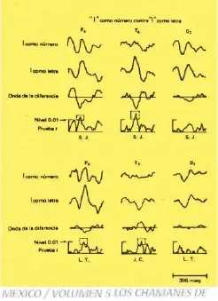
الشكل 1.1: أمثلة لجهود يستثيرها خط عمودي عُرض في سياق أعداد، الخطان 1 و5، وفي سياق حروف، الخطان 2 و6. ظهرت فروق واضحة وذات دلالة إحصائية في الاشتقاقات الجدارية والصدغية، في مكونات الجهود المستثارة ذات كمون يتراوح بين 150 و200 ملي ثانية. استُخرج كل جهد مستثار من 100 عينة. حُسب الفرق بين الموجات والاختبار باستخدام حاسوب PDP-12.
باستخدام التصميم التجريبي نفسه، عُرض على المشاركين أنفسهم الحرفان A الكبيرة وa الصغيرة، والحرفان E الكبيرة وe الصغيرة.
عند مقارنة الجهود التي تستثيرها حروف متماثلة في المعنى ومختلفة في الحجم، وُجد أن 85% من المشاركين أظهروا فرقًا ذا دلالة إحصائية، p < 0.001، في الفص القذالي، بينما أظهر 12% فقط فروقًا في الفص الجداري، Pz وP4، وفي المواضع الصدغية والمركزية، T3 وC4؛ انظر الشكل 1.2.
إن عدم العثور على فروق في المواضع الجدارية والصدغية لدى نحو 90% من المشاركين نتيجة لافتة جدًا إذا أخذنا في الاعتبار أن المنبهات الكبيرة كانت على الأقل ضعف حجم الصغيرة، وبالتالي كانت تولّد تنشيطًا مختلفًا تمامًا لشبكية العين. وفي مقابل هذه النتيجة، أظهر جميع المشاركين تقريبًا — 85% في C4 وPz، و71% في T6، و100% في O2 — فروقًا ذات دلالة، p < 0.001، بين الجهود المستثارة بحروف مختلفة المعنى لكنها متماثلة الحجم، A في مقابل E؛ انظر الشكل 1.2.
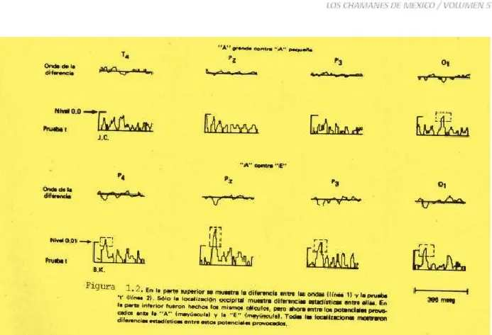
الشكل 1.2: يُظهر القسم العلوي الفرق بين الموجات، الخط 1، واختبار t، الخط 2. لا يُظهر فرقًا إحصائيًا واضحًا بين A الكبيرة وa الصغيرة إلا الموضع القذالي. وفي القسم السفلي أُجريت الحسابات نفسها، ولكن بين الجهود المستثارة بالحرفين A وE الفرديين، المتساويين في الحجم. وتُظهر جميع المواضع فروقًا إحصائية بين هذه الجهود. مفتاح الرسم: «موجة الفرق»، و«اختبار t»، ومقياس زمني مقداره 300 ملي ثانية.
تُظهر هذه النتائج أن العمليات الدماغية الضرورية المتعلقة بإسناد معنى إلى منبّه تُنفَّذ في الفصين الجداري والصدغي، بينما يُجرى تحليل خصائص المنبهات الفيزيائية في الفصوص القذالية. كذلك تحدث «عمليات المعنى» خلال الفترة من 100 إلى 300 ملي ثانية بعد تقديم المنبّه.
وعلى الرغم من استخدام منهجية مختلفة جدًا، أُحرزت في دراسة مشابهة نتائج مماثلة في الفص الجبهي؛ جونسون وتشيسني، 1974. وتُظهر تلك الدراسة ودراستنا أن البنى التي تنفذ «عمليات المعنى» موزعة ضمن نظام بالغ الاتساع، تشكل الفصوص الجدارية والصدغية والجبهية أجزاء منه.
ثمة اعتبارات نظرية ملائمة هنا. لنفترض أن الإدراك البصري لجسم يحدث عندما تُنفَّذ عمليتان دماغيتان مختلفتان: أولًا، تحويل طاقة من نوع كهرومغناطيسي، أي الضوء، إلى طاقة كهروفيزيولوجية؛ وثانيًا، تحليل هذا التحويل. يبني النظام المرتبط بالتحويل تمثيلًا للعالم الخارجي بالغ التعقيد والتطور، لكنه يظل مجرد وصف له. ولنفترض أيضًا أن هذا التمثيل يتجلى في بعض مكونات الجهود المستثارة، التي يمكن تسميتها «المكونات الخارجية المنشأ».
كذلك يمكننا افتراض أن منطقة تشريحية محددة وموضعية ترتبط مباشرة ببناء هذا التمثيل.
تشير نتائجنا إلى أن المنطقة المفترضة أعلاه هي بالفعل القشرة القذالية؛ لأنها تُظهر أن نشاطها الكهروفيزيولوجي يتغير عندما تتغير المنبهات الخارجية.
ولنفترض الآن إجراء بعض العمليات على هذا التمثيل، تتعلق بالتحليل والمقارنة بين العمليات الخارجية المنشأ وأنظمة تخزين الذاكرة، بحيث يمكن استخلاص معنى من المعلومات. لنسمّ هذه العمليات «العملية الداخلية المنشأ»، ولنسمّ الجهود المستثارة التي تتجلى فيها «المكونات الداخلية المنشأ». وإذا تابعنا بالمنطق نفسه، أمكننا تصور أن منطقة تشريحية أخرى تشارك في هذه العمليات؛ منطقة أقلّ تخصّصًا، تؤدي وظيفة ترابطية وتجمع معلومات من حواس متعددة، مع قدرتها في الوقت نفسه على الوصول إلى التمثيل الخارجي المنشأ: منطقة الفصين الجداري والصدغي. وإذا صح ذلك، يمكننا توقع ألا تتغير الجهود المستثارة المسجلة من هذه المنطقة عند إحداث تغيير في تحليل التمثيل؛ وبعبارة أخرى، عند استخلاص معلومات عن المعلومات، أي عند حدوث تغير في المعنى. وتثبت التجربة المذكورة سابقًا تمامًا أن الأمر كذلك.
[ملاحظة المترجم: وردت عبارة «ألا تتغير» بهذا النفي في النسخة المرفقة، مع أنها تناقض وصف النتائج ومنطق الفقرة؛ أبقيناها ولم نستبدلها بتصحيح غير موثّق.]
وفي الختام، تُظهر النتائج التي نوقشت هنا وجود نظامين مختلفين في الدماغ. يرتبط أحدهما، وهو النظام القذالي، ببناء العالم الخارجي، ويتسم نشاطه بالتخصص، ويتغير مع التغيرات المقابلة في الخصائص الفيزيائية للمنبهات. أما النظام الآخر، الجداري–الصدغي، فيحلل التمثيل ويستخلص منه معنى.
يتغير نشاط هذا النظام بحسب الخبرات السابقة والتوقعات المستقبلية. كما أن تغيراته مستقلة عن اختلاف الخصائص الفيزيائية للمنبهات الخارجية، لكنها تعتمد على العملية التي تبني تجريدًا انطلاقًا من صورة مُدرَكة؛ غرينبرغ–زيلبرباوم، 1976.
وأخيرًا، يعمل النظام المسؤول عن الخصائص الفيزيائية للمنبهات بزمن كمون، وباستخدام عدد أقل من العناصر العصبية على الأرجح، مقارنة بالنظام المسؤول عن إسناد المعاني، وهو أشد تعقيدًا ودقة من الأول بكثير.
[ملاحظة المترجم: لم تُذكر صفة زمن الكمون في الجملة السابقة في النسخة المرفقة؛ لم نُضف لفظ «أقصر» إلى المتن رغم أن السياق يوحي به.]
الاستنتاجات
نعلم أن الخصائص الفيزيائية لجسم بصري يُفك ترميزها بمتوسط كمون يبلغ 50 ملي ثانية منذ تنشيط الشبكية.
تتوافق هذه الفترة مع كمون المكونات المتأخرة أو الثانوية للجهود المستثارة؛ غرينبرغ–زيلبرباوم، 1980–1981.
ووفقًا لهذه الدراسة، يحدث إسناد المعاني، وهو عملية أعقد بوضوح من إدراك الأشكال، بعد ذلك بما لا يقل عن 100 ملي ثانية. أي إنه ينطوي على تنشيط عدد أكبر بكثير من العناصر العصبية. وتتفق هذه النتيجة التجريبية مع الفرضية المقدمة في الفصل الأول من هذا الكتاب، وهي:
«يرتبط كل نشاط كهروفيزيولوجي بمتغيرات نفسية تزداد دقتها وتعقيدها كلما ازداد التجمع العصبي وعدد الارتباطات بين العناصر العصبية التي ينشأ منها ذلك النشاط».
ج — التغذية الراجعة للارتباط بين نصفي الدماغ [2]
لوحظ في القسم السابق أن العمليات التي تتطلب عددًا أكبر من العناصر العصبية ترتبط بوظائف أعقد من الوظائف التي يمكن تنشيطها بعدد أقل من العناصر. وتشير هذه النتائج، إلى جانب نتائج القسم الأول، إلى أنه كلما ازداد توحّد النشاط الدماغي وترابطه، تنشّطت وظائف متزايدة التعقيد. ويظهر بوضوح في دراسات التماسك الدماغي مؤشر على التوحّد الكهروفيزيولوجي، يرتبط مباشرة بترابط العناصر العصبية للنشاط الفيزيولوجي.
قياس التماسك هو قياس التشابه بين الأنماط الكهروفيزيولوجية المسجلة في أجزاء مختلفة من الجهاز العصبي. ويدل التماسك المرتفع على تشابه كبير في أشكال أنماط تخطيط الدماغ الكهربائي، التي حُسب متوسطها أو حُلّلت في وحدة زمنية، والمسجلة في منطقتين أو أكثر، بينما يدل التماسك المنخفض على العكس.
وثمة مقياس تشابه قريب من التماسك هو الارتباط؛ وهو، إلى جانب إظهار تشابه الأنماط الكهروفيزيولوجية المسجلة في مناطق دماغية مختلفة، يُظهر مؤشرات زمنية لهذا التشابه.
وبعبارة أخرى، يدل كلٌّ من التماسك والارتباط على التشابه أو الاختلاف بين الأنشطة الكهربائية للدماغ؛ لكن الأول لا يأخذ الزمن في الحسبان، في حين يُعد التحليل الزمني أساسيًا للثاني.
تُخصص التجربة التالية لدراسة الارتباط بين نصفي الدماغ وعبرهما، وعلاقته بالمؤشرات الاستبطانية للنشاط النفسي لدى أشخاص بشريين. وكانت الفكرة المحفّزة للتجربة استكشاف الارتباطات الذاتية التي قد تتصل بحالات مختلفة من ترابط النشاط الدماغي.
[حاشية المؤلف 2] نُشر جزء من هذا القسم في: Grinberg-Zylberbaum J. (1980b). Correlativos electrofisiológicos de la Experiencia Subjetiva. Enseñanza e Investigación en Psicología. Vol. VI, No. 1 (11): 44–52.
المشاركون
دُرس أحد عشر مشاركًا بالغًا: خمسة رجال وست نساء، تتراوح أعمارهم بين 25 و32 عامًا.
التسجيلات
أُجريت تسجيلات لتخطيط الدماغ الكهربائي لدى المشاركين. كانت هذه التسجيلات ثنائية القطب، جدارية–صدغية، P3–T5 وP4–T6؛ وصدغية–قذالية، T5–O1 وT6–O2؛ وجبهية.
الطرائق التجريبية
أُجريت جميع التجارب في حجرة فاراداي مخمَّدة للصوت، جلس فيها المشاركون وخضعوا لتقنية تغذية راجعة حيوية لتخطيط الدماغ الكهربائي، على النحو الآتي:
عُرضت على المشاركين، بصريًا وباستمرار، تسجيلات ثنائية القطب من نصفي الدماغ الأيمن والأيسر ومن أجزائه الأمامية والخلفية، باستخدام راسم ذبذبات Techtronix ذي أربع قنوات وذاكرة مدمجة. وبعد فترة تدريب وتآلف مع إشارات الراسم، طُلب منهم زيادة التشابه بين أنماط تخطيط الدماغ الكهربائي المعروضة في القنوات الأربع، باستخدام أي تقنية داخلية يختارونها.
عند انتهاء فترة التدريب، كانت تظهر إشارة ضوضائية، وبعد ثلاث ثوانٍ يرسم راسم الذبذبات مسار الإشارة على شاشته في مسح واحد. واستُخدمت ذاكرة الراسم لإبقاء نمط التخطيط «مجمّدًا» ومرئيًا.
لم يُسمح للمشاركين برؤية نمط تخطيطهم إلا بعد الإبلاغ عن خبراتهم الداخلية المرتبطة بلحظة أخذ عينة التخطيط. وبعد ذلك كانت تُناقش العلاقة بين نشاطهم الدماغي وخبرتهم الذاتية وتُقاس كميًا. تولّى هذا القياس محكّمون مستقلون، كانت مهمتهم قياس التشابه بين أنماط التخطيط ببناء مقياس للارتباط بين نصفي الدماغ وعبرهما. في هذا المقياس، يدل الرقم 4 على التطابق التام، والرقم 2 على تشابه متوسط، والرقم 0 على انعدام التشابه تمامًا بين الأنماط.
استخدم المشاركون الأحد عشر تقنية التغذية الراجعة للارتباط هذه خلال السنوات الثلاث التي استغرقها إتمام التجربة. وقد طال وقت إنجاز الدراسة لأن المشاركين احتاجوا إلى التدريب قبل بدء بحث الارتباط الفعلي.
استخدمنا ثلاث تقنيات تدريب مختلفة لتحسين حساسية المشاركين وقدرتهم على التمييز، ولتهيئتهم لتقنية التغذية الراجعة الحيوية للارتباط. تمثلت عملية التدريب الأولى في العرض البصري، على قناة واحدة، لنشاط تخطيط الدماغ الكهربائي لدى المشاركين، المسجل بزوج من الأقطاب في اشتقاق جداري–قذالي. وكانت مهمتهم تحديد تغيرات خبرتهم الذاتية المرتبطة بتغيرات نمط التخطيط. في العروض الأولى، كان افتقار المشاركين إلى الحساسية الداخلية والتمييز واضحًا، إذ عجزوا عن ملاحظة أي تغير في خبرتهم عندما تتغير أشكال التخطيط. وأفادوا بأن حساسيتهم ازدادت تدريجيًا، حتى شعروا بتغير ذاتي دقيق بدأ يتوافق أولًا مع التغيرات الكبيرة، ثم مع التغيرات الأصغر في أنماط التخطيط. وأدت زيادة التمييز هذه إلى زيادة عامة في الحساسية وإلى حالات داخلية تتسم بقدرة على التمييز.
عندما أتقن المشاركون تقنية التغذية الراجعة الحيوية للتخطيط، دُرّبوا على طريقة ثانية للتغذية الراجعة الحيوية للجهود المستثارة. وهنا كانت تُجرى تسجيلات قذالية، مع مزامنة مسحة راسم الذبذبات مع ظهور ومضة منعكسة على شاشة بيضاء. وطُلب من المشاركين الانتباه إلى الومضة وإلى خبرتهم الداخلية أثناء عرضها.
ثم طُلب منهم ملاحظة أشكال الجهود التي تستثيرها الومضة، وأخيرًا ربط شكل هذه الجهود بنوعية خبرتهم الداخلية وخصائصها.
عندما أصبح المشاركون قادرين على تحديد التغيرات في مكونات جهودهم المستثارة وربطها بتغيرات خبرتهم الذاتية، أُدخلت تقنية ثالثة: طُلب منهم تعديل مكوّن أو مكوّنين من جهودهم المستثارة، باستخدام أي وسيلة تحكم يستطيعون العثور عليها، باستثناء الحركات.
وأخيرًا، من خلال التعديل الواعي والإرادي لنشاطهم الدماغي، دُرّبوا على تقنية التغذية الراجعة الحيوية للارتباط بين نصفي الدماغ، الموصوفة في البداية.
النتائج العامة
قبل ذكر النتائج التي أُحرزت بتقنية الارتباط بين نصفي الدماغ، أود ذكر بعض الملاحظات المستمدة من استخدام التقنيات الأخرى.
أولًا، كان واضحًا أن الخصائص الشكلية لتخطيط الدماغ الكهربائي مرتبطة بنوعية الخبرة الذاتية لمشاركينا.
أمكن تقدير هذه العلاقة بوضوح أكبر في المجالين الانفعالي والمعرفي. فعندما كان أحد المشاركين يشعر بحالة انفعالية «رقيقة وحنونة»، مثلًا، كان شكل خط تخطيطه سلسًا وخاليًا من التغيرات الحادة.
وعندما كان يشعر بالقلق والتشتت والفوضى الداخلية، كان خط تخطيطه بدوره مضطربًا وغير منتظم وفوضويًا. وبالمعنى نفسه، عندما كانت العمليات الفكرية للمشاركين واضحة ومنظمة، كان تخطيطهم أيضًا واضحًا ومنظمًا.
اختلف هذا التماثل باختلاف جانب الدماغ؛ فكانت العمليات الفكرية أوثق ارتباطًا بالنشاط الكهربائي المسجَّل في النصف السائد، أي الأيسر، في حين انعكست الانفعالات في نشاط النصف الأيمن. وبعد العمل بهذه التقنية عدة أشهر، أفاد بعض المشاركين بأنهم أصبحوا قادرين على التمييز بين النصف الأيسر والأيمن في خبرتهم الداخلية؛ وأحيانًا كان لديهم انطباع بأنهم في «موضع وحدة» يمكن منه مراقبة نشاطهم الدماغي كما لو كانوا شهودًا خارجيين عليه. وعندما تحقق هذا المستوى من التطور، اتضح أن العلاقة بين الخبرة الذاتية والتخطيط تكون متماثلة بنيويًا فقط ما دام المشاركون في عملية التعلّم.
عند انتهاء العملية، وحين أصبحوا قادرين على التحكم بنشاطهم الدماغي بإتقان، ظهر نوع من الاستقلال بين الخبرة والنشاط الدماغي. ولم يكن هذا الاستقلال افتقارًا إلى الحساسية كما في أول مرة خضعوا فيها للتقنية. كانت ردود أفعال المشاركين، حين تمكنوا من التعرف على توافق حالاتهم الانفعالية والفكرية مع خصائص نشاط تخطيطهم وارتباطها بها، ممتعة للمشاركة والمشاهدة، وشكّلت حافزًا دافعيًا قويًا جدًا للمشاركين ولمؤلف التجربة على السواء.
خلال تطبيق تقنية التغذية الراجعة الحيوية للجهود المستثارة، أبلغ المشاركون عن خبرات مختلفة تتعلق بظهور أشكال جهودهم وتعديلها.
ولسوء الحظ، كانت الملاحظات متنوعة بطبيعتها إلى حد لا يمكن معه قول شيء عنها، باستثناء نزعة عامة إلى الشعور بتفكك الإحساس بالحدود والاختلاف، كلما اقترب المشاركون من المكونات الأولى لشكل جهودهم المستثارة.
أما عندما ركزوا انتباههم على المكونات الأطول كمونًا، فقد انعكست هذه النزعة. وفي هذه الحالة، أبلغوا عن خبرات مرتبطة بعمليات مفاهيمية معقدة، وكانت خبراتهم عمومًا تقابل حالات أعلى من تكامل الأنا.
نتائج الارتباط
أُخذ ما مجموعه 654 عينة من تخطيط الدماغ الكهربائي، أمكن فيها ربط النشاط الدماغي بتقارير لفظية عن الحالات الذاتية.
أُجري تحليل هذه الارتباطات، الذي سيُعرض تاليًا، بالطريقة الآتية:
1. قُسمت مؤشرات الارتباط بين نصفي الدماغ وعبرهما إلى خمس فئات:
0 — انعدام الارتباط.
1 — ارتباط منخفض.
2 — ارتباط متوسط.
3 — ارتباط مرتفع.
4 — ارتباط أقصى.
2. رُوجعت، لكل فئة، السجلات التي دُوّنت فيها التقارير اللفظية.
3. قُسمت التقارير اللفظية إلى خمس فئات كما يأتي:
0 — تقارير عن التشتت واختلال التوازن والقلق.
1 — انخفاض القلق.
2 — هدوء نسبي وشعور بالتكامل.
3 — هدوء وتوازن واتصال بالأنا.
4 — توازن تام وتكامل للأنا.
أولى هذا التقسيم أهمية لمؤشرات الانفعالية والاتصال بالأنا، لأن الدراسات الاستطلاعية أشارت إلى أن انخفاض الارتباط بين نصفي الدماغ يترافق مع حالات داخلية من اختلال التوازن، بينما تظهر مستوياته المرتفعة عندما يتمكن الشخص من الاتصال بأناه في توازن وهدوء وتكامل.
ولهذا السبب، وبغرض التحقق من صحة الملاحظات الاستطلاعية، أُدرج محور التفاعل–التشتت هذا ضمن القياس الكمي. ومن مجموع العينات البالغ 654، اختيرت عشوائيًا مئة عينة من نشاط التخطيط، مع التحليل الكمي المقابل لمحتوياتها. وتُعرض هذه البيانات في الجدول 1.
[ملاحظة المترجم: يرد الجدول في صورة مضمّنة في الصفحة 18 من المصدر؛ أُبقيت صورته الأصلية لتجنب تخمين الأرقام الدقيقة.]
تشير النتائج إلى علاقة قوية بين ارتباط التخطيط والتقارير اللفظية؛ ففي 61 من العينات المئة المختارة عشوائيًا كان الفرق بين القياسات صفرًا، وفي 31 من العينات الباقية لم يتجاوز الفرق درجة واحدة. أي إنه في 92% من الحالات، كلما ارتفع ارتباط التخطيط أفاد المشاركون بأنهم أكثر هدوءًا وتمركزًا وتوازنًا وتكاملًا للأنا. وبالمقابل، كلما انخفض الارتباط أفادوا بحالات تشتت. ومن ثم، فإن توحّد النشاط الدماغي، المتجلي في تشابه نشاط التخطيط، مرتبط بحالات من التوحّد الداخلي والتوازن والسلام. وسُجلت بعض الملاحظات النوعية العامة، أبرزها علاقة ترابط نشاط الفص الجبهي بحالات أعلى من التجريد.
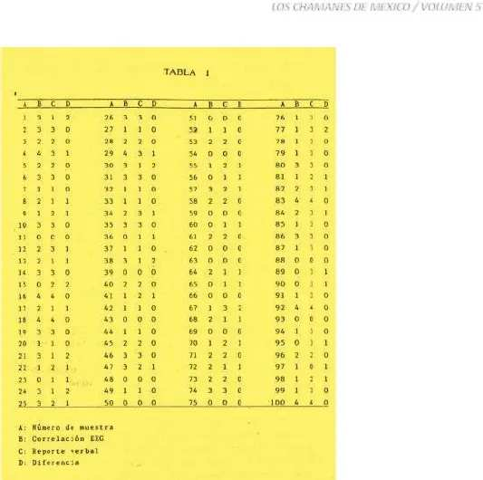
الجدول 1. مفاتيح الأعمدة: A — رقم العينة؛ B — ارتباط تخطيط الدماغ الكهربائي؛ C — التقرير اللفظي؛ D — الفرق.
ومن الملاحظات المثيرة للاهتمام أيضًا ظهور صور ومحتويات فكرية عندما ينخفض الارتباط وتنشط موجات بيتا السريعة في التسجيل. ولدى جميع المشاركين، عندما بلغ الارتباط أقصاه، أي الدرجة 4، أُبلغ عن حالات من الرضا الداخلي الشديد والسلام والوجد. أما عندما انعدم الارتباط، أي عند الدرجة 0، فأبلغ المشاركون عن التشتت والكرب والخوف، مع الإحساس بغياب المركز الذي يحقق التكامل؛ أي الإحساس بتفكك الأنا. وفي ما يلي مثالان لتسجيلات الارتباط، الشكلان 1.3 و1.4.
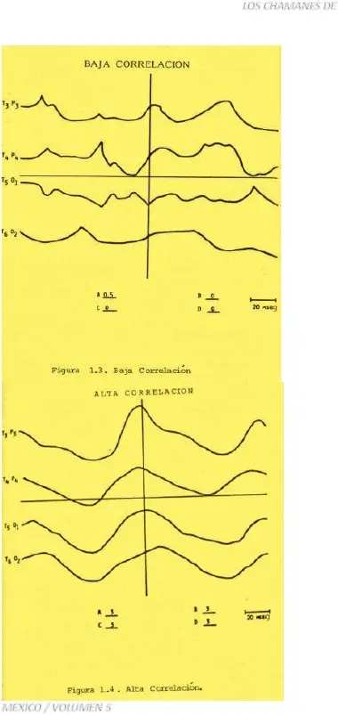
الشكل 1.3، أعلى الصورة: ارتباط منخفض. الشكل 1.4، أسفل الصورة: ارتباط مرتفع. مقياس الزمن في التسجيلات: 20 ملي ثانية.
الاستنتاجات
تشير هذه الدراسة إلى أنه كلما ازداد توحّد النشاط الدماغي تنشّطت الوظائف الأعلى مرتبة في النظام؛ أي الوظائف المرتبطة بتكامل الأنا. وهذا يدعم فرضية وجود علاقة مباشرة بين تنشيط عمليات التوحّد وتشغيل الوظائف المعقدة.
تتمة استنتاجات الفصل الأول
تتفق دراسات حديثة أجرتها مختبرات أخرى مع ما سبق. فقد أظهر أوكونور وشو، سنة 1978، وجود علاقة بين مستويات التماسك بين نصفي الكرة المخية لدى البالغين ووظائف ويتكن المتعلقة بالاعتماد على المجال والاعتماد المتبادل معه. ومن ناحية أخرى، وجد أورم جونسون وهاينز، سنة 1981، علاقة بين الحالات التأملية ومستويات التماسك.
[ملاحظة ترجمة: ورد في المصدر interdependencia، أي «الاعتماد المتبادل»، لا independencia، أي «الاستقلال»؛ أُبقي لفظ المصدر رغم أن سياق الإحالة إلى وظائف ويتكن قد يوحي بالثاني.]
ومن المثير للاهتمام جدًا أننا حصلنا على شواهد واضحة على تماثل شكلي بين هيئة النشاط الدماغي والخصائص النفسية الدقيقة للحالات الذاتية لدى المشاركين.
ولأن هذا ليس موضوع الكتاب، فلن نتعمق فيه أكثر، لكننا نقترح إجراء مزيد من الدراسات بشأنه.
الفصل الثاني
الفيزيولوجيا الكهربائية للتواصل الإنساني: التحليل اليدوي
المقدمة
رأينا وجود علاقة بين مستويات تعقيد الوظائف النفسية الفيزيولوجية وبين التوحّد وعدد العناصر العصبية المنشطة.
ولما كان التواصل الإنساني من أكثر العمليات تعقيدًا، فمن الممكن التفكير في أن مقابلاته الفيزيولوجية ترتبط بمؤشر ما لتوحّد النشاط الدماغي، وتحديدًا بالتماسك والارتباط بين نصفي الكرة المخية. ويُستدل على ذلك من نتائج التجارب التالية.
[ملاحظة ترجمة: يُستخدم «المقابل الفيزيولوجي» لترجمة correlativo fisiológico، بمعنى الظاهرة الفيزيولوجية المصاحبة، لا المتلازمة المرضية.]
التجربة الأولى
أُجريت التجربة الأولى على أزواج من المشاركين في تواصل علاجي، أي محلل نفسي ومريض متطوع.
اخترنا هذا النوع من التواصل لأن خبرة المحلل أتاحت لنا وضع معايير لتقدير التواصل، سنشرحها لاحقًا.
أُجريت الجلسات في غرف شبه صامتة وفي غرفة غِزِل. وخضع كل مشارك لست جلسات متتابعة، سُجلت في كل منها أربع اشتقاقات لتخطيط الدماغ الكهربائي لكل شخص. وهكذا حصلنا، عند إتمام دراسة كل مشارك، على مخطط كامل للمناطق الدماغية العشرين وفق النظام الدولي 10–20.
أُجري التسجيل أحادي القطب باستخدام جهاز ALVAR. وفي الوقت نفسه سُجلت الجلسات بجهاز فيديو من سوني، للاحتفاظ بصورة المشاركين وصوتهم أثناء عملية التواصل.
حلّل المحلل النفسي التسجيلات لاحقًا، مقدّرًا مستوى التواصل على مقياس من صفر إلى عشرة؛ حيث يمثل الصفر غياب التواصل، والعشرة تواصلًا مباشرًا. وكانت معايير هذا التقدير تحليل وضعية الجسم، والاسترخاء والتوتر، والحركات الجسدية، والتعبيرات اللفظية.
وبُنيت من الدرجات الناتجة رسوم بيانية تحدد مستوى التواصل في كل نقطة من نقاط التحليل، التي اختيرت «عشوائيًا»، مع الحرص على فاصل زمني شبه ثابت بينها. ومن جهة أخرى، حُللت تسجيلات تخطيط الدماغ عند النقاط الزمنية نفسها المستخدمة في تحليل الفيديو.
أُجري التحليلان بصورة مستقلة ومعمّاة؛ فلم يعرف محلل مستويات التواصل نتائج مقيم تخطيط الدماغ، والعكس صحيح.
في تحليل التخطيط، رُبطت أزواج التسجيلات من الاشتقاقات المختلفة وفق شكلها وترددها. ودُرست كل نقطة تحليل وقورنت بحسب هذين المتغيرين، بوزن 60% للشكل و40% للتردد. وبجمعهما تُستخرج قيمة التماسك الكلي على مقياس من 0 إلى 100، حيث يعني الصفر غياب التشابه تمامًا بين الأنماط، والمئة تشابهًا تامًا. ويمكن الاطلاع على تفاصيل التحليل في التجربة الثالثة. وكما في تحليل الفيديو، أُنشئت رسوم لحالات التخطيط، ثم قورنت مجموعتا البيانات أخيرًا.
حاولنا في التجربة الأولى الإجابة عن ثلاثة أسئلة:
1. هل يوجد ارتباط بين مستويات التواصل وبين أنماط التخطيط الكهربائي لمناطق دماغية لدى المرضى والمعالج؟
2. هل توجد علاقة بين مستويات التواصل والتماسك بين مناطق دماغ المعالج أو المريض؟
3. هل توجد علاقة بين تماسك مناطق دماغ المعالج ومنطقة دماغ المريض؟
4. هل توجد علاقة بين مستويات التواصل والتماسك بين مناطق دماغ المعالج أو المريض؟
[ملاحظة ترجمة: يقول المصدر «ثلاثة أسئلة»، لكنه يسرد أربعة، ويكرر السؤال الثاني في الرابع؛ أُبقي التكرار كما ورد.]
وللإجابة عن السؤال الأول نظرنا في كيفية تغيّر الارتباط بين نمطَي التخطيط في منطقتين متناظرتين من دماغَي المريض والمعالج مع تغيّر مستوى التواصل.
وحُل السؤال الثاني بربط التغيرات في مستويات التواصل بتغيرات مستويات التماسك بين منطقتين من دماغ المريض من جهة، ومن دماغ المعالج من جهة أخرى.
أما السؤال الثالث فعولج بتحليل تماسك منطقتين من دماغ المريض، ومقارنته بتماسك مناطق دماغ المعالج.
واستُخرجت من جميع التركيبات الممكنة معاملات الارتباط المعروضة فيما يلي.
أولًا، وُجد ارتباط مقداره +0.58 بين التواصل والتماسك بين منطقتي T اليسريين لدى مريض ومعالج. وكان هذا من أعلى الارتباطات، ويعني أن أنماط هذه المنطقة أصبحت أكثر تشابهًا مع ارتفاع مستويات التواصل، واختلفت عندما انخفض التواصل، كما في الرسم الأول.
وكان ارتباط التماسك بين الاشتقاقين المركزيين C3 وC4 لدى المعالج بمستويات التواصل سالبًا بمقدار 0.40، كما في الرسم الثاني، بينما كان لدى المريض موجبًا بمقدار +0.34، كما في الرسم الثالث.
وهذا يدل على أن التواصل ازداد كلما انخفض تماسك دماغ المعالج وارتفع تماسك دماغ المريض.
وبذلك أمكن الإجابة عن السؤال الثالث، ووُجد له ارتباط مقداره 0.44، كما في الرسم الرابع. ويعني هذا وجود علاقة بالفعل بين تماسك منطقتين من دماغ المريض ومنطقتين من دماغ المعالج.
[ملاحظة ترجمة: ترد القيمة 0.44 في المتن دون إشارة سالبة، بينما يذكر تعليق الرسم الرابع −0.44 صراحة. كما يرد آخر جزء من الجملة السابقة متأخرًا في المصدر، بعد تعليق الرسم الرابع؛ أُعيد هنا إلى موضعه لاستكمال الجملة.]
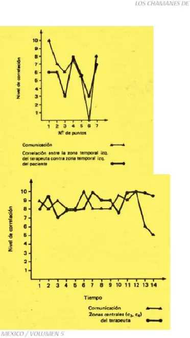
الرسم الأول. يوضح العلاقة بين مستوى التواصل وتماسك منطقتي T اليسريين لدى مريض ومعالج، في سبع نقاط مختلفة من التسجيل. بلغ الارتباط الإحصائي r = +0.58. ويشير ذلك إلى أن أنماط تخطيط الدماغ في هذه المنطقة أصبحت أكثر تشابهًا مع ارتفاع مستويات التواصل، واختلفت كلما انخفض التواصل. قيم المحور الرأسي مضروبة في 0.1.
الرسم الثاني. يعرض الارتباط بين مستوى التواصل وتماسك المناطق المركزية لدى أحد المشاركين، في أربع عشرة نقطة من التسجيل، وقد بلغ r = −0.40. ويعني ذلك أنه كلما ازداد التماسك الدماغي لدى هذا المشارك في هذه المناطق، انخفض مستوى التواصل، والعكس صحيح. وكانت الظاهرة شديدة التكرار. قيم المحور الرأسي مضروبة في 0.1، في هذا الرسم وفي الأشكال B-3 وB-4 وB-5 وB-6.
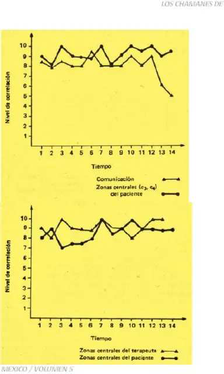
الرسم الثالث. يوضح أثرًا معاكسًا لما وُجد في الرسم B-2. ففي الجلسة نفسها، وبتحليل النقاط الأربع عشرة نفسها، بلغ الارتباط الإحصائي r = +0.34. ويعني ذلك أن التواصل كان يزداد بازدياد التماسك الدماغي لدى هذا المشارك في هذه المناطق، والعكس صحيح.
الرسم الرابع. يتكون من النقاط الأربع عشرة التي تُظهر التماسك الدماغي لكل واحد من المشاركين في الرسمين B-2 وB-3. وبلغ الارتباط الإحصائي r = −0.44؛ أي إنه كلما ازداد التماسك الدماغي في المناطق المركزية لدى أحد المشاركين، انخفض التماسك في المناطق نفسها لدى المشارك الآخر، والعكس صحيح.
وعند هذه النقطة أمكن طرح بعض الاستنتاجات:
1. ترتبط بعض المناطق الدماغية بمستويات التواصل من حيث نشاط التخطيط الكهربائي أكثر من غيرها. وقد ظهر ذلك حتى الآن بوضوح بالغ في المناطق الصدغية الجدارية اليسرى.
2. يكتسب دماغان أنماط نشاط متشابهة ويُظهرانها بحسب التواصل الذي يحدث بينهما، ولا سيما التواصل ما قبل اللفظي.
أُجري تحليل أدق لهذه البيانات؛ لأن تحليل التسجيلات أظهر أنه عندما يصل التواصل إلى الدرجة عشرة، يظل ثابتًا فترة من الزمن، بينما تحدث أحيانًا تغيرات مهمة في أنماط تخطيط الدماغ لدى الشخصين في وقت واحد وعند اللحظة الزمنية نفسها. ودفعنا هذا إلى التفكير في أنه، رغم بلوغ تواصل يُعد تقليديًا أقصى ما يمكن، فلا بد من وجود مستويات من العمق يمكنها أن تميز بين وجود التواصل المباشر وغيابه. ولذلك شرعنا في تفسير البيانات انطلاقًا من النقاط التي أظهرت تغيرًا مهمًا من منظور التخطيط الكهربائي للدماغ. وبالاستعانة بأشرطة الفيديو توصلنا إلى النتائج التالية:
1. في الجلسات التي أفاد فيها المعالج بوجود تعاطف أكبر مع المريض، كان التماسك بين الأنماط الدماغية للشخصين أكثر ثباتًا، ولم يكد يتغير حين كان التواصل في أقصاه، كما في الرسم الخامس.
2. وعلى العكس، كانت التغيرات لدى المشاركين الذين أظهروا تعاطفًا أقل أكبر بكثير، من حيث النوع والمقدار. وإلى جانب تأثير ذلك في قيمة الارتباط، التي انخفضت بوضوح، لم يتحقق استقرار بين نشاط الدماغين، كما في الرسم السادس.
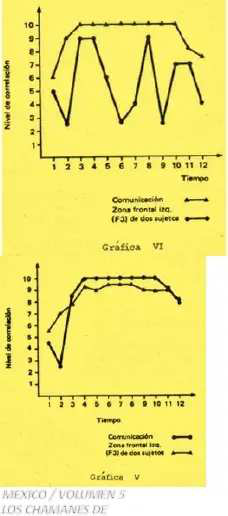
مفاتيح الرسمين الخامس والسادس: المحور الرأسي «مستوى التواصل»، والمحور الأفقي «الزمن»؛ والمنحنيان للتواصل ولنشاط المنطقة الجبهية اليسرى F3 لدى المشاركين. يظهر الرسم السادس في الأعلى والخامس في الأسفل.
التجربة الثانية
أُضيف عنصر مهم في هذه التجربة، هو إدخال شخص ثالث إلى نظام التواصل؛ وبذلك بدأت مرحلة دراسة التواصل الجماعي. وسنعرض فيما يلي نتائج أولية.
انطلاقًا من النتائج المذكورة سابقًا، قررنا أنه، لاستبعاد بعض المتغيرات غير المضبوطة، من المهم أن يؤدي الأشخاص الثلاثة نوع النشاط نفسه. وبذلك يسهل رصد التغيرات الحقيقية في النشاط الفردي، وتأثير هذه التغيرات في نشاط الآخرين.
سُجل اشتقاقان ثنائيا القطب من الفص الجبهي لكل مشارك، أثناء وجودهم في حجرة شبه صامتة. وكانت التعليمات أن يركزوا، وأعينهم مغلقة، على المنطقة بين الحاجبين؛ لأن ذلك يمنح إحساسًا جسديًا مميزًا جدًا وسهل التمييز، يتكون من وخز مصحوب بضغط خفيف في المنطقة، يظهر ويختفي فجأة.
وسنشير من الآن فصاعدًا إلى هذه الظاهرة باسم «التنشيط». وكان لدى كل مشارك مفتاح يبلّغ به القائم بالتجربة لحظة إدراكه هذه الأحاسيس، وكذلك لحظة توقفها، أي بدء الإحساس الذي سمّيناه «التنشيط» وزواله.
وبذلك أمكن تحليل بيانات تخطيط الدماغ في ثلاثة أوضاع:
1. عندما يكون كل مشارك في حالة تنشيط بمفرده.
2. عندما يكون اثنان من المشاركين في حالة تنشيط.
3. عندما توجد أحاسيس التنشيط لدى الأشخاص الثلاثة.
من جهة، قورن نشاط تخطيط الدماغ لدى كل مشارك بنشاط كل من الآخرين في الأوضاع الثلاثة؛ ومن جهة أخرى، بُحث عن التغيرات المحددة التي قد يُظهرها كل منهم على امتداد الجلسة، للتحقق لاحقًا مما إذا كانت تقابل تغيرًا في الوضع.
وحُدد عدد النقاط المحللة في كل حالة خاصة مع الحرص على تقارب مدد الحالات.
أسفر التحليل عن البيانات التالية:
1. أشار اثنان من المشاركين، أو الثلاثة، في مناسبات متكررة، وفي الوقت نفسه، إلى تغير في الحالة، سواء بالتنشيط أو بإلغائه، كما في الشكل 2.2.
2. أظهر أحد المشاركين في جميع الجلسات انخفاضًا مهمًا في جهد نشاطه الكهربائي الدماغي عندما كان الآخران في حالة تنشيط. ومع ذلك، لم يكن الجهد يعود دائمًا في اللحظة نفسها التي يتوقف فيها تنشيط أحد المشاركين.
3. في الجلسات الأخيرة، لوحظ تغير مهم في تسجيل تخطيط الدماغ قبل ثوانٍ من الإبلاغ الرسمي عن التغير بواسطة المفتاح. وكانت هذه التغيرات أحيانًا باتجاه زيادة النشاط، وأحيانًا باتجاه انخفاضه، كما في الشكل 2.1.
4. كلما كان أحد المشاركين في حالة تنشيط أظهر تماسكًا دماغيًا أعلى من حالة عدم التنشيط. وعندما كان اثنان من المشاركين في حالة تنشيط، كان التسجيل يُظهر، في معظم المرات، تماسكًا لدى الثلاثة، كما في الشكلين 2.2 و2.3.
5. اكتُشفت تغيرات أخرى في تردد الموجات وسعتها وشكلها، غير أن هذه النتائج تتطلب دراسات لاحقة لاستكشافها بعمق أكبر.
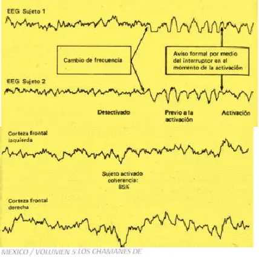
الشكل 2.2. يُظهر، أولًا، تغيرًا في تسجيل تخطيط الدماغ لدى مشاركين قبل الإبلاغ الرسمي عن تغير الحالة؛ وثانيًا، تزامن الإبلاغ الرسمي عن تغير الحالة.
الشكل 2.3. يوضح كيف يُظهر أحد المشاركين مستوى منخفضًا نسبيًا من التماسك عندما لا يكون في حالة تنشيط.
مفاتيح الرسم: تخطيط المشارك 1؛ تغير التردد؛ تخطيط المشارك 2؛ الإبلاغ الرسمي بواسطة المفتاح عند لحظة التنشيط؛ غير منشط؛ قبل التنشيط؛ التنشيط؛ القشرة الجبهية اليسرى؛ القشرة الجبهية اليمنى. والنص داخل الرسم السفلي: «المشارك منشط، التماسك 85%».
[ملاحظة ترجمة: يوجد اختلاف بين وصف الشكل 2.3 في المتن، الذي يقول «غير منشط»، وبين العبارة داخل الرسم، التي تقول «منشط»؛ حُفظ النصان كما وردا.]
التجربة الثالثة
بهدف تكرار الدراسات السابقة وتوسيعها، أُجريت هذه الدراسة الثالثة، التي حاولت إيجاد علاقات بين أنماط تخطيط الدماغ الكهربائي وما سميناه «التواصل المباشر».
وكان المطلوب تحديدًا أن يحاول المشاركون التواصل مع رفاقهم معتمدين فقط على ما يجدونه في تجربتهم الداخلية. وقد حرصنا على أن يبقوا ساكنين، مع تمتعهم بحرية كاملة في التعبير، من دون كبت أي إحساس داخلي. وفي الوقت نفسه سُجل تخطيط الدماغ الكهربائي من مناطق متعددة من جماجم شخصين أو أكثر.
الإجراء
جلس ما بين شخصين وأربعة أشخاص براحة، داخل قفص فاراداي في غرفة صامتة، وفق الشروط التالية: 1) ظلام شبه كامل يسمح برؤية الحدود الخارجية فقط، دون تمييز التفاصيل؛ 2) الجلوس ساكنين على مسافة تقارب عشرين سنتيمترًا، من دون تلامس؛ 3) إغماض العينين في معظم الأحيان؛ 4) محاولة الانتباه إلى الخبرة الداخلية؛ 5) إبقاء التفكير حرًا قدر الإمكان، من دون كبت أية خبرة؛ 6) محاولة التواصل باستخدام مادة ذاتية فقط، مثل استحضار الصور، وتذكّر الأحداث، والمحافظة على حالة ملائمة لاستقبال الرسائل وإرسالها.
وُصل كل مشارك بأقطاب فوق القشرة الجبهية، حول F7 وF3 وF4 وF8، وفي بعض الأحيان فوق القشرة الصدغية أيضًا، حول T3 وT5 وT4 وT6، وكان التسجيل ثنائي القطب. ووُصلت الأقطاب بنظام تضخيم وتسجيل، هو جهاز بيكمان متعدد القنوات ذو ثماني قنوات، بحيث سُجل نشاط تخطيط الدماغ للمشاركين على ورق الجهاز خلال مدة معينة، بلغت عمومًا دقيقتين لكل محاولة. وخلالها حاول المشاركون ألا يكرروا أي محتوى ذاتي، بينما يجربون التواصل. ثم أفادوا شفهيًا بما يتذكرونه من خبرات ذاتية، وسُجلت إفاداتهم صوتيًا وكُتبت.
قِيس نجاح محاولة التواصل بمقارنة الإفادات اللفظية من حيث تشابه محتواها أو ترابطه؛ فإذا توافقت إفادتا شخصين في عنصر أو أكثر، عُدّ ذلك مستوى مرتفعًا من التواصل. أما إذا لم يوجد تشابه بين العناصر، واختلف موضوع كل إفادة، فصُنّف التواصل منخفضًا. ووُضع مقياس من 0 إلى 3، يعني الصفر فيه غياب العلاقة تمامًا، والثلاثة تواصلًا مباشرًا.
ولزيادة موثوقية هذا التقدير، أجرى باحثان التقييم على المقياس بصورة مستقلة ومعمّاة، ثم قورنت درجاتهما لاحقًا. وبلغ الارتباط الإحصائي بين التقديرين r = +0.89، وكان ذا دلالة إحصائية باحتمال مصاحب للحدوث بالمصادفة أقل من 0.05. انظر الجدول 2.
وفي مرحلة لاحقة قورن هذا التقدير الكمي بتحليل نشاط تخطيط الدماغ لدى المشاركين، كما سيأتي. وأُجريت المقارنة «معمّاة»؛ أي قورنت درجات تحليل التخطيط من دون معرفة مسبقة بدرجات الإفادات اللفظية.
قُيّمت ثانية واحدة من نشاط كل اشتقاق من اشتقاقات تخطيط الدماغ، وسُميت هذه المنطقة المدروسة «نقطة». وفُحصت كل محاولة في خمس نقاط، وكانت الجلسة تتألف عمومًا من خمس محاولات. وأُجري التحليل «يدويًا»، من دون مساعدة أجهزة، لعدم وجود تجهيزات قادرة، حتى ذلك الوقت، على إجراء مقارنة من هذا النوع.
دُرست كل نقطة تحليل وقورنت بنقاط بقية الاشتقاقات وفق ثلاثة متغيرات: 1) الشكل؛ 2) التردد؛ 3) الطور. وأُعطي كل منها وزنًا مختلفًا: 50% و30% و20% على التوالي. ويعطي مجموعها قيمة التماسك الكلي على مقياس من 0 إلى 100. وأُدخل المتغير الأخير، أي الطور، في هذه التجربة الثالثة لتوفير مرجع جديد يساعد في جعل تحليل التماسك أكثر دقة.
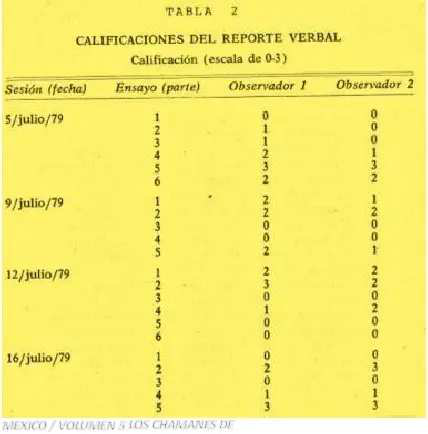
الجدول 2: تقديرات الإفادة اللفظية، على مقياس من 0 إلى 3. الأعمدة: الجلسة «التاريخ»؛ المحاولة «الجزء»؛ المراقب الأول؛ المراقب الثاني. وتواريخ الجلسات الظاهرة: 5 و9 و12 و16 يوليو 1979.
يعرض الجدول تقديرات مراقبين لتشابه الإفادات اللفظية. وبلغ الارتباط الإحصائي بين التقديرين r = +0.89، وكان ذا دلالة إحصائية باحتمال مصاحب للحدوث بالمصادفة أقل من 0.05.
دُرس الشكل بمقارنة هيئة أو تكوين ثانية واحدة من نشاط التخطيط في اشتقاقين. ووُضع مقياس من 0 إلى 50، حيث يعني الصفر شكلين غير متشابهين، والخمسون شكلين متطابقين.
وحُدد التردد بمقارنة عدد الدورات في الثانية لكل اشتقاق، وأُعطيت قيم من 0 إلى 30، بحسب التشابه أو الاختلاف في عدد الدورات في الثانية لكل قناة. فإذا تطابق الاشتقاقان في عدد الدورات، مثلًا، أُعطيت قيمة 15، وإذا كان الفرق 10 أو أقل أُشير إلى قيمة صفر.
[ملاحظة ترجمة: يذكر المصدر مدى من 0 إلى 30، لكنه يعطي التطابق قيمة 15، ويذكر «10 أو أقل» للفرق المقابل للصفر؛ نُقل هذا الوصف كما هو دون تصحيح تخميني.]
ولدراسة التشابه في الطور استُخدم مقياس من 0 إلى 20. وكان الصفر يعني غياب التشابه تمامًا من حيث التباعد الزمني بين مجموعتين من الموجات المتشابهة في اشتقاقين. أي إن تطابق مجموعة موجات أحد الاشتقاقين تمامًا مع الأخرى يستحق أعلى درجة؛ أما إذا بلغ التباعد حدًا لا يعود فيه أحد طرفي مجموعة الموجات يلامس أيًا من طرفي المجموعة المشابهة في الاشتقاق الآخر، فتكون الدرجة هي الدنيا. ويتحدد التماسك النهائي بين نقطتين بالكامل بجمع قيم التشابه في الشكل والتردد والطور، ويُعبّر عنه على مقياس من 0 إلى 100، حيث تعني المئة تماسكًا تامًا، والصفر غيابه التام.
أُنشئت رسوم بيانية، انظر الرسوم من السابع إلى الحادي عشر، يمثل فيها المحور الأفقي نقاط التحليل الخمس، والمحور الرأسي مقدار التماسك أو التشابه.
وتعرض الرسوم أساسًا نتائج التماسك داخل المشارك، ومتوسطات التماسك لجميع المقارنات الممكنة، أي متوسط التماسك الكلي. ويعرض الجدول 3 نتائج تقييم «بالعين المجردة» أجراه باحثان لمجموعة قيم التماسك داخل المشاركين ومتوسطات التماسك الكلي، باستخدام مقياس من 0 إلى 3، وكذلك الارتباط الإحصائي لبعض أزواج قيم التماسك. وبلغ الارتباط الإحصائي بين التقديرين r = +0.48، وكان ذا دلالة إحصائية باحتمال مصاحب للحدوث بالمصادفة أقل من 0.05. وتُعرض مع الرسوم أيضًا نصوص الإفادات اللفظية للمشاركين المعنيين.
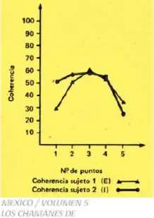
الرسم السابع. يمكن ملاحظة العلاقة بين تماسك تخطيط الدماغ لدى المشاركين، وكذلك بين إفاداتهم اللفظية، في هذا الرسم وفي معامل الارتباط الإحصائي المعروض معه.
يُعرض مستوى التماسك بين نصفي الكرة المخية في المناطق الجبهية والصدغية لدى مشاركين اثنين، في خمس نقاط مختلفة من تسجيل تخطيط الدماغ. ومدة التسجيل دقيقتان وعشر ثوانٍ.
بلغ الارتباط بين قيم التماسك لدى أحد المشاركين والقيم المناظرة لدى الآخر عبر نقاط التسجيل الخمس r = +0.96، وكان ذا دلالة إحصائية باحتمال مصاحب للحدوث بالمصادفة أقل من 0.05.
الإفادة اللفظية:
المشارك 1: في البداية صورة كأس بطولة مع يدين مرفوعتين. التفكير في الصور. وفي النهاية «الدخول» في التأمل.
المشارك 2: ترك نفسه تنساب. صورة كأس رياضية من الذهب. صور كثيرة. رأى المشارك 1 كما هو جالس. ثم صورة باتاغونيا وكأس ذهبية.
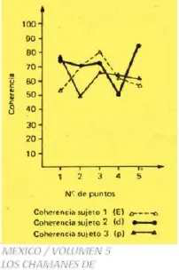
الرسم الثامن. يمكن ملاحظة غياب العلاقة بين تماسك تخطيط الدماغ لدى المشاركين، وكذلك بين إفاداتهم اللفظية، في هذا الرسم وفي معامل الارتباط الإحصائي المعروض.
يُعرض مستوى التماسك بين نصفي الكرة المخية في المناطق الجبهية لدى ثلاثة مشاركين، في خمس نقاط مختلفة من تسجيل تخطيط الدماغ. ومدة التسجيل دقيقتان وخمس ثوانٍ.
بلغ الارتباط الإحصائي بين المشارك 1 والمشارك 2 مقدار r = +0.09، ولم يكن ذا دلالة إحصائية.
الإفادة اللفظية:
المشارك 1: ظن أن الوقت سريع جدًا. لم يكن لديه متسع للتواصل.
المشارك 2: ألم أو ضغط في العين اليسرى. استقبال رسالة غير محددة ينتهي عند إطفاء جهاز التسجيل.
المشارك 3: حاول استقبال رسالة، وشعر بأنهن أيضًا يحاولن استقبال رسالة.
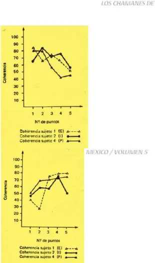
الرسم التاسع. مثال لقيم تماسك تتجمع في الجزء الأعلى من الرسم، فوق القيمة 50.
الإفادة اللفظية:
المشارك 1: فكر في أن التواصل ليس استقبال رسائل ولا إرسالها. ثم ألم في الجانب الأيسر من الصدغ.
المشارك 2: حاول استقبال رسالة، لكنه شعر بأنهن منغلقات. لم يشعر بالتواصل.
المشارك 4: ضغط في العين اليسرى. إحساس يشبه استقبال رسائل غير محددة، وجوع.
الرسم العاشر. مثال لقيم تماسك تتجمع في الجزء الأوسط من الرسم، حول القيمة 50.
الإفادة اللفظية:
المشارك 1: ترقّب في البداية، ثم حاول التركيز والاسترخاء. وظل كذلك محاولًا الشعور بالمشاركين 2 و4.
المشارك 2: أرسل صورة كواكب. ثم حاول استقبال رسالة من المشاركين الآخرين ولم يستطع.
المشارك 3: أفكار مشتتة.
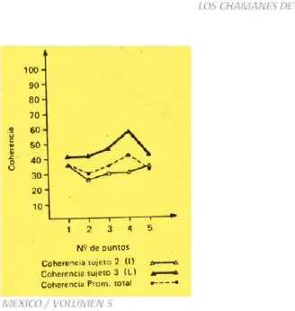
الرسم الحادي عشر. مثال لقيم تماسك تتجمع في الجزء الأدنى من الرسم، تحت القيمة 50.
الإفادة اللفظية:
المشارك 2: فكر أولًا في المشارك 1. ثم فجأة صورة الهرم الأكبر. تحول أبو الهول إلى تمثال تشاك مول، ثم عاد إلى أبي الهول عند الهرم الأكبر. كان يرى الأسد ذا رأس المرأة. وكان يرى الهرم والأسد.
المشارك 3: حاول إرسال صور أهرام. وجاءته صورة أهرام تشبه أكوام جليد في القطب الشمالي. وفكر في الأجسام الطائرة المجهولة.
النتائج
إذا قارنا الجدول 2 بالجدول 3، لاحظنا أن الإفادات اللفظية التي منحها المراقبان درجات مرتفعة تتوافق عمومًا، في خمس حالات من سبع، مع رسوم يوجد فيها ارتباط مرتفع بين زوج واحد على الأقل من قيم التماسك. ويعرض الجدول 4 الجلسات التي كانت فيها هذه العلاقة أوضح. ونقدم فيما يلي إفادتين لفظيتين مثيرتين للاهتمام، إحداهما شديدة الترابط والأخرى غير مترابطة، مع العلاقة الإحصائية المقابلة لكل منهما؛ انظر الرسمين السابع والثامن.
في 16 يوليو 1979، قدم مشاركان وُصلا بأقطاب فوق القشرة الجبهية اليمنى واليسرى الإفادتين التاليتين:
المشارك 1: أولًا صورة كأس مع يدين مرفوعتين؛ تفكير في الصور؛ وفي النهاية «الدخول» في التأمل.
المشارك 2: ترك نفسه تنساب؛ صورة كأس رياضية من الذهب؛ صور كثيرة؛ رأى المشارك كما هو جالس؛ ثم صورة باتاغونيا وكأس ذهبية.
بلغ الارتباط الإحصائي بين مستويات التماسك بين نصفي الكرة المخية لدى الشخصين r = +0.96، وكان ذا دلالة إحصائية باحتمال مصاحب للحدوث بالمصادفة أقل من 0.05.
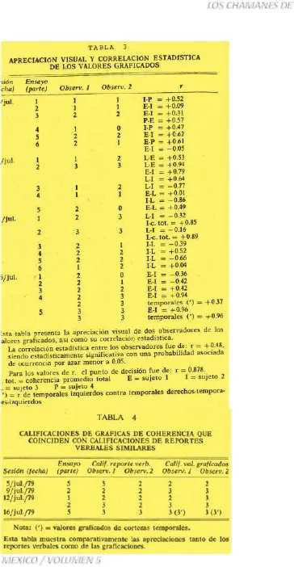
الجدول 3: التقدير البصري والارتباط الإحصائي للقيم المرسومة. الأعمدة: الجلسة «التاريخ»؛ المحاولة «الجزء»؛ المراقب 1؛ المراقب 2؛ معامل الارتباط r. ويعرض الجدول تقدير مراقبين للقيم المرسومة ومعاملاتها الإحصائية. بلغ الارتباط الإحصائي بين المراقبين r = +0.48، وكان ذا دلالة إحصائية باحتمال مصاحب للحدوث بالمصادفة أقل من 0.05. وللقيم المقترنة بمعامل فاي (Phi) الناتج من قرار المراقب: r = 0.878. ويُقرأ الترميز: I للمشارك 1، وE للمشارك 2، وP للمشارك 3؛ وt تشير إلى المناطق الصدغية اليسرى مقابل المناطق الصدغية اليمنى. ويظهر اختصار «tot.» للمتوسط الكلي.
الجدول 4: درجات رسوم التماسك التي تتوافق مع درجات الإفادات اللفظية المتشابهة. الأعمدة: الجلسة «التاريخ»؛ المحاولة «الجزء»؛ درجات الرسوم لدى المراقبين 1 و2؛ درجات الإفادة اللفظية لدى المراقبين 1 و2. ملاحظة: القيم بين القوسين تشير إلى رسوم المناطق الصدغية. ويعرض الجدول مقارنة تقديرات الإفادات اللفظية والرسوم البيانية.
[ملاحظة ترجمة: الطرف الأيسر من صورة الجدول 3 مقصوص جزئيًا في المصدر المرفق؛ حُفظت الصورة كما هي، دون اختلاق بيانات للأجزاء غير المقروءة.]
وفي 5 يوليو من العام نفسه، أفاد ثلاثة مشاركين وُصلوا بأقطاب فوق القشرة الجبهية اليمنى واليسرى بما يلي:
المشارك 1: ظن أن الوقت سريع جدًا؛ لم يكن لديه متسع للتواصل.
المشارك 2: ألم أو ضغط في العين اليسرى؛ استقبال رسالة غير محددة ينتهي عند إطفاء جهاز التسجيل.
المشارك 3: حاول استقبال رسالة.
وبلغ الارتباط الإحصائي بين أقرب مستويات التماسك بين نصفي الكرة المخية، لدى المشاركين 1 و2، مقدار r = +0.09.
يمكن تقسيم الإفادات اللفظية التي تتوافق مع قيم تماسك مترابطة إلى الأقسام التالية:
أ) رسوم مترابطة ذات تماسك مرتفع، أي إن معظم درجاتها تقع فوق القيمة 50، كما في الرسم التاسع.
ب) رسوم مترابطة ذات تماسك متوسط، أي إن معظم درجاتها تقع حول القيمة 50، كما في الرسم العاشر.
ج) رسوم مترابطة ذات تماسك منخفض، أي إن معظم درجاتها تقع تحت القيمة 50، كما في الرسم الحادي عشر.
ليس هذا التقسيم واضحًا جدًا في الدراسة، بسبب قلة الحالات المنتمية إلى القسمين الطرفيين، المرتفع والمنخفض؛ لكننا نعرضه لأنه يشير إلى اتجاهات محتملة يمكن دعمها أكثر في دراسات لاحقة.
ويبدو أن الإفادات اللفظية المتوافقة مع التماسك المرتفع تعبّر عن حالة من الهدوء والشعور بالعافية لدى المشارك. أما المتوافقة مع التماسك المنخفض فتشير، في معظمها، إلى ظهور صور بصرية.
وعندما لم يوجد ارتباط بين المشاركين أو المناطق، ظهرت عمومًا إفادات عن موضوعات مختلفة وعن غياب التواصل المباشر. وكان بعض المشاركين أحيانًا يترقبون حدوث شيء يتعلق بإشباع حاجات يمكن تسميتها «مادية»، كالتفكير في الحصول على شيء معين أو الوصول إلى وضع معين، كما في الرسم الثامن.
وخلاصة ما يمكن قوله من هذه الدراسة أن التواصل المباشر اقترن بترابط قيم التماسك المسجَّلة لدى المشاركين، سواء أكانت تلك القيم مرتفعة أم منخفضة.
وفي المقابل، اقترن مستوى التماسك المنخفض بغياب التواصل المباشر، وبظهور توقعات متجهة إلى المستقبل لدى بعض المشاركين. ومن جهة أخرى، عندما كان التماسك مرتفعًا أُبلغ عن شعور بالعافية والهدوء، وعندما كان منخفضًا أُبلغ عن صور حية. [3]
[ملاحظة ترجمة: تميّز الفقرة الأولى بين ترابط قيم التماسك ومستواها، ثم تربط الفقرة التالية انخفاض المستوى بغياب التواصل؛ أُبقي هذا الاختلاف في صياغة الاستنتاج كما في المصدر.]
الاستنتاجات
في الختام، ووفق النتائج المعروضة آنفًا، يمكن القول إن التواصل أصبح أكثر فاعلية بين المشاركين كلما تقاربت لديهم مستويات التماسك بين نصفي الدماغ، سواء أكانت تلك المستويات مرتفعة أم منخفضة. [تكرر في الأصل لفظ «بين» في العبارة الإسبانية inter y/o interhemisférica.]
وهذا يتفق مع الفرضية الأولية التي تشير إلى علاقة وثيقة بين العمليات المعقدة أو الوظائف ذات الدرجة العالية من التطور وبين توحّد النشاط الكهروفيزيولوجي للدماغ.
[حاشية 3: نُشر جزء من هذا الفصل في: Grinberg-Zylberbaum, J., 1982, “Psychophysiological Correlates of Communication, Gravitation and Unity. The Syntergic Theory. Journal”. وتنتهي الإحالة في المصدر المرفق عند كلمة Journal دون استكمال اسم المجلة أو بياناتها.]
التواصل الإنساني، في أي مستوى من مستوياته، من أكثر الوظائف تعقيدًا وأحدثها في تطور الكائنات الحية. وكون مقابله الكهروفيزيولوجي هو بالضبط التماسك بين نصفي الكرة المخية يدل على ارتباطه بعمليات توحّد شديدة التعقيد.
ولما كنا قد رأينا أن التماسك والارتباط بين نصفي الكرة المخية هما الأساس الفيزيولوجي لخبرات الأنا، وأن وظيفة الأنا من أعقد الوظائف الموجودة، فإن العلاقة بين عمليات التوحّد والتعقيد الوظيفي تكون قد أُثبتت تجريبيًا.
الفصل الثالث
أنماط الارتباط بين نصفي الكرة المخية أثناء التواصل الإنساني: التحليل الآلي
المقدمة [4]
رأينا سابقًا وجود علاقة بين تعقيد الوظيفة وبين عدد العناصر العصبية التي تنشئها ودرجة ترابطها.
وعُرض مثال لهذه العلاقة في الفصل السابق، الذي وصف مقياسًا كهروفيزيولوجيًا، هو التماسك بين نصفي الكرة المخية، مرتبطًا بعملية التواصل الإنساني المعقدة.
وحين أتيحت لنا فرصة استخدام حاسوب PDP 11-40 المثبت في كلية علم النفس، قررنا أتمتة حساب الارتباط بين نصفي الكرة المخية. وطوّرنا برنامجًا أتاح، للمرة الأولى، رسم سلسلة من معاملات الارتباط بين نصفي الكرة المخية في صورة أنماط. وهكذا أعدنا اختبار الفرضية الأصلية تجريبيًا، بطريقة أكثر صرامة وموثوقية من الطريقة المستخدمة سابقًا.
يعرض هذا الفصل النتائج التي حصلنا عليها خلال السنوات الأخيرة باستخدام هذه الطريقة لحساب أنماط الارتباط بين نصفي الكرة المخية.
الطريقة
دُعي مشاركون بالغون إلى الجلوس براحة داخل حجرة فاراداي معزولة صوتيًا. وطُلب منهم البقاء هادئين، في ظلام شبه تام، وأعينهم مغلقة، من دون نطق كلمة، وعلى مسافة تقارب خمسين سنتيمترًا بعضهم من بعض. وفي هذا الوضع سُجل نشاط تخطيط الدماغ من نصفي الكرة الأيمن والأيسر لكل مشارك، باستخدام اشتقاقات جبهية قذالية ثنائية القطب. واستُخدمت أيضًا تسجيلات أحادية القطب لدى بعض المشاركين. وضُخّم النشاط باستخدام جهاز بيكمان متعدد القنوات، بمرشحات بين 3 و45 هرتز. والتُقط النشاط بمسجل أجهزة ذي تضمين ترددي FM، ثم حُوّل إلى أرقام بواسطة محول تماثلي رقمي، وخضع للتحليل باستخدام حاسوب PDP 11-40. وأُجريت معظم التجارب على أزواج من المشاركين؛ فقد دُرس حتى الآن ثلاثة عشر زوجًا، وأُجريت كذلك دراسات على أربع مجموعات ثلاثية.
[حاشية 4: شكرًا لمساعدة ميغيل أنخل غيفارا، ودانييل سارابوسو، وخولييتا راموس، في تطوير البرامج المستخدمة.]
حُوّلت إشارة تخطيط كل نصف من دماغ كل مشارك إلى قيم رقمية، بأخذ عينة واحدة كل أربعة أجزاء من الألف من الثانية. وكل 64 قيمة، أي 256 ملي ثانية، أُجري تحليل ارتباط باستخدام خوارزمية بيرسون للعزم الضربي. وحُلّل نحو 320 معامل ارتباط لكل 82 ثانية من نشاط تخطيط الدماغ. ورُسمت هذه الارتباطات بطريقة تتيح الحصول على أنماط الارتباط بين نصفي الكرة المخية لكل مشارك خلال كل جلسة؛ وكانت الجلسات تستغرق في المتوسط نحو خمس عشرة دقيقة. وسُئل المشاركون عن خبراتهم الذاتية خلال جلسة التواصل. وأُخذت عشر عينات لكل شرط تجريبي.
استُخدم تصميم A–B–A′ في بعض التجارب. ففي الفترة A سُجل نشاط كل مشارك بصورة مستقلة. وسُميت الرسوم الناتجة للارتباط بين نصفي الكرة المخية رسومَ حالة الضبط الأولية. وبعد فترة الضبط الأولية A، طُلب من المشاركين التواصل داخل حجرة فاراداي، وسُجل نشاط تخطيط الدماغ مدة خمس عشرة دقيقة في الظروف المذكورة. وسُميت هذه الفترة B، أو الفترة التجريبية للتواصل الثنائي. وتلتها مباشرة فترة ضبط نهائية A′، أُعيد فيها تسجيل النشاط، لكن مع عزل المشاركين ومن دون تواصل. وكانت تعليمات الفترة B شفهية، وتضمنت أن يشعر المشاركون بحضور بعضهم بعضًا، بينما يظلون صامتين ويتركون أفكارهم تتدفق. وتحققنا من فهمهم التعليمات بأسئلة قبل الجلسة وبعدها. وأتاحت الأسئلة اللاحقة أيضًا معرفة درجة النجاح المحققة في التواصل المباشر.
في بعض التجارب طُلب من المشاركين الضغط على مفتاح كلما تمكنوا من الشعور بحضور رفيقهم. ووُصلت المفاتيح بمولّد نبضات مربعة، سُجلت على أشرطة مغناطيسية بالتزامن مع تسجيلات نشاط تخطيط الدماغ. واستُخدم سجل النبضات للمقارنة مع النشاط الدماغي، وبوصفه مقياسًا موضوعيًا للتواصل.
وأُجريت أحيانًا تسجيلات لدى أكثر من مشاركين اثنين. وإلى جانب تسجيلات الارتباط بين نصفي الكرة المخية لكل فرد، أجرينا دراسات سميناها «التوافق في تخطيط الدماغ بين المشاركين». وفي هذه الدراسات استُخدمت منهجية A–B–A′ نفسها؛ فحسبنا الارتباط بين نشاط النصف الأيمن لدى أحد المشاركين ونشاط النصف الأيمن لدى الآخر، ثم حسبناه بالطريقة نفسها بين نصفيهما الأيسرين. وهكذا حصلنا على ارتباطات بين نشاط تخطيط الدماغ لأزواج من المشاركين.
كانت كثافة هذه الارتباطات مماثلة لكثافة الارتباطات الفردية بين نصفي الكرة المخية؛ أي نحو 320 معامل ارتباط كل 82 ثانية.
النتائج
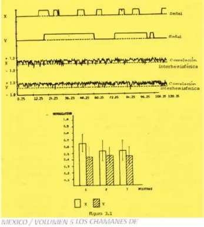
الشكل 3.1.
يُظهر الشكل 3.1 نمطَي الارتباط بين نصفي الكرة المخية لدى مشاركين اثنين خلال جلسة وُصف التواصل فيها بأنه قوي وعميق التعاطف. وإلى جانب الأنماط الفردية للتماسك، يُظهر الشكل إشارات كل مشارك بواسطة المفتاح إلى الفترات التي شعر فيها بأنه في تواصل مباشر مع رفيقه. وخلال الثواني الاثنتين والثمانين المسجلة في الشكل، توجد إشارات كثيرة أرسلها المشاركان؛ وهذا يدل على أن التواصل كان مباشرًا. وفي الوقت نفسه يُلاحظ تشابه كبير في شكل الأنماط الفردية للارتباط بين نصفي الكرة المخية. ويُظهر ذلك أن هذه الأنماط تتشابه أثناء التواصل المباشر.
في الجزء السفلي من الشكل تُعرض بالأعمدة قيم المتوسطات والانحرافات المعيارية للارتباطات عند بداية الجلسة، العينة 1، وعند منتصفها، العينة 2، وعند نهايتها. ولتحليل ديناميكية هذا التشابه وتطوره أجرينا التجربة التالية، الموضحة في الشكل 3.3.
دُعي مشاركان لم يسبق لهما التواصل أحدهما مع الآخر إلى دخول حجرة فاراداي، وبدأ تسجيل نشاط تخطيط الدماغ وهما مغمضا العينين، صامتان، لا يتلامسان ولا يتكلمان. وقُسمت جلسة التسجيل إلى ست فترات تحليل، تظهر في الشكل من الفترة 1 إلى الفترة 6. وتبدأ الجلسة في الفترة 1.
بدأ أحد المشاركين بمستوى مرتفع جدًا من الارتباط بين نصفي الكرة المخية، بينما أظهر الآخر نمط ارتباط يتذبذب حول الصفر. وكلما استمرت الجلسة ازداد تشابه النمطين، حتى أصبحا، في الفترة السادسة، غير قابلين للتمييز عمليًا.
وتشير هذه النتيجة إلى أن نمطَي الارتباط الفرديين بين نصفي الكرة المخية يخضعان لتعديل يجعلهما متشابهين أثناء التواصل المباشر بين شخصين.
ويُعرض التحليل الإحصائي لمتوسطات الارتباط لدى المشاركين في الشكل 3.3. حيث تبين الأعمدة متوسطات الارتباط خلال فترات التحليل الست، مع انحرافاتها المعيارية.
ويُلاحظ بوضوح أن متوسطات الارتباط الفردي بين نصفي الكرة المخية تزداد تشابهًا مع تقدم الجلسة، بل تتداخل الانحرافات المعيارية في الفترة الأخيرة؛ مما يشير إلى عدم وجود فروق ذات دلالة إحصائية بين الارتباطات الفردية في نهاية الجلسة.
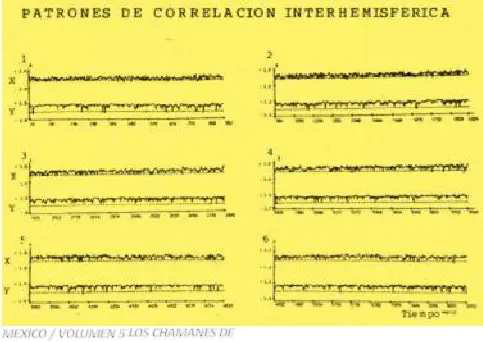
الشكل 3.3. قُسمت جلسة تواصل بين مشاركين إلى ست فترات لأغراض المقارنة. وتُعرض أنماط الارتباط بين نصفي الكرة المخية لدى المشاركين خلال الفترات الست. لم يسبق لهما خوض جلسة تواصل قبل الفترة 1. وفي البداية يظهر اختلاف كبير بين نمطي الارتباط، ثم يتضاءل مع تقدم الجلسة، حتى يصبح النمطان في نهايتها غير قابلين للتمييز عمليًا.
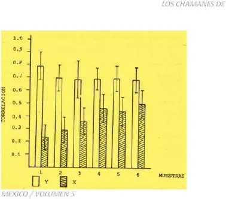
تعرض الأعمدة متوسطات الارتباط بين نصفي الكرة المخية وانحرافاتها المعيارية خلال فترات التواصل الست. ويُلاحظ أن التشابه بين المتوسطات يزداد مع تقدم الجلسة، حتى يحدث تداخل بين الانحرافات المعيارية في الفترة السادسة.
ولتحليل ما إذا كان تشابه أنماط الارتباط أثناء جلسات التواصل المباشر خاصًا بالتواصل بين هذين الشخصين، أم ناشئًا عن عوامل أعمّ، كالتعوّد أو النمطية أو التعب، أُجريت التجربة التالية.
يعرض الشكل 3.4 نمط الارتباط الفردي بين نصفي الكرة المخية لدى مشارك معزول. وقورن هذا النمط بأنماط الشخص نفسه أثناء تواصله مباشرة مع ثلاثة مشاركين آخرين. ويُظهر الشكل أن هيئة النمط الفردي المعروض في السطر الأول تتغير عندما يُوضع المشارك المسجل في تواصل مباشر مع شخص آخر؛ ويظهر ذلك في السطرين التاليين. ثم تتغير مرة أخرى أنماط زوج آخر يتضمن المشارك نفسه، وتصبح متشابهة فيما بينها. وتدل هذه النتائج على أن تشابه الأنماط الفردية نوعي لكل زوج من المشاركين، ولا ينشأ عن متغيرات غير نوعية مثل التعب أو الإرهاق أو التعوّد.
ولإجراء مقارنة بصرية بين أنماط ارتباط المشاركين في كل تجربة، أُجري اختبار محكّمين. قارن عشرة أشخاص لا تربطهم علاقة بالمشاركين زوجين من أنماط الارتباط في كل مرة. وقابلت ثلاثة أزواج من الأنماط أزواج المشاركين المسجلين في الوقت نفسه ضمن التجربة نفسها، وهي الأزواج المعروضة في الشكل 3.4. أما الأزواج الاثنا عشر الباقية فتكونت بدمج الأنماط الأصلية عشوائيًا. وعُرضت جميع التركيبات الممكنة لأزواج الأنماط. وطُلب من المحكّمين تحديد أي الزوجين المعروضين في الوقت نفسه أشد تشابهًا.
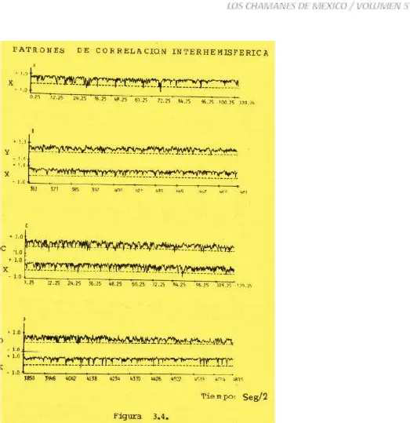
الشكل 3.4.
في 70% من الحالات، عدّ المحكّمون أزواج الأنماط المسجلة في الوقت نفسه في التجربة نفسها أكثر تشابهًا من بقية الأزواج.
ولاستكشاف ما إذا كان تغير أنماط الارتباط أثناء التواصل المباشر يتجه إلى زيادة الارتباط الفردي أو خفضه، أُجريت التجربة التالية: سُجلت أنماط الارتباط الفردي في حالة ضبط أولية، ثم وُضع المشاركون في حالة تواصل مباشر وأُعيد تسجيل أنماطهم. واختيرت أزواج تختلف بوضوح في متوسطات الارتباط في حالة الضبط الأولية. ويظهر أحد هذه الأمثلة في الشكل 3.5، الذي يعرض أربعة أنماط للارتباط الفردي بين نصفي الكرة المخية لدى مشاركين X وY. وفي حالة الضبط، المعروضة في السطرين الأول والثالث، كان نمط المشارك Y منخفضًا نسبيًا، يتذبذب حول الصفر.
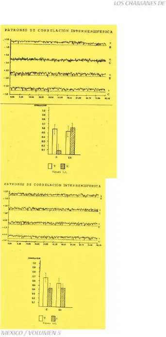
الشكل 3.5.
عندما وُضع المشاركان في حالة تواصل مباشر، كما في السطرين الثاني والرابع من الشكل، أصبح نمط Y، الذي كان يتذبذب حول الصفر في الضبط الأولي، مرتفعًا نسبيًا؛ وكأن الارتباط الأولي المرتفع لدى X جذب إليه ارتباط Y. وتُعرض هذه النتائج بالأعمدة في الجزء السفلي من الشكل.
وعندما تكون مستويات الارتباط الأولية لدى المشاركين متشابهة جدًا، فإن التواصل لا يغيّر النمطين. ويظهر ذلك بوضوح في الشكل 3.6، الذي يسجل أنماط الارتباط الفردي بين نصفي الكرة المخية لدى X وY خلال الضبط الأولي وأثناء التواصل المباشر. وتُعرض النتائج بالأعمدة في أسفل الشكل.
[ملاحظة تنسيق: الشكلان 3.5 و3.6 واردان معًا في الصورة السابقة؛ الأول في الأعلى والثاني في الأسفل.]
الشكل 3.6.
في دراسة سابقة أُجريت قبل سنوات، غرينبرغ زيلبرباوم، 1982، وعُرضت في الفصل السابق، وجدنا أنه، إلى جانب تشابه الأنماط الفردية للارتباط بين نصفي الكرة المخية أثناء التواصل، كان هناك اتجاه إلى تشابه نشاط تخطيط الدماغ الفردي نفسه في الحالة ذاتها.
وتكررت هذه النتائج في الدراسات التالية، التي أُجريت فيها، كما ذُكر في قسم الطريقة، تحليلات ارتباط نشاط تخطيط الدماغ بين المشاركين، للحصول على ما سميناه «أنماط التوافق بين المشاركين».
يُعرض مثال لدراسة التوافق في الشكل 3.7. ويبين أنماط التوافق لدى مشاركين خلال التواصل الثنائي، وخلال الضبط الأولي، وخلال التواصل الجماعي، وخلال الضبط النهائي بلا تواصل. ففي الضبط الأولي تدور قيم التوافق حول الصفر، وترتفع بدرجة كبيرة جدًا أثناء التواصل الثنائي، حتى تبلغ متوسطًا يقارب 0.80. وأثناء التواصل الجماعي ينخفض التوافق، مع بقائه فوق 0.40. وأخيرًا يعود في الضبط النهائي إلى التذبذب حول الصفر.
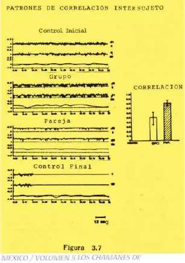
الشكل 3.7.
تشير هذه النتائج إلى أن نشاط تخطيط الدماغ لدى هذين الدماغين الإنسانيين يصبح شديد التشابه أثناء التواصل المباشر. وتُعرض نتائج التحليل بالأعمدة على يمين الشكل.
وأخيرًا يعرض الشكل 3.8 عينات اختيرت عشوائيًا من نشاط تخطيط الدماغ لدى مشاركين خلال حالة أولية بلا تواصل، وأثناء التواصل الثنائي، وخلال ضبط نهائي بلا تواصل. ومن اللافت شدة تشابه نشاط التخطيط المباشر خلال فترة التواصل الثنائي، بل وحتى خلال التواصل الجماعي، مقارنة بحالتي الضبط الأولي والنهائي.
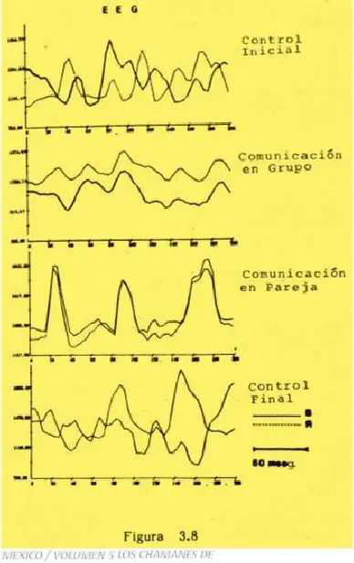
الشكل 3.8.
الاستنتاجات
تشير النتائج التي حصلنا عليها في هذه الدراسة إلى أن نمط الارتباط بين نصفي دماغ أحد المشاركين يصبح أثناء التواصل شبيهًا بالنمط المسجّل لدى المشارك الآخر.
ولا يرجع هذا التشابه إلى عوامل غير مخصوصة بالتواصل، كالتعب أو الاعتياد على النمط المتكرر أو المصادفة، كما تظهر إجراءات الضبط المنفذة. ومن جهة أخرى، تكشف الدراسة ديناميكية نوعية في تبدلات الارتباط أثناء التواصل؛ فالمشاركون الذين يبدؤون التواصل بحالة ارتباط مرتفع بين نصفي الكرة المخية يحدثون زيادة في ارتباط شريكهم، بينما لا يغير المشاركون المتشابهون أصلًا في معاملات الارتباط قيمَهم أثناء التواصل.
ويبدو أن الديناميكية الأولى للتفاعل تعكس تبادلًا طاقيًا حقيقيًا، ويظهر ذلك في أن ارتفاع الارتباط بين نصفي الكرة المخية لدى المشارك «المنخفض» يصاحبه انخفاض طفيف لكنه ملحوظ لدى المشارك «المرتفع».
وتوضح تجارب المجموعات الثلاثية تبادلات أشد تعقيدًا، وتتيح التأكد من أن الآثار المرصودة ليست نتيجة ضوضاء غير نوعية في النظام.
في هذه الدراسات لوحظ أن إدخال مشارك «مشتِّت» يخفض التشابه الكهروفيزيولوجي لدى الزوج المتواصل. وفوق ذلك، تُظهر هذه التجارب أن ما يرتبط بالتواصل ليس أنماط الارتباط بين نصفي الكرة المخية فقط، بل نشاط تخطيط الدماغ نفسه أيضًا.
ومن المهم ملاحظة أن الضبطين الأولي والنهائي يبينان أنه، عند مقارنة عينة من نشاط تخطيط الدماغ لشخص أُخذت في وقت مختلف عن عينة الشخص الآخر، لا نحصل على قيمة ارتباط موثوقة ودالة وثابتة؛ وهذا يشير إلى أن نتائج التواصل لا يمكن نسبتها إلى ضوضاء النظام أو المصادفة.
أما كون قيم الارتباط المرتفعة أثناء التواصل المباشر تعكس متغيرات تفاعل حقيقية، فيدل عليه ما نوقش سابقًا من انخفاض هذه القيم أثناء التواصل الجماعي بوجود مشارك مشتت.
في التواصل الجماعي يعمل المشارك الثالث منبهًا مشتتًا للآخرين؛ ولذلك فإن الانخفاض الكبير في قيم التوافق بين المشاركين، من 0.80 إلى 0.49، يدعم العلاقة بين الأنماط الكهروفيزيولوجية والمتغيرات المعقدة.
إن تسجيل أنماط الارتباط بين نصفي الكرة المخية أداة جديدة لدراسة الوظائف الدماغية العليا، وتَعِد بأن تكون مفتاحًا لاكتشافات كثيرة مستقبلًا.
ومن جهة أخرى، تدعم النتائج مجددًا الأطروحة الرئيسية لهذا الكتاب، وهي أن تعقيد الوظيفة يزداد تبعًا لعدد العناصر العصبية والتفاعلات التي تنشئها.
الفصل الرابع
المقابلات النفسية الفيزيولوجية للجاذبية
أردت أن أدرج دراسة للعلاقات بين النشاط الدماغي والجاذبية، لأن كثيرًا من شاماناتنا يُظهرون قدرة على التأثير في القوى الفيزيائية باستخدام إجراءات نفسية. وتُظهر هذه الدراسة أن تغيرات التماسك بين نصفي الكرة المخية تؤثر في متغيرات فيزيائية خارج الدماغ نفسه، داعمة بذلك الملاحظات الشامانية تجريبيًا.
الطريقة [5]
أُجريت جميع جلسات هذه التجربة في حجرة صامتة، محمية من الموجات الكهرومغناطيسية، ومبنية خصيصًا لترشيح الاهتزازات الميكانيكية وتبديدها. وتقع الحجرة في الطابق الثالث من مبنى شديد الثبات، ضمن مختبرات الفيزيولوجيا النفسية بجامعة أناهواك. وتقع أرض الجامعة على قمة جبل يبعد نحو عشرة كيلومترات خارج مدينة مكسيكو.
أُجريت التجربة بعد الظهر وفي الساعات الأولى من الليل، لتجنب الضوضاء والاهتزازات الميكانيكية والتداخلات الأخرى. وداخل الغرفة وُضع محوِّل قياس من نوع Grass، مثبت بقضيب معدني يرتكز على الرمل، داخل حاوية جدرانها خشبية. ووُضع الصندوق الخشبي داخل قفص فاراداي، ووُضع هذا داخل وعاء معدني، كما في الشكل 4.1. وكان الوعاء المعدني نفسه يرتكز على مطاط إسفنجي.
عُلّق الصندوق الخشبي داخل قفص فاراداي والصندوق المعدني، من دون تماس مادي مع جدرانهما. وجلس تسعة مشاركين مختلفين، تتراوح أعمارهم بين عشرين واثنين وثلاثين عامًا، ست نساء وثلاثة رجال، على كرسي يبعد مئة سنتيمتر عن الصندوق المعدني داخل الغرفة الصامتة. وسُجل خرج محوِّل القياس بجهاز Grass متعدد القنوات في غرفة أخرى. واستُخدمت أقطاب Grass ثنائية القطب لتسجيل نشاط تخطيط الدماغ الجبهي لدى المشاركين في نصفي الكرة المخية. وسُجل هذا النشاط بالجهاز نفسه. وقُدمت للمشارك إشارة صوتية للتغذية الراجعة كلما تغير نشاط محوِّل القياس. وكان جسم معدني صغير، يزن نحو 0.1 غرام، معلقًا بالمحوِّل، بحيث تعكس تغيرات المحوِّل تغيرات وزن الجسم. وحرصنا بشدة على ألا تُرسل إشارة التغذية الراجعة إلا عند وجود درجة عالية من اليقين بأن تغيرات المحوِّل لم تنشأ عن اهتزازات ميكانيكية في المبنى، كالمشي أو إغلاق الأبواب في الطابق نفسه.
[حاشية 5: نُشر في: Grinberg-Zylberbaum, J., 1982, “Psychophysiological Correlates of Communication, Gravitation and Unity”, Psychoenergetics, 4:227–256.]
سُجلت عدة فترات ضبط لا يوجد فيها مشاركون داخل الحجرة الصامتة، للتعرف إلى التغيرات الطبيعية في نشاط المحوِّل وتحديد خط أساس نشاطه.
أُجريت ثمانٍ وعشرون جلسة على المشاركين التسعة خلال عدة أشهر. وحُللت التسجيلات في نهاية كل جلسة. وقُسمت كل جلسة محللة إلى فترتين: ضبط وتجريب.
كانت فترة الضبط هي التي لا تُرصد فيها تغيرات في خرج المحوِّل، بينما اعتُبرت الفترة تجريبية عندما سُجل تغير قابل للإدراك فيه. وفي كل جلسة حُللت أربع إلى سبع نقاط في كل من فترتي الضبط والتجريب. واختيرت هذه النقاط «عشوائيًا» من جميع تسجيلات التجربة. وأُجريت في كل نقطة خمس قياسات:
FT: تردد إشارة محوِّل القياس.
MT: جهد إشارة محوِّل القياس.
FD: تردد تسجيلات تخطيط الدماغ الجبهية اليمنى.
FI: تردد تسجيلات تخطيط الدماغ الجبهية اليسرى.
C: التماسك بين تسجيلات تخطيط الدماغ الجبهية اليمنى واليسرى.
اعتُبر التماسك مساويًا 1.0 عندما يكون شكل أنماط التخطيط وترددها وجهدها متماثلة في الاشتقاقين الجبهيين، ومساويًا 0.0 عندما تكون مختلفة. وهكذا بُني مقياس من 0.0 إلى 1.0.
وكلما سُجل تغير مهم في خرج المحوِّل، أُعطي المشارك إشارة صوتية.
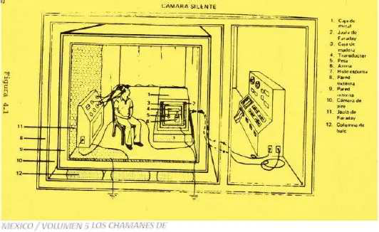
الشكل 4.1. مخطط الحجرة الصامتة. مفاتيح الرسم: 1 صندوق خشبي؛ 2 قفص فاراداي؛ 3 صندوق معدني؛ 4 محوِّل القياس؛ 5 الثقل؛ 6 الرمل؛ 7 المطاط الإسفنجي؛ 8 الجدار الداخلي؛ 9 الجدار الخارجي؛ 10 الحجرة الصامتة؛ 11 قفص فاراداي؛ 12 وسادة مطاطية.
طُلب من المشارك استخدام أية وسيلة يستطيع إيجادها، باستثناء إصدار الأصوات والحركات والاهتزازات الميكانيكية، للمحافظة على الصوت. وسيعرض قسم النتائج بعض التقنيات التي أفاد المشاركون بنجاحها، مع قياسات نشاط تخطيط الدماغ ومحوِّل القياس.
خضع كل مشارك لسلسلة من الجلسات بغية إتقان التقنية، لكن لم يتمكن أي منهم، عند نهاية السلسلة، من التحكم إراديًا في وزن الجسم المعدني.
وفي نهاية كل جلسة كتب المشاركون خبراتهم، وحاولوا استخلاص ما يرتبط منها بظهور صوت التغذية الراجعة. وسنعرض بعض الاستنتاجات العامة المتعلقة بهذه الخبرات.
النتائج
أفاد المشاركون عمومًا بصعوبة كبيرة في المحافظة على الصوت، بل وحتى في ربط خبراتهم بظهوره. واتفقوا جميعًا على أن معرفة ما كان يحدث في مستوى الخبرة الواعية أمر بالغ الصعوبة. وهذا لافت لأن اثنين منهم على الأقل كانا يمارسان التأمل، وكان لدى أحدهما خبرة لا تقل عن ثلاث سنوات في اليوغا والتأمل. ولذلك كانت النتيجة الأولى أن العامل الذي أحدث تغير الوزن، أيًا يكن، كان من الصعب جدًا الإمساك به أو تحديده على مستوى الخبرة الواعية. وأفاد نصف المشاركين على الأقل بأنهم شعروا بشيء يستحيل التعبير عنه بالكلمات.
ويتجسد طابع الخبرة المتعذر وصفه في الإفادة التالية لأحد المشاركين:
«شعرت بإحساس من الشفافية والسلام، وظهر الصوت عندما حاولت فعل شيء يستحيل عليّ أن أقول ما هو».
أو في هذه الإفادة الأخرى:
«كانت لدي صور كثيرة، وفجأة وجدت نقطة مشتركة بينها؛ أو بدقة أكبر، ما كان وراءها من حيث التفسير، فظهر الصوت في تلك اللحظة».
هذه الإفادة الأخيرة مهمة للغاية، لأنها تقرر أن التغير الفعلي في الوزن ارتبط باستخلاص فكرة مجرّدة تجمع تلك الصور، أو على الأقل بالتنبّه إلى الفكرة التي تجمعها.
وكان المشاركون يقولون كثيرًا إن الصوت يظهر عندما يشعرون بنظام وسلام داخليين، أو عندما يشعرون بأنهم قادرون على تجاوز الوضع التجريبي والإحساس بوجودهم داخل حجرة صامتة.
ويستحيل تفسير غياب التحكم الإرادي في هذه الخبرة، بسبب محدودية عدد الجلسات المنفذة حتى الآن.
ومع ذلك، حدثت زيادة واضحة في عدد المرات التي تمكّن فيها مشارك واحد على الأقل من استثارة الإشارة الصوتية، مع تكرار خضوعه للتجربة. ويمكن رؤية ذلك في الشكل 4.2. ومن ثم توجد إشارة إلى أن التغيرات الجاذبية يمكن أن تزداد بتعلم هذه التقنية، حتى إن لم يستطع المشاركون شرح ما فعلوه بالضبط لاستثارة الإشارة الصوتية.
ويعرض الجدول 4.1 متوسط جميع القياسات في الجلسات التسع والعشرين.
ويمكن ملاحظة أن أبرز نتائج التجربة هو ازدياد التماسك كلما رُصد تغير في الوزن. فمن أصل ثمانٍ وعشرين جلسة، أظهرت أربع وعشرون زيادة في التماسك الدماغي. ويعرض الشكل 4.3 أمثلة لتسجيلات تظهر فيها هذه الزيادة.
[ملاحظة ترجمة: يذكر المصدر 28 جلسة في وصف الطريقة وفي عدّ النتائج، و29 جلسة عند تقديم الجدول؛ أُبقي الرقمان كما وردا.]
ومن النتائج المثيرة للاهتمام أيضًا أن تردد محوِّل القياس كان أكثر تشابهًا مع تردد نشاط تخطيط الدماغ في الفص الجبهي الأيمن. وخضعت النتائج لتحليل إحصائي، وتبين أن احتمال حدوثها بالمصادفة أقل من 0.0001.
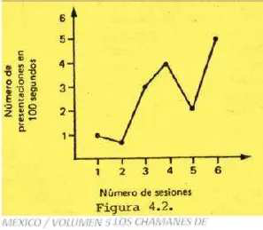
الشكل 4.2. المحور الأفقي: عدد الجلسات. المحور الرأسي: عدد مرات الظهور خلال مئة ثانية.
المناقشة والاستنتاجات
إن ازدياد تماسك نشاط تخطيط الدماغ في الفصين الجبهيين لدى البشر يقترن بتغيرات في خرج محوِّل قياس يقع على بعد مئة سنتيمتر من رأس المشارك، ومعزول عنه تمامًا.
ولا توجد طريقة لفهم كيف استطاع الدماغ تغيير نشاط المحوِّل إلا بالقول إن «شيئًا» انبثق من الدماغ. وقد استطاع هذا الشيء المرور عبر القفص المعدني لحجرة فاراداي المعزولة وعبر جدارين خشبيين، حتى وصل إلى المحوِّل والثقل المعلق به.
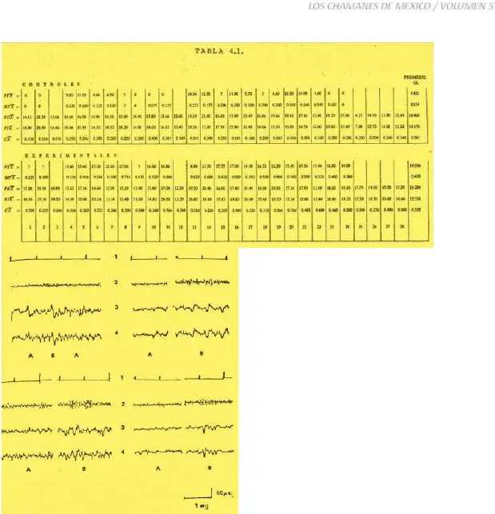
الجدول 4.1، أعلى الصورة: قياسات الضبط في النصف الأعلى، والقياسات التجريبية في النصف الأدنى، والمتوسط الكلي في العمود الأخير. وترد معاني FT وMT وFD وFI وC في قسم الطريقة. الشكل 4.3 في أسفل الصورة.
الشكل 4.3. يُلاحظ في الفترات B ارتفاع كل من التماسك الدماغي ونشاط محوِّل القياس، مقارنة بالفترات A.
إن احتمال أن تكون التغيرات ناجمة عن اهتزازات ميكانيكية مستبعد، بسبب إجراءات الضبط التي أجريناها وترتيب الحجرة والمحوِّل. وبالمثل لم ينشأ التغير عن الحرارة أو حركة الهواء أو أية وسيلة فيزيائية أخرى.
ولا يفسر النتائج إلا احتمالان: الأول أن ازدياد تماسك الدماغ يستطيع إنشاء مجال طاقي بالغ القدرة والتردد، بحيث يتمكن من عبور الحواجز بين المشاركين والمحوِّل. والثاني أن ازدياد التماسك يُحدث تغيرًا في بنية الفضاء، مولدًا موجات جاذبية. وهذه الموجات تغير في المحتوى المعلوماتي للمجال السينترجي، ناتج عن تفاعلاته مع المجال العصبي. وزيادة التماسك، بمعنى ما، زيادة في التكرار المعلوماتي داخل الدماغ.
إن وصف أحد المشاركين، الذي قال إن العثور على المعنى المشترك وراء صور مختلفة هو ما أحدث الصوت، يتفق مع فرضية النظرية السينترجية القائلة إن الدماغ ذا السينترجيا العصبية المرتفعة يستطيع الاقتراب من إحساس بالتوحّد.
ولا نستطيع تحديد ما إذا كانت تغيرات التماسك مرتبطة بزيادة الوزن أم بانخفاضه؛ فلم تسمح طريقتنا بتحليل ذلك. ونحن نبدأ الآن تجربة جديدة باستخدام تقنية الليزر، ستتيح الإجابة عن أسئلة مثل: هل أحدث التغيرَ مجال كهرومغناطيسي، أم مجال أوثق ارتباطًا بالجاذبية؟ وما اتجاه هذا التغير؟
وفي الأثناء، تشير النتائج المحققة حتى الآن إلى أن الدماغ قادر على تغيير البنية الطاقية لمتصل الفضاء والمادة، بالطريقة التي تتنبأ بها النظرية السينترجية، انظر الفصل الخامس، وأن هذه القدرة يمكن إخضاعها لإجراءات التعلم باستخدام تقنيات التغذية الراجعة. وتشير نتائجنا إلى استنتاج مفاده أن المجال الموحد أوثق صلة بالكينونة وبالوظائف ومستوى الوعي منه بمجال فيزيائي بارد وغير حي.
الفصل الخامس
النظرية السينترجية
تمثل النظرية السينترجية منظومة مفاهيم تتفق مع جميع البيانات التجريبية الموصوفة في الفصول السابقة، وتنسجم مع الملاحظات المستخلصة من دراسة شامانات المكسيك. وتُعرض في هذا الفصل محاولةً لتقديم تكامل نظري.
الخبرة
المجال الكمومي أو نسيج الزمكان
في أساس ما نسميه الفضاء وجذره توجد شبكة طاقية لانهائية التعقيد، ممتلئة تمامًا ومنظمة، تسند إليها الفيزياء المعاصرة وظائف أولية، وتسميها المجال الكمومي أو نسيج الزمكان.
يشكل تشوه جزء من هذه الشبكة أصل نشوء جسيم أولي. فالإلكترون ليس إلا حالة تفرد محددة لتشوه في المجال الكمومي. وجزيء أية مادة هو أيضًا تشكل معين للشبكة في جزء منها. ويتفاعل تعديلان أو أكثر في الشبكة، فينشئان تشوهات تآزرية «تحني» الفضاء في تكوين شكلي فريد ومميز.
لا توجد تشوهات متطابقة أو مكررة تكرارًا كاملًا في الشبكة. فكل جسيم أولي تكوين خاص للمجال، وكذلك كل جسم يتألف من جسيمات كثيرة. والأداة الأقدر على إحداث تكوينات شكلية في شبكة الفضاء هي الدماغ. وكل عصبون فيه تشوه خاص للشبكة. ويُحدث كل تغير طاقي في تغصن عصبي ترتيبًا محددًا في التكوين الطاقي بين العصبونات، وتستطيع التفاعلات التي تحدث في الشبكات العصبية إحداث تعديلات في هيئة المجال الكمومي بعدد يكاد يكون لانهائيًا من الإمكانات والأشكال.
الدماغ الإنساني
يمتلك الدماغ الإنساني اثني عشر مليار عصبون، وعددًا يكاد يكون لانهائيًا من إمكانات التفاعل بينها؛ ولذلك يؤثر في شبكة الفضاء بطيف من الإمكانات يتجاوز ما لدى أي جسم آخر معروف في الكون.
الواقع نتيجة فعل الدماغ في المجال الكمومي. وما نسميه أشياء مرئية هو تحديدًا نتاج مجموعة التشوهات التي تُحدثها تكوينات الدماغ الطاقية في الشبكة، داخل المجال الكمومي.
يوجد «حساء طاقي» واحد، نشكل جزءًا منه مع جميع كائنات الكون وأشيائه. نحن كينونة واحدة في تجليات متعددة، ونشارك في العملية نفسها لإنشاء الوقائع. وخبرتنا نتاج تفاعلنا الذي يغيّر المجال الكمومي بطريقة محددة، من خلال تفعيل جميع عناصرنا الطاقية. ويسمى هذا التفعيل «المجال العصبي».
بحسب النظرية السينترجية، تظهر الخبرة نتيجة التفاعل بين المجال العصبي والمجال الكمومي. وعندما ننشئ الخبرة نفرض على شبكة الزمكان بنيتنا الدماغية ونشاطها الديناميكي الموحِّد، أي المجال العصبي. ولذلك فإن ما نسميه «الواقع» إسقاط لطبيعتنا نفسها. وبعبارة أخرى، فإن العالم البصري الذي يبدو محيطًا بنا ليس خارجيًا عنا، بل جزء منا. وبهذا المعنى نعيش جميعًا داخل ذهن واحد وكينونة واحدة. وبالمثل يقع ما ندركه بصريًا في نهاية عملية طويلة تستغرق، كما سنرى لاحقًا، خمسين ملي ثانية على الأقل حتى تكتمل، غرينبرغ زيلبرباوم، 1979. ولا ندرك الأشياء كما هي في ذاتها، بل استجابتنا المتأخرة لها.
حين يتفاعل المجال العصبي مع المجال الكمومي، لا يقتصر دوره على تلقّي التأثير. فالمجال العصبي قادر على ممارسة تأثير تحويلي في مجال الزمكان. ويظهر هذا التأثير في عمليات متعددة، مثل التواصل الإنساني والجاذبية والرؤية خارج العين وتجسيد الأشياء وإزالة تجسدها، وتأثير ذهن في أذهان أخرى، وما يسمى ظواهر الشفاء النفسي.
الواقع، بما فيه المادة، أقرب إلى الخلق منه إلى إعادة الإنتاج. فنحن لا نعكس واقعًا خارجيًا ثابتًا كما لو كنّا مرايا تنقله ببنيته نفسها؛ بل ننشئ الخبرة بتفعيل مجالاتنا العصبية.
الخوارزميات العصبية
من بين العمليات التي تطورت برزت عمليتان: إحداهما التوحيد التدريجي لأنظمة معلوماتية معقدة في خوارزميات، والأخرى إنشاء مجالات طاقية.
في الحالة الأولى، مضت الطبيعة في إنشاء بُنى موحدة مع زيادة عدد عناصرها، كما في الذرة التي تنشأ من جسيمات أولية، والجزيئات من الذرات، والبروتينات من جزيئات معقدة، والأنسجة من البروتينات، والأعضاء من الأنسجة، والجسد الموحد من منظومة أعضاء. ويوحّد كل مستوى تنظيمي في هذه السلسلة عناصر متفرقة في مجموعات خوارزمية أشد ثباتًا وتماسكًا وقوة. ويمكن تعريف الخوارزمية بأنها بنية أو نموذج أو صيغة رياضية تدمج كميات كبيرة من المعلومات في مجموعة موحدة.
يمكن فك ترميز المعلومات الأصلية التي اشتُقت منها الخوارزمية، لكن الخوارزمية نفسها تقع فيما وراء وحدات المعلومات هذه، بالمعنى نفسه الذي يقع فيه المراقب المحايد فيما وراء محتويات ملاحظاته.
عندما ظهر الدماغ في الطبيعة خلال التطور، اتسع التقدم الخوارزمي وتسارع. فلم يعد من الضروري انتظار ظهور شكل جديد من المادة أو جسم منظم جديد حتى يمكن دمج المعلومات الجديدة؛ إذ تحقق ذلك بتنشيط دوائر عصبية قادرة على إدماج المعلومات في شيفرات وأنماط عصبية جديدة. ويمكن تعريف الخوارزمية العصبية بأنها نمط من النشاط العصبي تتقارب فيه معلومات متفرقة وتُدمَج في بنيته المنطقية والطاقية.
تستند الخوارزميات العصبية إلى دوائر التقارب، غرينبرغ زيلبرباوم، 1976. وتقدم الأنماط الموجودة في العصب البصري الإنساني مثالًا جيدًا لها؛ إذ تدمج كل ليفة في العصب البصري، بوصفها خوارزمية عصبية، معلومات متقاربة آتية من مستقبلات الشبكية. ومن الأمثلة الأخرى توحيد المعلومات في الخلايا المعقدة وفائقة التعقيد في القشرة البصرية.
وفي كل مستوى من مستويات التوحيد العصبي تُصاغ كميات متزايدة من المعلومات خوارزميًا. وينتج عن هذا التوحيد تفعيل أنماط مجردة من الاستجابات والخبرات.
وفي الحالة الثانية، كلما ظهرت أدمغة أكثر تعقيدًا، اكتسبت المجالات الطاقية العصبية التي تفعّلها كثافة معلوماتية أعلى، فتمكنت من تعديل خصائص المجال العصبي بصورة أكثر تطورًا. وسنرى لاحقًا كيف أدى هذا إلى كيفيات جديدة للخبرة.
مدة الحاضر
يلزم ما بين خمسين وستين ملي ثانية من النشاط الدماغي لإنشاء المُدرَك البصري. وخلال هذا الفاصل تنشط الشبكية والأعصاب البصرية والمهاد والقشرة، مولّدة مجالًا عصبيًا ذا تعقيد ملائم، يستطيع، عند التفاعل مع المجال الكمومي، إنشاء نمط تداخل يتضمن ما يكفي من التفاصيل والكثافة المعلوماتية ليشكل عالمنا البصري. وهكذا فإن العالم الذي ندركه هو في الحقيقة مجالنا العصبي في تفاعله مع المجال الكمومي. ولهذا نعيش داخل دماغنا نفسه، والصورة البصرية التي ندركها هي «الجدار الداخلي» لـ«جسدنا الطاقي». غير أن هذا العالم البصري ليس الواقع كله، بل بدايته. ولأننا نستطيع تأمل صورنا على مستوى المفاهيم والانتباه إلى وجودها، فإن ثمة مستوى من الخبرة فوق إدراكي، يضم البصري في داخله من دون أن يتأثر بتغيراته وتعديلاته. وبعبارة أخرى، فإن المستوى الذي يضم الإدراكي يتجاوزه ويصوغه خوارزميًا.
والمدة اللازمة لإنشاء صورة بصرية هي مدة الحاضر البصري. أما المستوى المفاهيمي الذي يضم المُدرَك ويصوغه خوارزميًا فيظهر لاحقًا، ولذلك تكون مدته أطول.
تبلغ مدة الحاضر المفاهيمي نحو 165 ملي ثانية، غرينبرغ زيلبرباوم وجون، 1981. وهي المدة اللازمة لكي «يستخلص» النظام الدماغي نمطًا خوارزميًا يمكن منه ملاحظة العملية السابقة كلها. وتتكرر هذه العملية الخوارزمية على المعالجة المفاهيمية، فتُنشئ مستوى من الخبرة يمكن منه تأمل الذهن العقلاني، من دون التأثر به وبصرف النظر عن تغيراته. ويضم هذا المستوى فوق العقلاني جميع المستويات السابقة لظهوره، و«يدركها» من خلال خوارزميته.
مدة الحاضر فوق العقلاني أطول من مدة الحاضر فوق الإدراكي، مثلما أن الأخيرة أطول من مدة الحاضر الإدراكي. وتتيح هذه الزيادة في مدة الحاضر لذات الخبرة، المتموضعة في المستوى فوق العقلاني، أن تعيش في لازمنية حاضرها ما تعيشه ذات الخبرة المتماهية مع المستوى الإدراكي أو العقلاني بوصفه مستقبلًا.
وتُفسَّر القدرة التنبؤية القائمة على الحدس بأنها تعتمد على تموضع الشخص في مستويات يزداد فيها اتساع مدة الحاضر. ومع هذا الاتساع يحدث توحّد للخبرة. فخبرة الشخص المتموضع في المستوى فوق العقلاني أكثر توحدًا من خبرة المتماهي مع مُدرَكاته.
يحاكي التوحّد الآثار التي نلاحظها أثناء تغير الأبعاد. فبالنسبة إلى كائن ثنائي الأبعاد، إذا لامست يدٌ السطحَ الذي يعيش فيه، لم يدرك منها إلا خمس دوائر منفصلة، بينما تتوحد الدوائر نفسها في يد لدى كائن ثلاثي الأبعاد. [6]
وبالمثل، تتيح زيادة مدة الحاضر للمراقب نفسه أن يلاحظ جسدًا إنسانيًا موحدًا، كان سيظهر، مع مدة حاضر متناهية الضآلة، مجموعة منفصلة من الحركات الجزيئية والذرية.
تدرك بعوضة ذات مدة حاضر ضئيلة جدًا العالمَ كسلسلة أحداث غير مترابطة، بينما سيعيش كائن مجري افتراضي، ذو مدة حاضر فلكية، ماضي حضارة إنسانية وحاضرها ومستقبلها كلوحة إدراكية خارج الزمن.
لا يمكن تفسير وجود المراقب القادر على تأمل الخبرة تفسيرًا عقلانيًا. ويمكن مشاهدة أي مستوى من الخبرة إذا توفر التدريب المناسب. ويؤدي التماهي مع المراقب إلى زيادة غير محدودة في القدرة على التوحيد، لأن كل مستوى جديد من الاشتمال والصياغة الخوارزمية يمكن ملاحظته. وفي الواقع، لعلّ ما يصدر عن شاماناتنا من تنبؤ يُفسَّر بتموضعهم في مستويات شديدة الاتساع في مدة الحاضر وعالية التوحّد. وسنتناول هذا الموضوع بمزيد من التفصيل لاحقًا.
[حاشية 6: ندين بهذا المثال لهينتون وأوسبنسكي.]
يمكن ملاحظة نموذج بالغ الوضوح والإثارة للاهتمام لعمليات الاشتمال الخوارزمي في الترتيب التشريحي لدوائر التقارب الدماغية.
ففيها تُختزل الأنماط العصبية المنقولة عبر تجمعات من المحاور العصبية إلى خوارزميات، بواسطة ترتيب تشريحي تقاربي يتلقى فيه عنصر عصبي معلومات من عناصر كثيرة.
وقد ذكرت أن هذه الدوائر تُلاحظ في الشبكية والقشرة الدماغية. وتنشأ العمليات اللغوية وظهور التعبير اللفظي المفاهيمي من تفعيل عمليات عصبية للاشتمال، تركز فيها دوائر التقارب الدماغية في نمط خوارزمي عصبي معلوماتٍ كانت، قبل هذا الاشتمال، منفصلة بعضها عن بعض.
ولما كان المراقب هو موحِّد الخبرة، فقد نفسر ظهوره بأنه نتيجة تفعيل أعلى مستويات التقارب الدماغي. غير أن إمكان وصوله إلى أي مستوى من المعالجة يثبت أنه لا ينشأ من تنشيط الدوائر الدماغية ولا يعتمد عليه. ويبدو أنه لا توجد ديناميكية طاقية قادرة على تفسير ظهور المراقب أو موضعه، لأنه يتجاوز أي عنصر من عناصر العملية، ويتجاوزها كلها، بفضل قدرته على الإحالة إلى ذاته، كما سيأتي.
تنظيم الفضاء
أفضل دليل على أن الفضاء «ممتلئ» بالمعلومات، وأنه لا يوجد فضاء خالٍ، هو قدرتنا على الرؤية. فما نراه ليس منبهًا آتيًا من الخارج نعكسه بصورة سلبية؛ بل نرى استجابتنا لشيء يتعذر معرفته. ولا نستطيع إدراك سوى استجاباتنا.
ومع ذلك، يمكن انطلاقًا من إدراكنا استخلاص بعض خصائص تنظيم المعلومات في الفضاء.
تحتوي كل نقطة من الفضاء كميات هائلة من المعلومات. وتتقارب المعلومات في كل نقطة، وتفك شبكيتنا ترميزها، فتنتج الصور. ولذلك فإن أولى خصائص تنظيم معلومات الفضاء هي التقارب.
والخاصية الثانية هي التماسك. لنفترض وجود شيء «مادي» شديد التعقيد، كصخرة أو جرف؛ ولنفترض وجود عدة أشخاص على مسافات مختلفة، تزداد ابتعادًا عن الشيء.
سيتمكن كل شخص من رؤية الشيء كله من منطقة الفضاء التي يتفاعل معها.
وهذا يدل على تقارب المعلومات في جميع هذه المناطق. وتتناقص زوايا التقارب تبعًا للمسافة، كما يظهر في الشكل التالي:
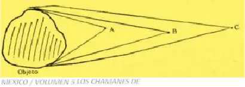
عندما تؤول المسافة بين الشخص والجسم إلى ما لا نهاية، تؤول إلى الصفر الزاويةُ التي يشغلها الجسم في مجال نظره.
إذا تخيلنا في كل موضع للشخص كرة زجاجية ذات جدران عاكسة، فإن الكرة الأقرب A ستحتاج إلى معلومات أكثر من الكرات B وC وD، التي ستحتاج إلى مساحة سطح تتناقص تدريجيًا لكي تعكس، أي تحتوي، المقدار نفسه من المعلومات. وإذا افترضنا كرة عند اللانهاية، أو في مركز الكون بعيدًا عن أي شيء، فإنها ستحتوي في مساحة متناهية الصغر من سطحها المقدار نفسه من المعلومات الآتية من جميع ما حولها. وستتوزع المعلومات في هذه الكرة بأقصى تماسك، بينما يكون التماسك في الكرة A، القريبة من شيء، في أدناه. ومن ذلك يمكن رسم محور للتماسك يبدأ من حد أدنى قرب المادة، إلى قطب أقصى في مناطق الفضاء البعيدة عن أي شيء. وما نسميه أشياء هو في الحقيقة مناطق من الفضاء ذات تماسك أدنى، بينما يتكون ما نسميه الفضاء الشفاف من مناطق ذات تماسك أقصى.
التعقيد الخوارزمي والتماسك
الخوارزمية صيغة قادرة على إعادة بناء المعلومات. وكلما أمكن فك ترميز بيانات أكثر منها، ازدادت تعقيدًا. ومناطق التماسك الأعلى هي مناطق التعقيد الخوارزمي الأعلى؛ ولذلك توجد علاقة مباشرة بين هذا التعقيد والتماسك. والدليل عجزنا عن إدراك الفضاء عالي التعقيد والتماسك؛ إذ نراه فواصل غير مرئية بين الأشياء. ودماغنا عاجز عن الصياغة الخوارزمية في الفضاءات عالية التماسك. أما الأشياء فنستطيع إدراكها لأن تنظيمها أبسط من تنظيم الفضاء غير المرئي ومن الدماغ. وتعتمد المرئية واللامرئية كلتاهما على العلاقة بين التعقيد المكاني والقدرة الخوارزمية الدماغية. فإذا تجاوزت الأخيرة التعقيد الكامن في جزء من المجال الكمومي، ظهر هذا الجزء بوصفه شيئًا «ماديًا».
أما إذا تجاوز تعقيد الفضاء القدرة الخوارزمية، فلا نرى إلا فضاء خاليًا. [7]
المجال العصبي وتفاعلاته
سبق أن ذكرت أن جزءًا من تنظيم الدماغ تقاربي، وأنه يعمل عند مستويات مختلفة من التماسك، أي درجات التشابه بين النشاط الدماغي المسجل في مناطق مختلفة من الكتلة الدماغية.
ولما كانت هناك أدلة على أن الدماغ يستطيع إشعاع مجال عصبي في الفضاء والتأثير في تنظيمه، غرينبرغ زيلبرباوم، 1981، فليس مستبعدًا أن يشكل التفاعل بين التنظيم الطاقي المعلوماتي للفضاء والدماغ نمط تداخل هائل التعقيد، تمثل هندسته الصور البصرية التي ندركها.
وبالمثل، فإن المجال العصبي، بتأثيره في تنظيم الفضاء، يغير خبرة كائنات أخرى؛ لأن الخبرة تنتج من تفاعل مجال عصبي مع البنية التنظيمية للفضاء. وفي الواقع، يتضمن نمط التداخل الناتج عن التفاعل بين المجال العصبي والمجال الكمومي هيئة جميع التفاعلات بين جميع المجالات العصبية، مولّدًا مجالًا فائقًا هائل التعقيد.
وفي هذا المجال الفائق مناطق أعلى تماسكًا وأخرى أدنى، وأعلى تعقيدًا وأخرى أدنى. وفي بعض مناطق التفاعل تكون الأنماط أكثر انتظامًا وتوافقًا، وفي أخرى أكثر فوضى واضطرابًا. وأسمي المناطق الأعلى تماسكًا وتعقيدًا مناطق أو مستويات السينترجيا الأعلى، بينما تنتمي الأقل تعقيدًا إلى مستويات السينترجيا المنخفضة.
ولا يمكن تفعيل نمط تداخل متوافق إلا عندما تتطابق سينترجيا المجال العصبي مع سينترجيا مجال الفضاء. وأسمي مناطق التوافق هذه «مدارات الوعي»، مستعيرًا كلمة «مدار» من الأمير لويس دي برولي، بايزر، 1968، الذي واجه في الفيزياء مشكلة وجود مدارات منفصلة في الذرة، وقدم لها حلًا بالغ الأناقة.
[حاشية 7: من ناحية أخرى، ترتبط قوة الجاذبية عكسيًا بالتماسك، لأن الجاذبية لا توجد في الفضاءات عالية التماسك. ولهذا، ولما سبق، تنخفض قوة الجاذبية كلما ازداد التعقيد الخوارزمي لفضاء ما. وقد تصلح هذه العلاقات أساسًا لبناء محرك جاذبي. ولما كان الدماغ الإنساني يستطيع التأثير في تماسك الفضاء بالزيادة أو النقصان، فإن أفضل محرك جاذبي محتوى في الدماغ. وتوجد بالفعل أدلة تجريبية على علاقات بين النشاط الدماغي والجاذبية، غرينبرغ زيلبرباوم، 1981a، كما رأينا في الفصل الخامس.]
[ملاحظة ترجمة: تحيل الحاشية إلى «الفصل الخامس»، بينما تقع تجربة الجاذبية في الفصل الرابع من النسخة المرفقة. ويظهر في المتن لفظ hipocampo قبل hipercampo؛ استُخدم «المجال الفائق» وفق السياق، لا «الحُصين» التشريحي.]
قرر دي برولي أن لكل إلكترون طولًا موجيًا مصاحبًا، وأن الإلكترون لا يبقى في المدار إلا عندما يكون محيط المدار مضاعفًا صحيحًا لطوله الموجي. وتسمى المدارات التي يتحقق فيها هذا الشرط المدارات المسموح بها.
وتوجد أيضًا مدارات ممنوعة، حيث لا يكون محيط المدار مضاعفًا صحيحًا لطول موجة الإلكترون. وفي هذه المواضع يخضع الإلكترون لتداخل موجي ذاتي، ولذلك لا يستطيع الوجود فيها.
وتوجد عمليات تداخل ذاتي في مجال الوعي أيضًا. وبدقة، لا يوجد إلا مجال طاقي واحد؛ ولذلك ينبغي أن يكون وعي الوحدة أكثر مستويات الوعي طبيعية، إن لم يكن المستوى الوحيد.
في هذا المستوى يزول التعارض بين تصور الكون فيزيائيًا وتصوّره غير فيزيائي حين يُدرَك وعي شامل يحيط بكل شيء ويضم كل شيء. وبعبارة أخرى، يرى الإنسان «المستنير»، الذي يعيش في وعي الوحدة، كل شيء بوصفه مستويات مختلفة من الوعي نفسه. أما بقيتنا فلا نعيش في وعي الوحدة لأننا لسنا أنقياء بما يكفي، ولأن مجالاتنا العصبية ضعيفة التماسك. فالذكريات والمكبوتات والمخاوف، بوصفها مكونات طاقية، تلوث تفاعلات المجالين العصبي والكمومي. ونحن الذين نقسم الوعي الواحد إلى حجرات وأقسام.
تظهر عمليات التداخل الذاتي في مجال الوعي عندما تعجز التقسيمات التي نفرضها على العالم عن أن تتوحد بأيدينا في مستويات جديدة. وكأن خبرات متفرقة، لكل منها حياتها الخاصة، تصبح متعارضة فيما بينها، فيستحيل توحيدها في أنماط وخوارزميات عالية السينترجيا.
تحتوي مدارات الوعي معلومات محددة، وتحدد، عندما يركز المراقب عليها، شكلًا معينًا للواقع ومستوى معينًا من الوعي. ولا يتغير المراقب عند التموضع في مدارات مختلفة، لأن ما يجعله هو نفسه يتجاوز كل ما يختبره. وما يتغير بتغير موضعه هو الواقع ومحتوياته. وبحسب النظرية السينترجية، فإن نمط التداخل الناتج عن التفاعل بين المجال العصبي والمجال الكمومي شامل لكل شيء، ولذلك يستطيع المراقب التموضع في أي مدار مسموح، أو توسيع نطاقه واختبار عدة مدارات في الوقت نفسه.
وسنرى لاحقًا أن الشامانية المكسيكية تولي أصل الإدراك أهمية أساسية، وتستخدم تقنيات لتنمية الوعي بالكينونة داخل المتصل الإدراكي وعبره.
عامل التوجيه
بحسب النظرية السينترجية، نمتلك آلية تتيح تركيز المراقب في مدارات مسموحة مختلفة. وتسمى هذه الآلية «عامل التوجيه»، ويقودها المراقب في حالته بوصفه الأنا الخالصة.
يقود القصدُ تغيرات تركيز المراقب، وهو عملية قدرة تصل المستوى السينترجي لنمط التداخل بحالة تماسك دماغ الشخص. وتعمل هذه العملية عمومًا بصورة تلقائية، لأن المدارات المسموحة وتنظيمها الطاقي الخاص يعتمدان على القوانين المرتبطة بالمجال الكمومي نفسه. وبعبارة أخرى، يوجد متصل سينترجي داخل المجال الكمومي، يمتد من قطب أدنى التماسك، ندركه ماديًا، إلى قطب أقصى التماسك، نشير إليه بوصفه فضاء خالصًا. ولما كان المجال العصبي يُظهر متصلًا سينترجيًا مماثلًا، فإن المناطق التي تتطابق فيها سينترجيا المجالين تُنشئ أنماط تداخل متوافقة، هي «مدارات الوعي المسموحة».
يعتمد توافق نمط التداخل على تشابه سينترجيا المجالين، لا على قصد المراقب. أما ما يعتمد على القصد فهو تموضع المراقب تحديدًا في مدار واحد أو عدة مدارات مسموحة. وليس القصد ولا المراقب آليتين قابلتين للاختزال إلى أنماط طاقية، بل عمليتان لا تنتميان إلى الكون الفيزيائي. وعامل التوجيه هو الجسر الرابط بين كون الطاقة وحقيقة المراقب المتعالية.
المعالج المركزي
ليس لنمط التداخل الذي يُنشئ البنية الطاقية للخبرة أية كيفية في ذاته. وبالمثل، ليست لدرجات تماسك المجال العصبي وتعقيده وسينترجياه وانتشار إشعاعه في الفضاء أية كيفية في ذاتها. غير أن كيفية أي مُدرَك، لمسي أو سمعي أو بصري وغير ذلك، تعتمد على المستوى السينترجي والتماسك والتردد والإشعاع في الفضاء ومواضع المجالات المتفاعلة. ولذلك لا بد من تدخل عامل جديد لتفعيل الخبرات الكيفية. وقد افتُرض، غرينبرغ زيلبرباوم، 1981 و1983b، أن البنية الطاقية للخبرة تتحول إلى خبرة واعية عندما يتفاعل «معالج مركزي» افتراضي مع أنماط التداخل. والمعالج المركزي والمراقب هو الكينونة أو الأنا الخالصة، ولا بد أن تكون طبيعته محايدة إزاء المادة والذهن، ومن ثم غير قابلة للوصف بالمصطلحات الفيزيائية. ولا ينتمي وجود الكينونة إلى الكون الفيزيائي، وبما أنه محايد إزاء الذهن، فلا تتغير طبيعته بتغير الخبرات الحسية.
وعندما يتفاعل المعالج المركزي مع نمط التداخل، تظهر في الوعي خبرة حسية محددة ذات كيفية خاصة.
الفصل السادس
الرؤية خارج العين
لأن عددًا من الشامانات المكسيكيين قادرون على الإدراك البصري بوسائل خارج العين، أردت أن أختم القسم التجريبي بدراسة للرؤية خارج العين لدى الأطفال.
المشاركون [8]
دُرس تسعة عشر مشاركًا: إحدى عشرة فتاة وثمانية أولاد، تتراوح أعمارهم بين خمس وثلاث عشرة سنة. وكانوا جميعًا، دون استثناء، يتمتعون بصحة ممتازة أثناء الدراسة، وأبدوا رغبتهم في المشاركة.
لم يسبق أن مرّ أيٌّ منهم بتجربة الرؤية خارج العين، ولم يتلقَّ تدريبًا على ظواهر من هذا النوع. وكانوا ينتمون إلى ست مدارس مختلفة، ويُعدّون في جميعها شديدي الحركة، وخصوصًا غير راغبين في قبول قواعد صارمة للانضباط والسلوك. وفيما عدا ذلك صُنّفوا أذكياء ويقظين للغاية. ورغم اختلاف الظروف الأسرية، لم تُلاحظ فروق واضحة يمكن تفسيرها بهذا العامل، باستثناء مهارة أولية لافتة لدى خمس فتيات وولدين، يمكن وصف أسرهم بأنها شديدة التحفيز وتتمتع باستقرار أمثل.
التدريب
قبل بدء تجارب الكشف عن الرؤية خارج العين، تلقى جميع الأطفال تدريبًا استغرق من جلسة إلى ثلاث، وكان يُكرر في جميع جلسات الاختبار اللاحقة. وهكذا هُيئ كل طفل قبل التجربة وعلى امتدادها، حتى اكتسب مهارة آلية بما يكفي للاستغناء عن تدريب إضافي.
فيما يلي خصائص التدريب بالتسلسل الذي حدثت به:
1. بينما يجلس الطفل مرتاحًا وظهره مستقيم، أُجريت ثلاثة تمارين تنفسية:
أ) إخراج الهواء بقوة عبر فتحتي الأنف مدة ستين ثانية مع إغماض العينين، يعقبه تركيز الانتباه بين الحاجبين مدة عشرين ثانية.
[حاشية 8: نُشر في: Grinberg-Zylberbaum, J., 1983, La Luz Angelmática، EDAMEX، المكسيك.]
ب) التنفس بالتناوب عبر فتحتي الأنف مدة ستين ثانية مع إغماض العينين، ثم تركيز الانتباه بين الحاجبين مدة عشرين ثانية.
ج) شهيق وزفير قويان، بإيقاع منتظم ومتواصل، إلى الحد الذي يستطيع كل طفل بلوغه، ثم التأمل التالي.
2. مع المحافظة على الوضعية نفسها، تلقى الطفل التعليمات التالية:
«وأنت مغمض العينين، ركز بين حاجبيك، ودع أفكارك تتدفق من دون إعاقتها أو التحكم فيها. وعندما تتمكن من ذلك، ركز على نفسك واسأل: من أنا؟ وأنت تشعر بنفسك. حافظ على تركيزك على نفسك أطول مدة تستطيعها».
عُدلت صياغة هذه التعليمات بما يناسب فهم كل طفل. وتفاوت وقت التأمل من طفل لآخر، بحد أدنى نحو خمس إلى ست دقائق، وحد أقصى نحو عشر إلى ثلاث عشرة دقيقة.
3. بعد تحقيق الخطوة السابقة، جلس المدرّب مقابل الطفل وشبك يديه بيدَي الطفل، وتخيّل خطًا من الضوء يمتدّ من راحتَي الطفل إلى دماغ الطفل نفسه. واستمر التصور حتى استطاع المحافظة على صورة الخط ساطعًا وأبيض ومتصلًا دون انقطاع.
4. وُضع أحيانًا طرف بلورة كوارتز يمسكها المدرّب ملامسًا للمنطقة بين حاجبي الطفل أو قريبًا منها. واكتُشف «مصادفة» أن هذا الإجراء يحسّن التدريب ويسرّع العملية خارج العينية.
5. بعد ذلك بدأت مرحلة الكشف خارج العين. وعُصبت عينا الطفل بعصابة خاصة معتمة تمامًا وملاصقة للجفنين، بحيث تصبح الرؤية الشبكية مستحيلة تمامًا.
6. قُدمت للطفل مادة بصرية تتكون من صور فوتوغرافية عالية الجودة، بألوان زاهية ومحتويات متنوعة. ووضع المدرّب إحدى يدي الطفل أو كلتيهما على الصورة، بحيث يلامس جلده سطحها.
طُلب من الطفل اتباع حدسه، سواء في استكشاف الصورة بالجلد أو في استكشاف المحتوى الذهني الذي تستثيره، ووصف جميع خبراته بالتفصيل. وعندما يطلب ذلك، كان يُمنح تغذية راجعة لفظية عن نقاط التوافق بين وصفه ومحتوى الصورة. وبعبارات طبيعية وعفوية تعبّر عن الدهشة والسرور، كان المدرّب يعزز التوافقات الصحيحة ويصحح غير الصحيحة.
7. استمرت التغذية الراجعة حتى ظهرت على الطفل علامات التعب أو فقدان الاهتمام؛ وعندئذ توقف التدريب ليستأنف في مناسبة أخرى. وشُجّع الطفل على استخدام جميع أنواع حركات اليدين لاستكشاف إمكانات مختلفة.
8. عندما أصبح الطفل قادرًا على وصف الأشكال داخل الصور دون أخطاء، طُلب منه إبعاد يديه عن سطحها ومحاولة رؤية محتواها دون تماس جلدي. وفي مرحلة لاحقة طُلب منه إجراء حركات مسح في الفضاء بين جسده والصور، باستخدام انقباضات سريعة لأصابع يديه. وكان هذا الإجراء يبرز التفاصيل ويحسّن التركيز، ويزيد المسافة القصوى التي يستطيع عندها تمييز الأشكال الدقيقة، كالحروف المطبوعة.
9. وأخيرًا شُجع الطفل على التوقف تمامًا عن استخدام يديه، و«رؤية» المحتويات مباشرة، دون مساعدة الحركة.
المواد المستخدمة
استُخدمت مواد بصرية كثيرة، وفيما يلي بعض منها:
1. صور ملونة لمناظر طبيعية.
2. صور ملونة لخضروات وفواكه وأدوات منزلية.
3. كتب عادية ذات محتوى لغوي: حروف وكلمات وجمل وغيرها.
4. أطفال آخرون.
5. أشياء في البيئة المحيطة.
6. برامج تلفزيونية على شاشات التلفاز.
7. طُلب من الأطفال المشي في المدرسة، في الحديقة والفصول وغيرها، ووصف ما يرونه.
إجراءات الضبط
من الطبيعي أن ظاهرة جديدة وغريبة كالرؤية خارج العين تحتاج، لكي تُقبل بوصفها مثبتة، إلى إجراءات ضبط صارمة لخصائصها. ومع أنني لا أدعي استنفاد جميع إمكانات دراسة الظاهرة، فإنني أستطيع القول إنني لا أشك مطلقًا في وجودها. ويكفي أن أذكر هنا بعض إجراءات الضبط المنفذة، لتشجيع باحثين آخرين على الاهتمام بالظاهرة وإجراء دراسات مستقلة.
1. فُحصت العصابة باستمرار لاكتشاف أي تمزق عرضي خفي قد يتيح قدرًا من الرؤية الشبكية، ولو ضئيلًا. ولم يُعثر على أي خلل فيها.
2. غُيّرت المواد المقدمة للطفل باستمرار، بحيث لا يستطيع أي طفل توقع المادة التي ستُعرض عليه.
3. لأن من التفسيرات المحتملة أن ينقل المدرّب المحتوى بحركات أو أصوات أو أية وسيلة واعية أو غير واعية، حُرص على إدراج مواد تصويرية لا يعرفها المدرّب ولا يراها أثناء عرضها.
وبالمثل طُلب من أطفال آخرين أداء دور المدرّبين، مع تغيير محتوى المواد المستخدمة. ولم يمكن في أية حالة إثبات أن المدرّب كان يلمّح إلى محتوى المادة بإشارات خفيّة. ولأن ذلك كان مستحيلًا حين يجهل المادة، فيمكن استبعاد عامل نقل المحتوى بوصفه تفسيرًا للظاهرة.
4. عندما بلغ التدريب مرحلة الرؤية المباشرة دون اليدين، أُدخل الأطفال إلى قبو مظلم تمامًا، وطُلب منهم وصف الأشياء. ولم يستطع أيٌّ من الأشخاص الأربعة الذين خضعوا لاختبار المقارنة إدراك شيء، بينما بدا أن طفلين مدرَّبين يريان الأشياء دون صعوبة. ويثير هذا الإجراء تساؤلًا حول كون الوسط الطاقي الذي يفك الأطفال ترميزه فوتوني الطبيعة، على الأقل عند عتبات الرؤية الشبكية.
5. يطرح الضبط السابق مسألة الحساسية خارج العينية مقارنة بالشبكية. ومع أنه لم تُجر قياسات صارمة للعتبات، أُجري اختبار لمسافة القدرة على القراءة كان غنيًا بالمعلومات. وطُلب من أحد الأطفال قراءة مطبوعات مختلفة الأحجام وعلى مسافات مختلفة.
عند استخدام حروف بحجم مليمتر واحد، بدأ الطفل يواجه صعوبة في فك الترميز خارج العين على مسافة تقارب سبعين سنتيمترًا، دون مسح باليدين. وعند هذا الحد اقتُرح عليه استخدام المسح، فتمكن من قراءة المادة دون صعوبة، بل وزيادة المسافة بين جسده والمطبوع ثلاثين سنتيمترًا أخرى. وأظهر الطفل نفسه والمدرّب وثلاثة أطفال آخرين صعوبة في القراءة الشبكية عند المسافة نفسها وحجم الحروف نفسه المستخدمين في الرؤية خارج العين. ويشير ذلك إلى تشابه العتبات بين نوعي الرؤية من حيث حجم العناصر القابلة لفك الترميز ومسافتها.
6. استُخدمت مرآة عادية لدراسة إمكان الرؤية خارج العين للأشياء المنعكسة. ووُضعت مادة مطبوعة بزاوية خمس وأربعين درجة إلى المرآة، وطُلب من الطفل وصف المرآة. ولم يصف المطبوع فقط، بل أشياء أخرى تعكسها المرآة لم ينتبه إليها الباحث. وكان هذا الضبط حاسمًا، واستبعد احتمال أن يكون المجال الذي يُفك ترميزه في الرؤية خارج العين مجالًا حراريًا.
7. استُخدم زجاج بسمك خمسة مليمترات، وُضع بين المادة التصويرية والطفل. وفي جميع الحالات حدثت الرؤية خارج العين دون صعوبة في شرط الضبط هذا.
8. أما عند تغطية المادة بورقة بيضاء، أو حجبها بلوح خشبي، فقد وصف الأطفال الورقة أو الخشب، لا المادة المختبئة خلفهما.
9. في إحدى المرات طُلب من طفل إجراء حركات مسح باليدين فوق مادة تصويرية. ووُضع لوح خشبي بين يديه وجسده، بحيث لا يحجب اليدين لكنه يحجب الجسد. وعجز الطفل عن إدراك المادة خارج عينيًا، لكنه وصف اللوح الخشبي بدقة. ويبين هذا الضبط أن مستقبلات موجودة في اليدين ليست وسيط الظاهرة، بل يشير إلى ضرورة بقية الجسد.
10. باتباع منطق الضبط السابق، تقرر استكشاف المناطق الجسدية الوسيطة للرؤية خارج العين. ووُضعت شاشة معتمة تحت ذقون خمسة أطفال أثناء ممارستها. وفي أربع حالات اختفت الصورة. أما في الحالة الباقية فواصل الطفل وصف الصورة المعروضة بصورة صحيحة، لكنها كانت متلونة بلون الشاشة الحاجبة، الأحمر في هذه الحالة.
11. لمحاولة تحديد أدق للمنطقة الجسدية الوسيطة، استُخدم الإجراء التالي مع أحد أكثر الأطفال تقدمًا: وُضع جسده خلف صفيحة معدنية، وعُصب رأسه بإحكام، مع إبقاء الجبهة والذقن والأنف والوجنتين مكشوفة. وحجبت الصفيحة يديه وذراعيه. وفي هذا الوضع وصف المادة المعروضة دون صعوبة. ثم غُطيت جبهته بالكامل وأُعيد العرض، فلم يُلاحظ أي تغير. ولم يظهر تغير ملحوظ عند تغطية الوجنتين والأنف.
لكن عند تغطية الفم، لوحظ انخفاض واضح في مهارة الكشف؛ إذ بدأ الطفل يواجه صعوبات ويرتكب أخطاء.
وعندما غُطي الذقن، توقف الطفل تمامًا عن الإدراك. غير أن هذه الحالة ليست نمطية ولا عامة. فالموضع الحاسم كان يتغير مع الزمن لدى الطفل نفسه أو غيره، بحيث يتعذر تحديد منطقة جسدية لازمة ومحددة بدقة، تتوسط الرؤية خارج العين.
ومن أمثلة ذلك فتاة في السادسة، بالغة اليقظة والنشاط، تعلمت الرؤية خارج العين في الجلسة التدريبية الثانية، وسرعان ما أظهرت سهولة خاصة في ممارسة هذه القدرة.
أُجريت عليها الاختبارات التالية:
أ. عُرضت مواد تصويرية بوضعها خلف ظهرها. ولم تتمكن فقط من التعرف إليها، بل استطاعت قراءة كلمات وجمل مطبوعة أيضًا.
ب. ارتدت نظارة سباحة محشوة بالقطن، بحيث تمنع الرؤية العينية تمامًا، ودُعيت إلى المشي بحرية في حديقة بمدينة مكسيكو ووصف كل ما تستطيع «رؤيته». بدأت بحذر، لكنها سرعان ما تحررت منه، وجابت الحديقة تصف الأشجار والمقاعد والأطفال الآخرين والكلاب والباعة المتجولين وبقية المشهد دون صعوبة. ولم تكن دقة الوصف وسهولته وحدهما المدهشتين، بل كان الوصف يعكس إدراكًا في جميع الاتجاهات؛ إذ وصفت الفتاة ما أمامها وما خلفها أيضًا.
ج. تعلمت هي وأخوها إدراك الأعضاء داخل الجسم الإنساني. وكان التدريب مماثلًا تمامًا لما وُصف، باستثناء تركيز الانتباه على أعماق الجسد بدل سطحه. وتمكن الطفلان من وصف الخصائص المحددة وحالة الاضطراب الرئوي في حالة انتفاخ رئوي. وتمكن ثلاثة أطفال آخرين من وصف مواضع كسور عظمية وأبعادها بدقة، رغم أن الحوادث وقعت قبل سنوات. وتطابقت أوصاف آثار الكسور في العظام مع ما ذكره أصحاب الإصابات.
د. تطوع طفلان لمحاولة تخفيف الألم والحدّ من عدوى الأذن لدى شخصين بالغين. ودُرّبا على رؤية داخل الجسد وتحديد الاضطرابات فيه. وأصاب كلاهما في تحديد الأذن اليسرى بوصفها المصابة لدى البالغين. وذكرا أنهما يدركان لونًا غريبًا فيها، وشرعا في تغييره حتى يقارب لون الأذن السليمة. وأفاد البالغان بتحسن فوري كان يدوم في المتوسط ثلاثة أيام. وكرر أحدهما، وهو والد الطفلين، الإجراء عدة مرات، ولاحظ النتيجة نفسها والمدة المتقاربة في كل مرة.
هـ. قرر جميع الأطفال تعلم استخدام قدرتهم خارج العينية لإدراك مناطق الجسم المتأثرة بالألم أو بالتغيرات النسيجية. وكانوا يستطيعون اكتشاف الأعضاء ومناطق الجسد دون الاستعانة بدليل تشريحي. ويحددون المناطق المضطربة تلقائيًا، كما لو أنها ترسل إشارات يسهل عليهم التعرف إليها وتمييزها. وفي حالات العدوى طُلب منهم تدمير العوامل الممرضة بإصدار كميات كبيرة من «الطاقة» من أصابعهم.
12. لوحظت، خصوصًا لدى الأطفال الأصغر، حركة جانبية خفيفة لكنها واضحة للرأس كله، يميل فيها بين عشرين وثلاثين درجة إلى اليمين أو اليسار، في مستوى يبدو موازيًا لمستوى الشيء. وكان الانطباع الناتج عن حركة الميل أن جسد الطفل يبحث عن تفاعل أقرب بين نصف الكرة الأيمن أو الأيسر والمادة المراد فك ترميزها.
13. في بداية التدريب لوحظ أن الطفل يتتبع حدود الأشياء قبل أن يتمكن من وصفها. وبالمثل كان يضع أصابعه تحت حرف أو شيء عند بدء وصفه.
تكررت هذه الملاحظة في جميع الحالات المدروسة، وشكلت دليلًا على وجود حكمة جسدية يمكن التعبير عنها لفظيًا لاحقًا.
النتائج
وُصف جانب كبير من النتائج في الأقسام السابقة؛ ولذلك سأحاول هنا دمج النتائج كلها، دون التوقف عند إجراءات وتفاصيل غير ضرورية.
أوضح نتائج هذه الدراسة وأساسها هو إمكان الإدراك البصري دون استخدام العينين ومستقبلات الشبكية. ويبدو أن دقة تفاصيل الرؤية خارج العين قادرة على تمثيل عالم بصري مماثل تمامًا لما تقدمه الرؤية الشبكية، دون الحاجة إلى التعقيد الهائل لبنية الشبكية، ومن المفترض دون مشاركة البنى الدماغية التي تتولى عادة فك ترميز العالم البصري.
ومن أكثر الملاحظات لفتًا للنظر، ومن أوائل ما ظهر، أن الأطفال الذين بدوا أشد اتصالًا بأنفسهم، وأكثر ثقة ورسوخًا في هويتهم الشخصية، اكتسبوا الرؤية خارج العين بسهولة أكبر من غيرهم.
الظاهرة موجودة، ويبدو أن نموها يتبع تسلسلًا منطقيًا تكرر في الحالات المدروسة. فالأطفال الذين يواجهون، بعد التدريب، مادة تصويرية لا يملكون وصولًا بصريًا إليها، يستخدمون أيديهم وأصابعهم لاستكشافها ومحاولة فك ترميزها. وفي الحالات الأكثر مهارة تكفي جلسة واحدة كي يبدأ الطفل بالرؤية خارج العين، وفي الحالات «العادية» ثلاث جلسات. وعند التفاعل الأول تبدأ اليد «بمسح» صفحة الورق دون خطة أو نمط متوقع، حتى يحدث شيء يجعل حدود الأشياء قابلة للكشف.
إذا احتوت الصورة برتقالة، تتبع يد الطفل حدودها ثواني عدة. لكنه إذا سُئل عما يشعر به، لا يستطيع وصف شيء يتوافق مع خصائص حركات المسح. وإذا لُفت انتباهه إلى ذلك، فقد يدرك فجأة وجود شيء مستدير، لكن الرؤية خارج العين تظل غائبة.
وسرعان ما يتعب الطفل من حركاته أو يضيق بها، فيقرر إيقافها. ويبقى ساكنًا ويده فوق الورق، مركزًا على أحاسيسه، مع ميل إلى إمالة الرأس. وفي بعض الحالات تظهر الظاهرة بعد هذا التركيز. وفي حالات أخرى يحتاج إلى تغذية راجعة أدق، ربما لاستبعاد الصور غير المتوافقة وتعزيز المتوافقة مع المادة الحقيقية. وبطريقة أو أخرى تظهر الرؤية خارج العين في نوع من القفزة الكمومية الكمية، من عجز شبه تام عن الكشف إلى دقة شبه تامة في فك الترميز.
كان الهدف الحقيقي من الوصف السابق كله لفت الانتباه إلى خاصية لافتة في الرؤية خارج العين: أنها ظهرت دفعةً واحدة، على نحو «الكل أو لا شيء»، بانتقال واضح من غيابها إلى حضورها. وما إن يحدث ذلك حتى يصبح الطفل قادرًا على إدراك أية مادة تُعرض عليه بدقة تفاصيل ورهافة مدهشتين.
كانت الجلسة الأولى التي تظهر فيها الظاهرة تقتضي عمومًا إنفاقًا طاقيًا كبيرًا جدًا؛ إذ كان الأطفال يُظهرون علامات تعب واضحة، ويشكون أحيانًا آلامًا شديدة في العينين. وكانت هذه الآلام والتعب المصاحب ينخفضان بدءًا من المرة الثانية للكشف. وفي الحالات الأكثر تقدمًا، لم تعد الرؤية خارج العين تنطوي على إنفاق طاقي مفرط، إذ يستطيع الطفل الكشف دون إعداد يُذكر، وبطبيعية وإتقان تامَّين.
عندما شاهد الأطفال الآخرون أداء رفاقهم، أبدوا رغبة في ممارسته بأنفسهم. وعند حدوث ذلك بدا ظهور الظاهرة أسرع. وأقصد أن غياب الشك في حقيقة الظاهرة والثقة بالمدرّب مارسا تأثيرًا ميسّرًا.
ولمحاولة دراسة مدى اتباع الرؤية خارج العين قوانين المنظور والغشتالت نفسها التي تتبعها الرؤية الشبكية، أُجريت الاختبارات التالية.
طُلب من طفل وصف خبراته بينما تُبعَد المادة البصرية عن جسده دون علمه بالإجراء. فوصف دون تردد ابتعادًا، لا انخفاضًا في الحجم ولا تغيرًا في المادة. أي إنه أدرك الإجراء بصورة صحيحة، كما كان سيدركه بالرؤية الشبكية. وبالمثل استطاع الأطفال في جميع الحالات وصف الإجراء بصورة صحيحة. وقُدمت لهم باستمرار أشياء متحركة، وكان كشفها وتفسيرها صحيحين في جميع الحالات أيضًا.
وعُرضت عمليًا جميع ألوان الطيف بدرجات متنوعة، ولوحظ وصف مناسب لها في كل الحالات.
ورغم تشابه إجراءات التدريب، أظهر كل طفل أسلوبًا شخصيًا أثناء الرؤية خارج العين. فإحدى الفتيات، مثلًا، كانت تجري دائمًا حركات مسح سريعة بأصابعها أمام المادة التصويرية؛ لأن ذلك، بحسب وصفها، أسهل وأدق.
وفضّل طفل آخر قراءة الكلمات على رؤية الصور، بينما فضّل ثالث الأشكال على مواد القراءة. وكان التدريب على قراءة الكلمات تدريجيًا، يبدأ بكشف حروف منفردة، عادة بوضع إصبع تحت الحرف المراد قراءته. وتكفي دقائق حتى يبدأ الطفل قراءة كلمات كاملة، حتى بلغات لا يعرفها، ثم تصبح سرعة القراءة مماثلة للسرعة المعتادة بالرؤية الشبكية. واستُثني من ذلك ولد وفتاة كانا يقرآن خارج عينيًا أسرع من قراءتهما الشبكية، ويظهران اهتمامًا أكبر بهذه الطريقة. واستُفيد من هذا الاهتمام لتحسين تقدمهما في دروس قراءة الإسبانية.
كان من اهتمامات هذه الدراسة العثور على مظهر مرئي لقدرة «نفسية فيزيولوجية»، لتحفيز الصغار على تعلم تقنيات الاتصال بهويتهم الحقيقية. ولذلك جرى التأكيد دائمًا على ضرورة ممارسة تأملات تتمحور حول خبرة الذات والسؤال: «من أنا؟».
وفي هذا السياق، يقر المؤلف بأنه لا يعرف ما إذا كانت طرائق تدريب أخرى أكثر فاعلية من المستخدمة هنا. وقد أخذ بعض الأطفال بالفعل على عاتقهم تدريب أصدقائهم وإخوتهم ومعارفهم وممارسة مهاراتهم بأنفسهم، بنتائج ممتازة.
ومن الملاحظات المثيرة للاهتمام السن التي تتيسر فيها الرؤية خارج العين. ومن الواضح أن الإجابة تتطلب عينة أكبر بكثير من المستخدمة هنا، لكن يمكن استخلاص بعض الاستنتاجات من المحاولات غير المثمرة التي أجراها المؤلف مع شباب فوق السادسة عشرة، ومع بالغين أكبر سنًا. ويبدو أن استدعاء الظاهرة يصعب بعد حد عمري يقارب الخامسة عشرة.
أُجريت أحيانًا تأملات جماعية تُتصور فيها أضواء ويُحفَّز الاتصال بالذات. وكانت الرؤية خارج العين تتيسر دائمًا بعدها. وانطباع المؤلف أن الظاهرة تظهر بقوة ووضوح أكبر عندما يكون الطفل والمدرّب هادئين، مركزين على نفسيهما، في مستوى تفقد فيه الذات «حدودها»؛ أي عندما يوجد اتصال أصيل بإحساس بالهوية يتجاوز الشخصي المحض.
ومن الملاحظات الأخرى أن المدرّب لا يحتاج إلى امتلاك الرؤية خارج العين كي يعلّمها. وسُئل الأطفال مرارًا عن خبراتهم الداخلية خلالها. وقال بعضهم إن ما يرونه مطابق تمامًا لما يدركونه عادة بأعين مفتوحة. وفي إحدى المرات تطوعت فتاة لمشاهدة التلفاز معصوبة العينين، ووصفت بدقة تامة ما يحدث على الشاشة، كما لو أن الجهاز داخلها. ووصف أطفال آخرون ظهور شاشة صغيرة داخل «ذهنهم» تظهر عليها الأشكال المعروضة. ولم يقل أي طفل إنه يحتاج إلى إنشاء الصورة خارج العينية بصورة واعية؛ بل كانت الصورة تحدث «من تلقاء نفسها»، مثل إدراكاتنا البصرية العادية. وكان طابعها التلقائي واضحًا منذ ظهور الظاهرة، ولم يبد أنه يتحسن كثيرًا بالممارسة. لكن استخدام المهارة كان يحفز ظواهر «مجاورة» للرؤية خارج العين بالمعنى الدقيق. وقد وُصف بعضها، ويتمثل في مهارة غريبة تتيح للطفل إدراك الأعضاء الداخلية عبر الجلد، وكشف المناطق المتضررة أو المريضة وعكس أعراضها. وستُناقش قدرة الشفاء والرؤية «داخل الجسد» لاحقًا.
آخر نتيجة أود التأكيد عليها هي العلاقة بين الظاهرة خارج العينية وبلورات الكوارتز. وسأقدم في المناقشة فرضية نظرية تحاول إيضاح التأثير الميسّر لهذه البلورات. ويكفي هنا القول إن هذا التأثير لوحظ لدى خمسة أطفال على الأقل، ثلاث فتيات وولدين، وإن اكتشافه كان مفاجئًا.
تطوعت إحدى الفتيات لعرض قدرتها على مشاهدة برنامج تلفزيوني. وباستخدام جهاز فيديو سوني، عُرض فيلم إنجليزي ملون بترجمة إسبانية. وأبدت الفتاة صعوبة في قراءة الترجمة على مسافة خمسة أمتار من الشاشة، التي كان قياسها نحو ستين سنتيمترًا ومن نوع سوني، رغم أنها استطاعت وصف ألوان المشاهد والأحداث الممثلة.
وقالت إن خطوطًا ونقاطًا تعوق الرؤية تظهر لها. وفجأة طلبت مني بلورة أستخدمها في تأملاتي. وعندما أمسكتها بيدها اليمنى، قالت إن الخطوط والنقاط المشتتة اختفت، واستطاعت قراءة ترجمة الفيلم بطلاقة ووصف المشاهد بتفصيل بالغ. وكان الأثر واضحًا ودراميًا إلى حد دفعنا، منذ ذلك الحين، إلى اختباره مع أطفال آخرين. وأكدت فتاتان أن المادة التصويرية المعروضة عليهما، وهي صور مناظر طبيعية، تكتسب بعدًا ثالثًا عند إدراكها خارج عينيًا أثناء إمساك بلورة كوارتز. وقالتا إن الأمر يشبه وجودهما مع البلورة داخل الصورة، في قلب المنظر، وبدونها خارجها، تراقبان صورة ثنائية الأبعاد.
وأخيرًا، تمكن ولدان وفتاتان من زيادة المسافة القصوى لقراءة المطبوعات بمساعدة بلورات الكوارتز.
المناقشة
يبدو العالم البصري موضوعيًا وحقيقيًا وعينيًا وخارجيًا إلى حد يجعل عناصره، كالأشجار والصخور والسحب والحيوانات والوجوه والمباني، تبدو كأنها نقطة انطلاق الإدراك، وكأن الصورة التي نختبرها تطابق تلك الأشياء في صورتها الخارجية.
ولذلك نادرًا ما ننتبه إلى أن ما نراه أشياء ذات أشكال وألوان وملامس متنوعة، ليس معطى هناك في ذاته، منتظرًا أن تراه مرآة سحرية تعكس خصائصه ببساطة؛ بل يُنشأ عبر معالجة دماغية بالغة التعقيد.
ولأننا لا نستطيع إدراك العملية العصبية المسؤولة عن إنشاء صورنا البصرية، بل نصل فقط إلى ناتجها النهائي، نفترض وجود خارج مستقل ومنفصل نصل إليه، وننسى أن ما نراه نتاج تحويلنا لـ«خارج» لا نملك الوصول إليه في ذاته. بل غالبًا لا يكون وصف الأمر بالنسيان دقيقًا، لأن احتمال إنشاء الخبرة لم يخطر لنا أصلًا، فلا يوجد ما نتذكره.
المسؤول عن قصر النظر هذا هو التركيز على المادي ونسيان أنفسنا. والظاهرة خارج العينية تنبيه ضد هذا الخداع والوهم، كما ينبغي أن تكون الرؤية الشبكية أيضًا.
وفي الحقيقة، لا تختلف الرؤية خارج العين والرؤية الشبكية العادية في أي جانب جوهري، كما سأحاول إظهاره في هذه المناقشة.
أكثر جوانب العملية الإدراكية غموضًا وجوهرية هو تحول البنية الطاقية للمُدرَك إلى كيفية الصورة. وتتحدد هذه البنية بنمط التداخل الناتج عن التفاعل بين المجال العصبي والمجال الكمومي. والمعالجة الدماغية والمكانية التي تنشئها هائلة التعقيد وبعيدة جدًا عن الفهم الكامل؛ لكنها لا تتضمن تغيرات كيفية «شبه معجزية». أي إنه لا يوجد ضوء في صورة المجال العصبي، ولا في المجال نفسه، ولا في نمط التداخل الناتج عن تفاعله مع المجال الكمومي؛ بينما يوجد ضوء في الصورة البصرية.
ولأن إفادات الأطفال دلت على إدراكهم صورة بصرية مضيئة، وإن عولجت خارج عينيًا، فلا تختلف هذه الرؤية عن الشبكية في هذا الجانب. وقد ذكرت الاحتمال النظري بأن معالجًا مركزيًا مرتبطًا بالتفعيل الخوارزمي العصبي، أو التوحيد الطاقي نفسه لمجال عصبي عالي السينترجيا، ينشئه جهاز عصبي يعمل بتماسك مرتفع داخل نصفي الكرة المخية وبينهما، هو الذي يفعّل الصورة الكيفية عند تفاعله مع البنية الطاقية لنمط التداخل.
ولا يُقصد هنا أن المعالج المركزي دائرة تقارب عالية الاشتمال، أو خوارزمية عالية القدرة التكاملية؛ بل إن تفعيل هذه العمليات يرتبط بطريقة ما بتشغيل عامل مركِّز. ويغري التفكير بأنه، عندما يبلغ الجهاز العصبي درجة عالية من التوحّد الداخلي، تتيح العمليات الطاقية الناتجة تفاعله مع مستوى طاقي مكاني يمثل «كلية» الكون، وأن هذا الاتصال مسؤول عن كيفية الخبرة. وفي هذه الحالة يكون المعالج المركزي أقرب إلى «الكلية» منه إلى وجود دائرة أو مجال عصبي معين أو تشغيله.
أبرز فرق بين الرؤية خارج العين والشبكية، إلى جانب استخدام العينين محوِّلين أو عدم استخدامهما، هو وجود مكونات بصرية في المجال العصبي أو غيابها. وبهذا المعنى، لا بد أن تتضمن البنية الطاقية للخبرة البصرية في الرؤية الشبكية، حيث توجد مكونات بصرية في المجال العصبي، نوعًا من التضخيم الشكلي الطاقي لأنماط التداخل الناتجة عن تفاعل المكونات البصرية في المجالين العصبي والكمومي. أما في الرؤية خارج العين، حيث تغيب المكونات البصرية للمجال العصبي، فلا بد أن يختلف نمط التداخل، على الأقل في عامل التضخيم هذا، الذي يجب أن يكون غائبًا. ولفك ترميز صورة رغم هذا الغياب، ينبغي أن يكون المعالج المركزي أنشط منه في الرؤية العادية.
ويبدو أن هذا هو الحال، كما يدل عليه أن الأطفال الأقدر على أن يكونوا أنفسهم كانوا أقدر من غيرهم على بلوغ الرؤية خارج العين وما يصاحبها من ظواهر بسهولة، كالرؤية داخل الجسد. ووجود الأخيرة حاسم لاستبعاد أسطح جلدية وسيطة للرؤية خارج العين. وتشير الأدلة المجموعة حتى الآن إلى أن المنطقة الجسدية الوسيطة، إذا كانت لازمة، أي المحوِّلة للصورة تعويضًا عن الشبكية، لا تنحصر في موضع بعينه من الجسد. فقد تغير موضعها لدى الطفل نفسه، من الذقن إلى الظهر أو من راحتي اليدين إلى الذقن، واختلفت من طفل إلى آخر. ومع ذلك، لوحظ لدى الجميع نمو متشابه. فبدأ الطفل بالرؤية خارج العين عند الاتصال المباشر بين أطراف أصابعه والمادة التصويرية، ثم تمكن من فك ترميزها مع إبعاد يديه عنها. وبعد ذلك أجرى بيديه حركات مسح في الفضاء بين جسده والمادة، ثم استطاع الرؤية ويداه وذراعاه مخفية وراء ظهره. وأخيرًا أمكن وضع المادة خلف ظهره، أو استطاع المشي ووصف ما أمام جسده وخلفه، دون وساطة ظاهرة لمنطقة جسدية. ويشير هذا النمو إلى عملية ابتعاد أو انفصال للجسد عن الرؤية خارج العين. وأوضح دليل على هذا الاستقلال هو الرؤية داخل الجسد، التي ظهرت عند اكتمال العملية السابقة.
وكانت العلاقة بين الرؤية خارج العين وبلورات الكوارتز مفاجأة حقيقية عند ظهورها، واكتشافًا ذا إمكانات هائلة. فعندما يمسك الأطفال بلورة، تصبح الصورة أكثر تركيزًا وتفصيلًا ودقة، وتكتسب المواد التصويرية الثنائية الأبعاد بعدًا جديدًا فتصبح ثلاثية الأبعاد. ومن التفسيرات الممكنة أن البنية الجزيئية والذرية للبلورة تؤثر في البنية الطاقية للمجال العصبي، وتعدّل هيئته بحيث ينتج تفاعله مع المجال الكمومي نمط تداخل يستطيع المعالج المركزي فك ترميز مكوناته البصرية بسهولة أكبر.
في كتابات سابقة، غرينبرغ زيلبرباوم، 1981–1982، افترضت أن النشاط الدماغي والمجال العصبي والمجال الكمومي نفسه تستطيع جميعًا تغيير تنظيمها المعلوماتي ضمن متصل سينترجي، يمتد من حد أدنى إلى حد أعلى للسينترجيا. وفي الحد الأدنى يكون التنظيم المعلوماتي منخفض التكرار والتنظيم، وضعيف التفاعل بين أجزائه.
أما في الحد الأعلى، فيكون كل عنصر شديد الاشتمال وعظيم القدرة الخوارزمية، ويكون التنظيم مرتفعًا، والوصلات قائمة بين العناصر، والتكرار المعلوماتي في أقصاه. ويحتوي كل عنصر عالي السينترجيا على التنظيم كله. ويكون التنظيم أو الفضاء عالي السينترجيا أقدر من نظيره المنخفض على إنتاج خصائص ناشئة.
الدماغ في حالة سينترجيا عصبية مرتفعة أكثر تماسكًا وتنظيمًا واشتمالًا وتكاملًا وتمركزًا في ذاته من دماغ يعمل بسينترجيا عصبية منخفضة.
وقد ثبت أيضًا أن الدماغ عالي السينترجيا يستطيع التواصل بسلاسة أكبر، وتغيير قوة الجاذبية، وإقامة اتصال مباشر بأدمغة أخرى، غرينبرغ زيلبرباوم، 1982.
فإذا كانت بلورة الكوارتز تزيد التنظيم السينترجي للمجال العصبي، فمن المتوقع أن يكتسب قدرة أكبر على التفاعل مع المجال الكمومي، وأن ييسّر ذلك ظواهر مثل الرؤية خارج العين.
تتفق البنية الجزيئية لبلورة الكوارتز مع فكرة أن تأثيرها قد يكون رفع مستوى سينترجيا المجال العصبي. وتتكون هذه البنية من ذرة سيليكون Si مرتبطة بذرة أكسجين O، مشكّلة أهرامًا رباعية الوجوه، تنتظم في لوالب ثلاثية الأبعاد تتكرر دوراتها كل أربعة جزيئات. ويشغل الجزيء الأول في كل لولب الموضع نفسه الذي يشغله الرابع، ويتكرر هذا الترتيب عبر البلورة كلها. والمسافة بين الذرات داخل كل هرم رباعي الوجوه هي 1.61 + 0.03 A للمسافة Si–O، والزاوية Si–O–Si تساوي 142 درجة. وتتكون الوحدة البلورية الأساسية من لولب ذي أربعة جزيئات يمكن احتواؤها في مكعب، أطوال أضلاعه 4.913 A و5.405 A على التوالي. ويقع الطول الموجي المصاحب لهذه الأبعاد في نطاق الأشعة السينية، بين 0.1 و100 A، حيث A = 10 سم.
[ملاحظة ترجمة: نُقلت القيم والرموز كما تظهر في الصفحة، بما فيها علامة الجمع في «1.61 + 0.03» وعبارة «A = 10 سم» التي لا يظهر فيها أُسّ. لا تصلح العبارة الأخيرة تعريفًا صحيحًا للأنغستروم؛ ولم يُستكمل النص الناقص تخمينًا.]
قد يعمل التكرار المرتفع والتنظيم والتناظر في بلورات الكوارتز معدِّلًا طاقيًا للمجال العصبي، فيحاكي المجال بنيتها عند عبورها، وبذلك ترتفع سينترجياه. وقد تعني هذه العلاقة أن المجال العصبي يمتلك مكونات ترددية من رتبة الأشعة السينية. وقدرة الرؤية داخل الجسد التي أظهرها الأطفال الأكثر تقدمًا تشير إلى أن وسيط خبرتهم الإدراكية ينبغي أن يرتبط بمجال عالي القدرة على اختراق الأجسام المعتمة. فإذا كان للمجال العصبي طول موجي قريب من الأشعة السينية، فقد يبدأ ذلك بتفسير الظاهرة الملاحظة هنا، وكذلك أدلة تعديل وزن أشياء داخل دروع معدنية، التي دُرست في تجربة أخرى، غرينبرغ زيلبرباوم، 1981a و1982.
وأخيرًا تستحق الطبيعة المنفصلة للظاهرة، وظهورها الكمومي وفق مبدأ الكل أو لا شيء، محاولة تفسير. فلا بد من وجود علاقة بين هذه الخاصية والاستنزاف الطاقي الذي عاناه الأطفال في الجلسات الأولى. وربما يتطلب إقامة تفاعل مباشر مع المجال الكمومي وفك ترميز نمط التداخل «غير المعتاد»، الذي يخلو من مكونات بصرية من جانب المجال العصبي، إنفاقًا طاقيًا مفرطًا يتيح تجاوز عتبة مجهولة.
وأيًا يكن الأمر، تبدو الرؤية خارج العين فاتحةً لإمكانات دراسة وفهم لوظيفة الدماغ كانت مجهولة حتى الآن.
الفصل السابع
التواصل ووظائف التوحيد
في عام 1935 حاول ألبرت أينشتاين وبوريس بودولسكي وناثان روزن حل بعض المشكلات التي طرحتها ميكانيكا الكم، مقترحين ما يُعرف اليوم بمفارقة أينشتاين–بودولسكي–روزن، ERP.
تفترض هذه المفارقة وجود مصفوفة، في أساس الواقع وقاعدة الفضاء، تربط جميع الأشياء المعروفة. فإذا تفاعل جسيمان أوليان ثم ابتعدا، أثّر أي فعل في أحدهما في الآخر، بصرف النظر عن المسافة بينهما. وكان أينشتاين يعتقد أن آثار التفاعل عن بُعد تقوم على نوع من «بحر الرنين»، تصل «أمواجه» كل ما يوجد بعضه ببعض.
ازدادت العناية بفرضية ERP بمرور الزمن، واقتُرحت تجارب مختبرية ونُفذت لاختبار مسلّماتها. وليس من اختصاصي، ولا أنا مؤهل، لشرح تطوراتها المعاصرة بالتفصيل. لكنني أود الإشارة إلى أن الفيزيائي بيل أثبت صلاحيتها، وأن مجموعة باريس بقيادة أسبكت، 1983، أكدت مؤخرًا التنبؤ الأصلي.
يتناقش الفيزيائيون الآن حول السرعة التي تنتقل بها التأثيرات المتنبأ بها. وتوجد مدرستان فكريتان: فيزيائيون يتصدرهم جاك سارفاتي، 1985، يفترضون حدوث التفاعلات بسرعة فوق ضوئية؛ وفيزيائيون يتبعون أينشتاين، ويرون أن سرعة الانتقال هي سرعة الضوء.
تبدو النتائج التجريبية المعروضة في هذا الكتاب امتدادًا لفرضية ERP على المستوى الإنساني، وتثير من هذا المنظور تساؤلات مشابهة. وأولها يتعلق بتفسير الأثر الملحوظ لتبادل الارتباطات. فبطريقة ما يستطيع دماغان إنسانيان متفاعلان التأثير أحدهما في الآخر. ومن الجدير بالنظر سؤال: بأي وسائل يحدث التفاعل، وكيف؟
ومن ناحية أخرى، يمكن، كما في فرضية ERP، طرح سؤال عمّا إذا كان لهذا التفاعل، الذي تتبادل فيه أدمغة المشاركين أنماط الارتباط بين نصفيها، سرعة انتقال محددة. وينبغي الإجابة عن هذه الأسئلة وغيرها بتصميم تجارب دقيقة وتنفيذها.
يدرك المؤلف أن عمله ليس إلا بداية متواضعة لجهد يرمي إلى حل هذه الأسئلة وغيرها. ويمكن في الوقت الحاضر القول إنه، بصرف النظر عن معرفتنا بفيزياء التفاعل وفيزيولوجيته، تؤثر أنماط التوحّد الدماغي في دماغ ما في الأدمغة المجاورة، وتعدّل أنماطها.
[ملاحظة ترجمة: أبقي الاختصار ERP كما في الأصل؛ يُعرف اسم المفارقة عادة بالاختصار EPR. وتُنقل هنا تفسيرات المؤلف التاريخية والفيزيائية بصفتها جزءًا من نصه.]
ولأننا أظهرنا أن أنماط التوحّد بين نصفي الكرة المخية، أي الارتباط بينهما، تعكس التوحّد النفسي للأنا، فيمكن، وفق نتائجنا، القول إن إنسانين يؤثران أحدهما في الآخر بنقل أنماط توحّدهما. ويعني ذلك أنه عندما يتمكن نظام من التوحّد، فإن «قوة» نموه تنشر هذه الزيادة في الوظيفة الموحِّدة، كما لو أنها تقود العملية.
ويمكن ملاحظة شيء مشابه في تطور المادة والحياة؛ فما كان أولًا وحدات منفصلة، أي جسيمات أولية، تحول إلى تجمعات موحدة كالذرات، التي توحدت بدورها في وحدات أعقد كالجزيئات، ومنها تشكلت البروتينات والأحماض النووية والخلايا والأنسجة والكائنات. وقد عُدَّ هذا الاتجاه إلى زيادة التعقيد والعدد والتوحّد أحد المحاور الأساسية للتطور، دي شاردان، 1965.
ويغري الافتراض بأن التفاعلات بين الأدمغة تشكل هي أيضًا جزءًا من «وحدة فائقة» بالغة التعقيد، وحداتها، أي كل دماغ، أنظمة تتكون من مليارات العناصر. ولا بد أن يرتبط هذا التوحيد الفائق، إذا صحت فرضيتنا، بوظائف ذات تعقيد يفوق التصور.
وينبغي أن يكون توضيح العلاقات بين الأدمغة الفردية ووظائف التوحيد الفائق الناشئة منها من أكثر موضوعات البحث المستقبلية إثارة. وقد يبدأ به مجال يمكن تسميته «الفيزيولوجيا النفسية للكائنات الاجتماعية».
ومن جهة أخرى، تؤثر عمليات التوحيد في أي كائن في عناصره وتتأثر بها. فإذا قرر إنسان الصيام مثلًا، أثر قراره الموحِّد في جميع خلاياه. وبالمثل، إذا مرض جزء من الجسم، انتهى الأمر بالتأثير في الكائن كله.
ولا بد أن يحدث شيء مشابه بين وظائف التوحيد الفائق وعناصرها الفردية. فكلاهما يؤثر في الآخر بطرائق وديناميكيات تستحق البحث.
وانطباعي أن بعض البشر قادرون على كشف عمل وظائف التوحيد الفائق، بل وتعديلها باستخدام عمليات مجهولة. وربما كانت باتشيتا المثال الأكثر إدهاشًا في هذا الصدد؛ إذ كانت قادرة على التأثير مباشرة في المادة والطاقة، وتغييرهما بإرادتها.
وعمومًا، الشامان هو الإنسان الذي يمكن توقع المهارة الأكبر منه في التعامل مع وظائفه الخاصة للتوحيد الفائق. ومن الحالات المثيرة للاهتمام دون لوسيو، الذي يؤكد قدرته على كشف الأحوال العامة للوعي الكوكبي، كما لو أن حساسيته كافية ليتأثر بحالة الوعي الجمعي ويدركها.
تدعم دراسات التواصل في الفصول السابقة فكرة أن جميع الكائنات ذوات الأدمغة متصلة في مصفوفة أو شبكة أو نسيج طاقي، وأننا يؤثر بعضنا في بعض. وبحسب النظرية السينترجية، فإن خبرتنا «الشخصية والفردية» نتيجة تفاعل مجال طاقي ينشط انطلاقًا من النشاط الدماغي، أي المجال العصبي، مع البنية الطاقية للزمكان، أي نسيج الفضاء. ولذلك، وبدقة، فإن كل خبرة خاصة تعكس شروطًا عامة وجمعية وفوق فردية، وتكون انعكاسًا لها.
ومع ذلك، يبدو أن نموًا خاصًا مطلوب لكي نصبح واعين بانعكاس الجمعي في الفردي، وبإمكان تأثير الفردي في الجمعي. وتتحدث مدارس الشرق عن وجود أنا شخصية وذات تتجاوز الشخص. وتحاول اليوغا، التي تعني «الاتحاد»، توحيدهما. وعندما تتحول الأنا الشخصية إلى الذات الكلية، تُبلغ قمة النمو والاستنارة. ومن يتمكن من تحويل أناه إلى الذات يغيّر علاقته بوظائف التوحيد؛ فبعدما كانت عمليات التوحيد تجري لديه على المستوى الشخصي، يصبح هو مَن تجري لديه عمليات التوحيد الفائق. ومن الواضح أن إرادته الشخصية المنفصلة تختفي هناك، وتتحول رغباته الفردية إلى رغبات جمعية.
ولا يعود ثمة فرق بينه وبين العالم؛ فهو واحد في وحدة مع البقية. ومن الشامانات المكسيكيين الذين يبدو أنهم بلغوا هذه الحالة دون بانشيتو من يوكاتان، وهو شامان ناهوال من المايا بلغ المئة من العمر، ينصح تلاميذه بأن «يتحدثوا مع الله وحده». ويشهد سلوكه وقدراته، الموصوفة في مجلدات أخرى من هذه السلسلة، على حالة وحدته. ووظائف التوحيد الفائق أعقد من وظائف التوحيد. ويتفق هذا مع الفرضية الأولية للكتاب، القائلة إن تعقيد الوظيفة يزداد كلما ازداد عدد العناصر التي تنشئها.
وتشمل وظائف التوحيد الفائق، كما تتجلى لدى الشامانات المكسيكيين، عمليات مثل القدرة على الاستبصار، والتعامل مع المادة والطاقة، والتواصل المباشر الكامل، والتحكم الإرادي في النار، وغيرها. وسنرى في بقية هذا المجلد بعض أمثلتها.
الفصل الثامن
تقنيات التوحيد الفائق
سأبحث في هذا الفصل استخدام التقنيات لتحقيق التوحيد الفائق. ويبدو أولًا أنه امتداد لعملية التوحيد العادية. ولكي تحدث الأخيرة لا بد من تفعيل نقطة مرجعية تستطيع احتواء ما يُراد توحيده. أي إنه، إذا وجدت خوارزمية ذات قدرة اشتمال كافية لتمثيل سلسلة من المحتويات المعلوماتية، فإنها تعمل نقطة مرجعية موحِّدة لجميع هذه المحتويات.
قبل الاشتمال الخوارزمي تكون المحتويات منفصلة ومتناثرة. وما تفعله الصياغة الخوارزمية هو إيجاد المشترك بينها كلها، وتمثيل حمولتها المعلوماتية بمخطط أو صيغة تمثيل. وليست الصياغة الخوارزمية الإجراء الوحيد للتوحيد، لكنها من أقواها.
وثمة إجراء آخر هو إنشاء قفزات بُعدية. فسلسلة نقاط منفصلة تنتمي إلى أكوان بلا أبعاد تتوحد في خط ينتمي إلى كون ذي بُعد. وسلسلة خطوط منفصلة تنتمي إلى أكوان أحادية البُعد تتوحد في سطح يقع في كون ثنائي الأبعاد. وسلسلة سطوح منفصلة تنتمي إلى أكوان ثنائية الأبعاد تتوحد في مجسّم يقع في كون ثلاثي الأبعاد. وسلسلة مجسّمات منفصلة تنتمي إلى أكوان ثلاثية الأبعاد تتوحد في جسم فائق يقع في كون رباعي الأبعاد، وهكذا. وبهذا تتوحد في بُعد أعلى محتويات تقع في أبعاد أدنى. وتكون عملية التوحيد هذه نتيجة طبيعية لإنشاء بُنى معقدة، كالخلايا والأنسجة والكائنات المعقدة؛ وهذا الإنشاء نفسه وسيلة للتوحيد أيضًا.
إذن توجد ثلاثة إجراءات رئيسية للتوحيد على الأقل: الصياغة الخوارزمية، والقفزة البُعدية، وإنشاء البُنى المعقدة. ويستخدم الدماغ الإنساني هذه الإجراءات في عمله الموحِّد؛ فالصياغة الخوارزمية أساس اللغة وتكوين المفاهيم، وترتبط القفزات البُعدية بإنشاء المجالات العصبية، ويرتبط إنشاء الخبرة بتكوين البُنى المعقدة.
ومن الواضح أن اهتمامنا الأهم هو العثور على وظيفة دماغية تفعّل عمليات التوحيد، ولا حد لمدى عملها. وهذه الوظيفة هي الملاحظة.
كل ما يمكن ملاحظته يتوحد في فعل الملاحظة داخل المراقب نفسه. ولأنه يمكن، بالتدريب المناسب، ملاحظة عمليات الصياغة الخوارزمية والقفزات البُعدية وإنشاء البُنى المعقدة، تبدو الملاحظة المفتاح الخالص للتوحيد والتوحيد الفائق.
وذلك لأن المراقب يتموضع دائمًا في كون ذي بُعد أعلى من الكون الذي يحتوي موضوعات ملاحظته.
يمكن مثلًا ملاحظة خط بوصفه خطًا من كون يحتوي بُعد الخط نفسه مضافًا إليه بُعد واحد. أي إن المراقب المتموضع في كون ثنائي الأبعاد وحده يستطيع ملاحظة خط ينتمي إلى كون أحادي البُعد بوصفه وحدة.
وبالمثل، لا يستطيع ملاحظة الأشياء الثنائية الأبعاد موحدة، وهي تنتمي إلى أكوان أقل بُعدًا من موضعه، إلا مراقب في كون ثلاثي الأبعاد. والمراقب هو أيضًا من يستطيع مشاهدة أية ظاهرة لغوية؛ أي إنه قادر على توحيد العمليات الخوارزمية. وهو قادر كذلك على مشاهدة بُنى الخبرة المعقدة. ولهذا كله، فإن تقنية ملاحظة محتويات الذات هي الأنسب لتحقيق التوحيد الفائق.
هذه التقنية هي «التأمل الإحالي إلى الذات». وبحسب معجم اللغة الإسبانية، يعني التأمل «توجيه الانتباه إلى شيء مادي أو روحي»، بينما تعني الإحالة «الإشارة إلى شخص أو شيء دون تسميته أو التصريح بأن الحديث عنه». ومن ثم فإن التأمل الإحالي إلى الذات يعني توجيه الانتباه بصمت إلى النفس. وتشير «النفس» هنا إلى كلية الذات في الحاضر. وهذه ليست كلية النفس بالمعنى المطلق، بل كليتها كما يستطيع الوعي والانتباه إدراكها في اللحظة الراهنة.
صُممت هذه التقنية لتغيير تركيز المراقب إراديًا، وجعله يدخل مدارات مسموحة مختلفة ويحوّلها إلى خبرة واعية. فنحن نحافظ عمومًا على تركيز عامل التوجيه ثابتًا في مدار واحد، هو الذي يشكل حياتنا اليومية. ويجعل التأمل الإحالي إلى الذات المراقب قادرًا على التركيز في مدارات مختلفة، متبعًا محورًا اتجاهيًا لتزايد السينترجيا. ويمتد هذا المحور، كما ذكرت، من التماهي مع المادة في الخبرة الإدراكية العينية، إلى التركيز في وقائع فوق عقلانية.
يحدث تغير التركيز عندما يتمكن الشخص من تفعيل الخوارزمية التي تضم جميع المعلومات السابقة لموضعه الحالي. وعندما يتمكن من ملاحظة هذه الخوارزمية تحدث إحالة إلى الذات. والتأمل الإحالي إلى الذات هو تحديدًا فعل تأمل الخوارزمية الكلية.
وعند حدوث ذلك ينتج تغير المدار. ويكمن سر التقنية في استمرار التأمل الإحالي إلى الذات حتى لا يبقى مكوّن للإحالة إليه سوى المراقب نفسه. وفي تلك اللحظة تظهر خبرة تسميها بوذية الزن «الطبيعة الجوهرية»، والبوذية التبتية «الأنا الخالصة»، وتعرفها الهندوسية باسم «بوروشا»، وتسميها الشيفية الكشميرية «الكينونة». وتقع هذه الكينونة في التقليد القبّالي في آخر السفيروت وأعلاها.
الأنا الخالصة شاهد الذهن المحايد، ولذلك لا تتغير حين يتغير محتوى ملاحظاتها. وبوصفها خوارزمية قوية، فإنها تحتوي كميات هائلة من المعلومات، ولكن بلا تفاصيل. ويُشعر بها بوصفها أشد الأحاسيس ألفة، وأقرب شعور، وأكثر أحوال الكينونة حميمية. وعندما يتصل بها أحد، يشعر بهذا الاتصال بوصفه هويته الحقيقية. وترتبط الأنا الخالصة بالسلام الداخلي والتوافق والتوازن وغياب التوتر. والفرق الرئيسي بينها وبين الأنا الشخصية هو أنها تتجاوز الجسد والذهن، بينما الأنا الشخصية بنية محدودة من الشخصية، يحدها تماهٍ معيّن.
يشبه تعريف فرويد للأنا بوصفها تنظيمًا متماسكًا للعمليات الذهنية تعريفَ جندلن لها بوصفها «تنظيمًا ذاتيًا»، 1964. وفي هذين التعريفين تُرى الأنا خوارزمية تدمج بعض معلومات الذهن ومحتوياته، لا كلها. وتبقى محتويات مكبوتة للحماية من تفكك هذه الخوارزمية المحدودة المسماة الأنا. وكأن الفرد يصوغ الأنا لنفسه بوصفها ذاتًا مقيدة. وربما يرتبط الفرق الرئيسي بين الأنا والأنا الخالصة بقوة الخوارزمية التي تمثلها كل منهما وكمالها. وتكون الأنا الخالصة الخوارزمية النهائية، التي تضم جميع معلومات الدماغ دون استبعادات تحدثها آليات التمثيل. فهي إذن الكل. أما الأنا الشخصية فخوارزمية جزئية، عاجزة عن إدماج جميع المعلومات، وتعتمد على آلية الكبت لحفظ تنظيمها المحدود. وهي ليست الكل. ولا بد أن تتجاوز الأنا الخالصة مستوى تماسك الأنا الشخصية، لأن خوارزميتها تضم في داخلها خوارزمية الأنا. وهكذا ينطبق الاعتبار الفرويدي على الأنا الخالصة، لكن بصورة أشد صرامة.
أقوى تقنيات التوحيد هي «التأمل الإحالي إلى الذات بلا حدود»، الذي يختصره المؤلف إلى CASI، ويقوم على ملاحظة ذاتية المرجع في تسلسل لا ينتهي. فعند تفعيلها، يلاحظ الشخص حالته الكلية الراهنة، متأملًا ذاته المتكاملة. وتوحد هذه العملية حالته في ذاته، في المراقب. وفي الوقت نفسه تغيّر حالته، لأنها تنقله من مستوى أقل توحدًا إلى مستوى أعلى.
وعندما تُمارس CASI مجددًا على مستوى التوحّد الجديد، يتغير مرة أخرى. وإذا استمر الإجراء في تسلسل غير منتهٍ، يُبلَغ التوحيد الفائق نتيجة منطقية للعملية.
طريقة تفعيل التأمل الإحالي إلى الذات ليست معقدة جدًا؛ إذ تقوم على أن يكون المرء شاهدًا لعملياته الخاصة. ويمكن البدء بملاحظة الأحاسيس الجسدية، واستكشاف الجسم جزءًا جزءًا، ثم ملاحظته كلًا متكاملًا وموحدًا. ويتحدث علم النفس المعاصر عن وجود صورة للجسد وعن القدرة على الشعور به بوصفه كلًا.
وتكون الخطوة التالية ملاحظة الجسد في وضعياته وحركاته وسلوكه العام. وينبغي أن تتم هذه الملاحظة بالتزامن مع الأولى، ومع الملاحظة التالية أيضًا.
أي مع ملاحظة عمليات التفكير والمشاعر والانفعالات.
تفعّل الملاحظة المتزامنة لجميع المحتويات الذهنية، مع تأمل الأحاسيس الجسدية، مستوى أولًا من الإحالة إلى الذات. وفيه يبدأ الشخص رؤية نفسه ودمجها بوصفها كلًا موحدًا.
ويحدث المستوى التالي عندما تُتأمل كلية المستوى الأول مرة أخرى. وعند تحقيق ذلك يقفز المراقب بُعديًا، لأنه يستطيع ملاحظة كليته من نقطة مرجعية تحتويها.
وعندما تُتأمل مجددًا الكلية الجديدة المحال إليها ذاتيًا، تبدأ عملية CASI. ومن آثار تفعيلها، ومن أولى علامات التوحيد الفائق، ظهور ظواهر التزامن المعنوي ومعايشتها. وقد عرّف كارل يونغ التزامن المعنوي بأنه عملية علاقات غير سببية، يظهر فيها حدثان أو أكثر، تبدو منفصلة، متحدة ومترابطة، دون إمكان العثور على علاقة سببية تفسر ظهورها. وتفعّل CASI هذه العمليات، فيعيها المرء شواهدَ يلقاها أكثر فأكثر في حياته اليومية، كما لو أن الواقع يقوم عليها بوصفها الشرط الطبيعي للصيرورة.
الإنسان الذي يدخل التوحيد الفائق يعيش العالم مجموعة أحداث متشابكة، ويدرك غياب المصادفة عن كل خبرة. ويشكل هو والآخرون أجزاء من وحدة يستطيع ملاحظتها وفهمها. وفي الحقيقة، توجد الوحدة الفائقة دائمًا، والتزامن المعنوي عملية يومية مألوفة. وما يتغير باستخدام CASI هو الوعي بهذا الوجود، ومعايشته الواضحة المستمرة.
وإلى جانب هذه المعايشة، تفعّل CASI كيفية للخبرة يمكن تسميتها تكامل الأنا. ويتقدم هذا التكامل أيضًا عبر مراحل، متزايدًا في مداه وتجريده. أولًا يتفعل الإحساس بامتلاك أنا ذات محتويات محددة ومنفصلة عن غيرها من الذوات. ثم يبدأ إحساس الأنا اشتمال محتويات أكثر فأكثر، حتى تتفعل، في مرحلة لاحقة، خبرة الأنا الخالصة والإحساس بها. والأنا الخالصة هي الخبرة البوذية الأصلية؛ فلا توجد فيها إلا الوحدة، دون فواصل أو محتويات عينية. ومن الأنا الخالصة يُختبر الواقع بلا أنا شخصية.
ولكي يحدث ذلك، وكشرط لا غنى عنه في عملية CASI، لا بد من تعلم القبول. فلا يمكن تفعيلها دون أن يكون المرء قد تعلم القبول في الوقت نفسه.
الفصل التاسع
التماسك والمجال الفائق وإيلولات تشياباس
يوجد في الدماغ الإنساني مستويان مختلفان على الأقل من التماسك: عام، ومحلي أو نوعي. والتماسك العام هو التماسك الأساسي للنظام الدماغي، أي الذي يحافظ، في المستوى القاعدي، على اتحاد جميع البنى الوظيفية للجهاز العصبي. وهو المسؤول عن التكامل الأساسي لأنا الفرد، ويمنع تفككها أو تشتتها.
وفوق هذا المستوى القاعدي من التماسك العام يوجد التماسك النوعي أو المحلي. إذ «تستكشف» مناطق مختلفة من النظام حالات من التخصص الوظيفي، ويظهر فيها خروج عن التجانس مع البقية. وتظل المناطق المحلية دائمًا مندرجة في التماسك القاعدي ومستندة إليه، لكنها تتجاوزه في الوقت نفسه.
وتكون نتيجة استكشاف المناطق المحلية، على المدى البعيد، إنشاء مستوى جديد وأكثر تطورًا من التماسك القاعدي، يبلغه النظام عندما يدخل بأكمله مسار استكشاف ناجحًا فتحته منطقة محلية. ودون المناطق المحلية وحالات خروجها عن التجانس، ينحدر النظام إلى توازن جامد وعقيم لا يتحرك. ودون التماسك القاعدي يفقد تماسك أناه، وينهار مفككًا ومجزأً.
ولذلك فإن المستوى القاعدي والحالات المحلية كليهما ضروريان لبقاء الأنظمة الدماغية الإنسانية ونموها.
المجال الفائق
وما يحدث في دماغ فردي يحدث كذلك في مجموعة منظمة من الأدمغة، أي في جماعة ومجتمع وبلد والكوكب كله.
إذا كان التماسك داخل الدماغ ينشأ أساسًا من التفاعل بين العناصر العصبية عبر محاورها، ومن ارتباط نشاط تجمعات كبيرة منها، فإن كل دماغ في المجتمع يتفاعل مع البقية عبر ما يشعّ منه من تغيّرات عصبية.
يتفاعل كل مجال عصبي لدماغ حي مع التنظيم الطاقي للفضاء ومع المجالات العصبية الأخرى. ويشكل التفاعل بين جميع المجالات العصبية والبنية الأساسية للزمكان مجالًا فائقًا يملأ كل شيء وينفذ إلى كل شيء.
ويُظهر المجال الفائق أيضًا مستويين مختلفين على الأقل من التماسك: تماسكًا قاعديًا، وتماسكًا محليًا.
[ملاحظة ترجمة: يذكر المؤلف أولًا «التغيّرات العصبية» (cambios neuronales)، ثم يتكلم في الجملة التالية على «المجال العصبي» (campo neuronal). وورد hipocampo بدل hipercampo؛ جرى اعتماد «المجال الفائق» وفق السياق، كما في الصفحة 59.]
يحدد التماسك الفائق القاعدي ما يعرفه علم النفس باسم الوعي الجمعي أو الوعي العام، الذي يشكل، إذا جاز التعبير، «أنا» الجماعة أو المجتمع.
وفي الوقت نفسه، يوجد أفراد يتكيفون مع التماسك الفائق العام أو القاعدي، ويشكلون «جزرًا صغيرة» خارجة عن التجانس. وتعمل هذه الجزر مثل مناطق التماسك المحلية في الدماغ الفردي التي تؤدي أعمال الاستكشاف. وفي المجتمع تكون هذه «الجزر» جزءًا من الجماعات المعارضة، والأرواح الثورية، والمنظمات ذات المُثل الخاصة، والأقليات، وغيرها.
إذا فقدت جماعة تماسكها القاعدي، ولم يبق فيها إلا المناطق المحلية، كانت محكومة بالاختفاء والتفكك لغياب الروح الجماعية. أما إذا لم يوجد في مجتمع إلا الإجماع والتجانس، فإنه ينتهي إلى الركود في جمود ثابت وممل.
تساعد المناطق المحلية الخارجة عن التجانس المجتمع على التحرك بحثًا عن توازن جديد، أكثر تطورًا وشمولًا في الحالة المثالية. والتماسك الفائق القاعدي والمحلي كلاهما ضروري، ويعتمد أحدهما على الآخر.
يتأثر الفرد دائمًا بالمجال الفائق لمجتمعه. ومع أن ذلك ينطبق على كل عضو، فإن بعض الأفراد أكثر حساسية وقدرة على كشف هذا المجال، وبالتالي معرفة مقاصد الوعي الجمعي ومساره واختبارهما. وهؤلاء المتميزون هم من رفعوا مستويات سينترجياهم العصبية.
وفي هذه الفئة تحديدًا يقع الشامانات الحقيقيون. فالشامان يتميز، إلى جانب أمور أخرى، بحساسيته المتزايدة وقدرته على فك ترميز معلومات لا تلاحظها بقية الجماعة.
ومن ناحية أخرى، يمكن افتراض إمكان تعديل المجال الفائق، وأن بعض الأفراد أقدر من غيرهم على تغييره. وفي الحقيقة، نتأثر به في كل تفاعل معه، لكننا نعدّله أيضًا.
وبحسب نتائجنا التجريبية، كلما ازداد التماسك بين نصفي الكرة المخية، ازدادت القدرة على التأثير في أدمغة أخرى، ومن ثم في المجال الفائق.
وسنرى لاحقًا أن مفهوم التماسك، وإن لم يُسم بهذا الاسم، مهم لدى إيلولات تشياباس، أي شاماناتها.
توجد مؤشرات موضوعية عدة للدخول في حالات تفاعل حساس مع المجال الفائق. وربما أشهرها ظهور أحداث التزامن المعنوي. ومن المؤشرات الأخرى القدرة على إدراك «المستقبل»، وبالطبع الكشف المباشر عن الحالة الداخلية لبشر آخرين.
إيلولات تشياباس
في مرتفعات تشياباس توجد جماعة كاملة من الشامانات الذين يبدو أنهم يمتلكون، بدرجات متفاوتة، بعض القدرات السابقة. وهم المسمون «الإيلولات»، المنتشرون في المنطقة كلها. وهم من السكان الأصليين الذين حافظوا على تقنيات ورؤية كونية أنجزتها أجيال من الشامانات.
حين يدخل المرء المعبد الرئيسي للتشامولا في سان خوان تشامولا في يوم احتفال، يرى الإيلولات بصحبة أسر كاملة أو أفراد. وهناك، وسط الشموع المشتعلة والمباخر التي يصعد منها دخان الكوبال المائل إلى البياض، يصلي الإيلول طالبًا الصحة لأحد أفراد الأسرة، ويمسك من حين لآخر ذراع المريض، ويتحسس نبضه بوضع أصابعه على معصمه.
ثم يعود إلى صلواته، وعندما يرى ضرورة يفرك جسد المريض ببيضة أو بسمكة ملفوفة بورق الصحف. ويأخذ جرعة من «البوش»، وهو شراب كحولي مقطّر، وينفخها فوق لهيب الشموع. وفي نهاية الطقس يشرب مع الأسرة كأسًا مليئة بمشروب غازي.
عندما سُمح لي بدخول المعبد، رأيت عشرات صور القديسات، يرتدين أزياء إقليمية ويتزينّ بعقود من المرايا. وبحسب الإيلولات، توضع المرايا كي يتلقى المتعبدون انعكاس نور القديس.
يكرر الإيلولات الذين يجسون النبض هذه العملية على فترات متفاوتة. ويصغون أحيانًا بصمت إلى أحاسيسهم أثناء الجس، ويصلّون أحيانًا أخرى وهم يمسكون معصم المريض. وشرحوا لي لاحقًا أنهم يفعلون ذلك لمعرفة ما إذا نجحت تضرعاتهم؛ فجس النبض يساعدهم على تشخيص حالته. أما «البوش» المنفوخ على لهب الشموع فلإطعام الأرواح التي تزعج المرضى. وكانت هناك شموع متعددة الألوان بالتناوب، وأخرى بلون واحد. والبيضاء لتقديمها إلى الله، والملونة لإرضاء «بوكوج»، أي الشيطان.
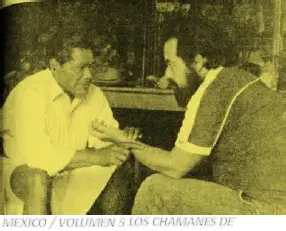
دون أنطونيو من تشينالهو يجس نبض المؤلف.
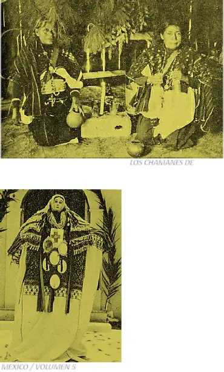
مثال لصورة دينية: القديسة مارتا في سان خوان تشامولا. لاحظ المرايا. تصوير خوسيه فيسينتي ريسينو، من المعهد الوطني للسكان الأصليين INI في تشياباس.
[ملاحظة تنسيق: صورتا الصفحة 85 مجتمعتان في الصورة السابقة؛ زوجات القادة في الأعلى، والصورة الدينية في الأسفل.]
زوجات قادة التشامولا. تصوير خوسيه فيسينتي ريسينو، من INI في تشياباس.
كانت سان خوان تشامولا تحتفل بالقديسة روزاليا عندما زرتها. وتوهجت مئات الشموع داخل المكان، الذي غُطيت أرضه بأوراق الصنوبر وأغصانه الصغيرة. وكان الإيلولات «يغرسون» الشموع في الأرض بعد إذابة قواعدها بلهب شمعة نذرية، ويضعونها في صفوف منتظمة تمامًا، فتتشكل في النهاية مربعات من نور راقص. وكان دخان الكوبال وضوء الشموع ورائحة أرض الصنوبر يملؤون الجو بطابع مثير وغامض. وأثارت فيّ أناشيد الإيلولات وصلواتهم، ومشهد جاسي النبض والأسر المحاطة باللهيب والصور المكسوة بالمرايا، رغبة في فهم ما يحدث هناك.
لفت انتباهي أحد الإيلولات. كان راكعًا بجانب مريضه، يجس نبضه محاطًا باللهب، ويتحدث باتجاه المذبح الرئيسي. وظل يتكلّم وحده ساعات، وكان الإخلاص في كلامه ملموسًا حتى لمن لا يفهم كلماته.
دون أنطونيو من تشينالهو
التقيت دون أنطونيو في اليوم التالي. وكان ذا حضور قوي ونقي، يرتدي مئزرًا أبيض تقليديًا وحزامًا جلديًا داكنًا مشدودًا حول خصره. وقد أثرت فيّ نظافته وقوته. وهو من أكثر الإيلولات احترامًا في مرتفعات تشياباس، ويعيش في تشينالهو، ويقصده الناس لطلب المشورة والمساعدة والعلاج.
أخبرني أنه كان يعلم أنني سأزوره لأنه رأى ذلك في حلم. وقال إن القدرة التنبؤية أثناء الحلم تتيح له معرفة الأمراض التي ستواجه منطقة أو جماعة معينة. وحين يتلقى رسالة عن مرض مستقبلي، يبلغها للسلطات الدينية وإيلولات آخرين ورسل، فيصلّون معًا على جبل لمحاولة صرف المرض، أو يتخذون تدابير بتحضير أعشاب طبية محددة لمواجهته. ولذلك لا يقتصر نشاطه على العلاج، بل يشمل الوقاية أيضًا.
الإيلول عدو «أكتشاميل»، أي الساحر الذي يمرض الناس. وفي الحلم يدخل الإيلول طريقه بوصفه معالجًا، ثم يجب أن يثبت للجماعة مواهبه العلاجية. ويقول دون أنطونيو إنه عندما يجس النبض، يتحدث إليه الدم ويبلغه سبب مرض المريض. ويقول الدم إن كان المرض جسديًا أو روحيًا، طبيعيًا أو ناتجًا عن أكتشاميل، ويقول كذلك كيف يُعالج.
بحسب الإيلولات، يستطيع أكتشاميل قطع وجود المريض، وهو ما يسمونه Tuchvilosa. وعلى الإيلول أن يوحد الوجود، zakova، كي يبلغ الساحر نهايته الطبيعية، ولا يُنتزع من الحياة قبل أوانه.
[ملاحظة ترجمة: يقول المصدر «الساحر» في الجملة السابقة، رغم أن سياق العلاج يشير إلى المريض؛ أُبقي اللفظ كما ورد.]
وبحسب دون أنطونيو وإيلولات تشياباس، توجد روح صغيرة، chulel bikit، وروح كبيرة، chulel muk. وعندما تمرض الكبيرة يتأخر موت المريض طويلًا، أما عندما تمرض الصغيرة فيكون المرض خاطفًا.
عندما يأتي المرض عقابًا من الله، يسهل علاجه نسبيًا. أما إن جاء من بوكوج، فيصعب علاج المريض جدًا، لأن بوكوج كائن شرير وأناني يريد الإيذاء.
ويرى الإيلولات أن هناك مناطق من الأرض يشغلها بوكوج، تسمى Yahualbalumil، لا ينبغي زيارتها، فضلًا عن سكنها. وإذا عاش إنسان في مكان كهذا مرض وقد يموت.
بحسب دون أنطونيو، يتعلم جَسّاس النبض مهنته بطريقة سحرية، عادة عبر الأحلام. ومن أكثر عناصر التشخيص المرتبطة بالنبض إثارة للاهتمام المقارنة بين الجانبين. ويؤكد أن من يتساوى نبض يمناه ويسراه شخص سليم، ويمتلك كذلك روحًا واحدة غارقة في الله. أما من يختلف نبضاه فليس سليمًا، وقد يمتلك أكثر من روح. وأصحاب الأرواح الثلاث عشرة أشرار لا إصلاح لهم، رغم قوتهم وصعوبة التغلب عليهم. أما صاحب الروح الواحدة فمعرض للخطر؛ لأن من يستولي عليها يتركه دون فرصة للبقاء. ولهذا يجب على من يتساوى نبضاه ويمتلك روحًا واحدة أن يكون شديد الحذر.
من الواضح أن مفهوم تساوي النبض على الجانبين يشبه كثيرًا مفهوم التماسك المرتفع بين نصفي الكرة المخية. وأجرؤ على اقتراح أن المفهومين يتحدثان عن الواقع نفسه. فالإنسان الذي يرتفع تماسك نصفي دماغه، أي تتشابه نبضتا يمناه ويسراه، إنسان موحد، ولذلك يمتلك روحًا واحدة. أما من يعيش في حالة تماسك منخفض، فهو مشتت وغير موحد، ولذلك يمتلك أكثر من روح.
وبالمصطلحات السينترجية، يعني هذا وجود حالات التماسك المحلي على حساب تماسك قاعدي غائب، فينتج نظام يفتقر إلى التلاحم والوحدة.
وكون دون أنطونيو قادرًا على الشعور بوجود أمراض جماعية، بل والتنبؤ بحدوثها، يدل على أنه في حالة سينترجيا عصبية مرتفعة، وقادر على كشف حالة المجال الفائق أو الشعور بها مباشرة.
وتوجد مؤسسة إيلولية تسمى C’oponejuits، أو «مصلّي التلال». ويُفترض أن هؤلاء، إلى جانب قدرتهم على كشف المجال الفائق، يمتلكون القدرة على تعديل خصائصه.
يعدّ دون أنطونيو نفسه صاحب روح واحدة وفي حالة تشابه مرتفع بين الجانبين. وباللغة الفيزيولوجية، يعرّف نفسه بأنه في حالة مرتفعة من التماسك بين نصفي الكرة المخية والوحدة والسينترجيا العصبية. ومن هذا المنظور يمكن فهم حساسيته العالية للمجال الفائق، وقدرته على التنبؤ وتعديل حالته.
ومن ناحية أخرى، فيشيع في الشامانية المكسيكية أن يدخل المرء طريق الشامان في المنام، وأن يتلقّى التعليم في أحلامه.
ويذكر شامانات كبار، مثل دون بانشيتو ودون لوسيو ودون أنطونيو نفسه، ذلك بوصفه خبرة شخصية حقيقية. وتتفق النتائج الحديثة عن ارتفاع التماسك بين نصفي الكرة المخية أثناء النوم، كورسي، 1986، مع وجود حالات سينترجيا مرتفعة خلاله.
يستخدم الإيلولات إجراءات علاجية أخرى إلى جانب ما وُصف. ويؤكد دون أنطونيو أنه عالج عدة حالات من Chulel bikit بالدجاج، الذي يُفرك به جسد المريض ليمتص مرضه أو أذاه. ويراقب الإيلول سلوك الدجاجة بعد ذلك. وفي حالات Chulel bikit تموت الدجاجة عادة بعد ثلاثة أيام. وإذا حدث ذلك، يعرف الإيلول أن المرض سيُشفى، لأنه انتقل كاملًا إلى جسم الدجاجة. ويستخدم شامانات مكسيكيون آخرون هذا الإجراء أيضًا، ومنهم دون لوسيو.
ومن الإجراءات المشتركة مع شامانات آخرين التطهير بالبيض. ويؤديه الإيلول، لكنه لا يستخدم إجراء التشخيص بـ«النظر» الذي يستخدمه غيره.
بحسب دون أنطونيو، قد يكذب نبض الذراع اليمنى، ولذلك لا يُعتمد عليه كثيرًا. أما نبض اليسرى فلا يكذب أبدًا، لأنه أقرب إلى القلب. أي إن الإيلول يعد الجوانب المرتبطة بالقلب، كالانفعالات والمشاعر والمحبة، أهم.
تحدث Chulel bikit عند تسلل روح غريبة، ومهمة الإيلول إبعادها، لكي يستعيد المريض الاتصال بروحه ولا يمتلك سواها.
ويؤكد دون أنطونيو أن الإيلولات قديمًا استطاعوا العلاج عن بُعد بقوتهم الذهنية وحدها. أما الآن فالقوة، بحسبه، أضعف، ولا يمكن إجراء علاج عن بُعد إلا بوجود شيء من ملابس المريض.
وأخيرًا، يقول إن روحين يمكن أن تتوحدا في شخص واحد عبر الملاحظة. وهذه تساعد على الاتحاد، لكنها لا تكفي إجراءً علاجيًا؛ بل يجب إضافة الصلاة إليها. وكلاهما يكفي للتوحيد والشفاء.
ويغري التفكير هنا بأن الإيلول يرى إجراءات الملاحظة الخاصة والفردية غير مكتملة، لأنها تهمل وجود شيء خارجي أشد قوة. وهذا الشيء، بحسب دون أنطونيو، هو ما يغذي الروح، وهو الله. فالله وفعل الملاحظة يوحّدان ويمنحان الطمأنينة.
[ملاحظة ترجمة: ورد pudoroso، أي «محتشم»، في وصف الشيء الخارجي؛ تُرجم هنا «أشد قوة» على قراءة poderoso التي يرجحها السياق.]
نص مقابلة مع دون أنطونيو من تشينالهو
سمح دون أنطونيو بتسجيل مقابلة أُتيحت لي فرصة إجرائها معه في تشينالهو، عند مدخل منزله، في يوم مشمس من سبتمبر 1986. وحضرها دون أنطونيو، والمؤلف، وخوسيه فيسينتي ريسينو مدير الأرشيف الإثنوغرافي في تشياباس، ومترجم، وزوجة دون أنطونيو، وابنتان من بناته. وتُرجم بعض الموضوعات إلى الإسبانية، ولذلك ينبغي افتراض وجود أخطاء في التفسير.
لاحظ المؤلف أن المترجم يغيّر الأسئلة والأجوبة بتبسيطها؛ فطُلب منه في نهاية المقابلة أن يكون أكثر حرفية. وإذا بدا الكلام أميل إلى الأمور المحسوسة، فمردّ ذلك إلى المترجم ورغبته في التبسيط. ومع هذا التنبيه، إليكم المقابلة:
إيلولات تشياباس: دون أنطونيو من تشينالهو
المترجم: ... لماذا يشعر بأنه بخير إلى هذا الحد، وبأنه قوي؟ إنه لا يفهم؛ هل يمكنك شرح شيء؟ مثلًا، لماذا تقول إنك تشعر هكذا، لماذا؟ أعط مثالًا.
المحاور: كفرح داخلي كبير، وسعادة كبيرة، كما لو أن نورًا في الداخل، لكن يُشعر به هنا، هنا يُشعر به أكثر، لماذا؟
«حديث باللغة المحلية».
المترجم: من رؤية الجو الجميل، الجو، أي شخص يأتي، لأنه هو أو الناس لا يستغربونه، بل بقلب مفتوح. وبالطبع يساعد الجو أيضًا. لكنه يقول إن ذلك بحسب الأشخاص الذين يأتون وسلوكهم وتعاملهم وما قد يكون؛ لأن هناك أشخاصًا يأتون بنوايا سيئة، يظهرون أنهم يأتون لاستخراج أشياء جيدة، ثم يكون الأمر العكس تمامًا. وقد جاءنا أشخاص كهؤلاء، وهو يعرف ذلك. يقول: إذا كانوا يأتون حقًا للبحث، لمصلحة الشعب والإنسانية، فذلك الشخص مرحب به. لكن هناك من يتظاهر فقط. وهذا أيضًا هو الانسجام، بحسب طريقة حضور كل شخص، فليس الجميع بلطفكم؛ هذا ما يقصده.
المحاور: والآن، من الذي يرحب؟ فالإنسان يرحب بإنسان آخر، لكن هل يمكن للأماكن أيضًا أن ترحب؟
المترجم: يقول إنه يرحب بكم الآن، وأكرر: إذا كنتم تأتون للزيارة بطريقة حسنة، فهو يطلب من الله ربنا أن يرحب بكم، وألا تكون هذه المرة الوحيدة، وأن تواصلوا الزيارة بين حين وآخر، على أن تكون نافعة للإنسانية أو للناس.
المحاور: عندما يجس النبض ويشخّص، كيف يعرف؟ كيف يتحدث إليه الدم؟ وما الذي يتحدث إليه؟ هل الدم وسيط؟ كيف ذلك؟
المترجم: «ضحك». لا أفهم هذا. لقد بدأنا ندخل في استشارة، أليس كذلك؟ لكي أشخّص يجب أن أطرح أسئلة كثيرة، أنا طبيب، فلندخل في استشارة. نسأله كيف يستطيع إجراء استشارة لتشخيص المرض؛ لأن التشخيص الذي سيعطيه يكون بالنبض، ولن يستخدم جهازًا ولا سماعة طبيب. فلندخل في ذلك.
«سؤال باللغة المحلية وجواب».
المترجم: عندما يأتي مريض، يجب أن يجس نبضه. يقول إنه يتكلم، كما لو كان يتكلم، لكن ليس بصوت مرتفع؛ بل يشعر من خلال النبض إن كانت لديه حرارة، وإن كان سحرًا، أو مرضًا في الروح، أو مجرد حسد. يشعر بذلك في الدم، في النبض، وكأن ذلك النبض يأتي من قلبه هو.
المحاور: كأنه قلبه هو؟
[ملاحظة ترجمة: يظهر في نص تفريغ المقابلة «pero en voz alta» ثم «sino que»، وهي صياغة مضطربة. قُرئت في الترجمة «لكن ليس بصوت مرتفع» اعتمادًا على تركيب الاستدراك والسياق. كما قُرئت medido في كلام المترجم على أنها médico، أي «طبيب».]
المترجم: نعم! ويقول إنها ليست تخيلات ولا أفكارًا، بل ما يجب عليه تشخيصه؛ فقد منحه الله القدرة على تصنيف نوع المرض بواسطة النبض.
صوت آخر: ألا يستطيع أي شخص فعل ذلك؟
المترجم: لا، يقول: ليس أي شخص.
المحاور: هل يستطيع جس نبضي، وإخباري كيف يراني، لكي أخوض التجربة وأفهم؟
«سؤال وجواب باللغة المحلية».
المترجم: يقول نعم.
المحاور: هل أقترب؟
دون أنطونيو «بالإسبانية»: إنسان طيب، قلب طيب.
«تداخل أحاديث باللغة المحلية والإسبانية».
المترجم: لديك قلب طيب جدًا. وهناك آخرون لا يأتون إلا للخداع. تقول إحدى اليدين إنه كاذب، لكن الأخرى لا؛ التي في جهة القلب تقول لا، القلب ليس كاذبًا. إذا كان هذا أكثر، واحد هنا، وكان الاثنان متساويين، فهذا جيد جدًا، متعادل، متين، قوة مع الله... وبعضهم ضعيف جدًا هنا.
المحاور: غير متساوٍ.
صوت آخر: وكيف أنا، دون أنطونيو؟
دون أنطونيو: ...
المحاور: قال لي إنني بخير.
المترجم: يقول إنك بخير.
صوت آخر: يريدان أن يتساويا.
صوت آخر: هل سيتساويان؟
صوت آخر: سيتساويان، لكن نعم، هو منخفض قليلًا، يريدان التساوي في كل شيء.
صوت آخر: متساوٍ.
دون أنطونيو «بالإسبانية»: توازن.
المحاور: أخبره أنني أدرس هذا، توازن الجانبين، وأنه، نعم...
دون أنطونيو: «عبارات باللغة المحلية لم تُترجم».
المحاور: التماسك! إنه يدرس وجود التماسك! نحن نسميه التماسك؛ أن يكون الجانبان متماسكين.
«أحاديث باللغة المحلية».
المحاور: عندما يوجد التماسك، أي عندما يتساوى النبض، هل يبدأ الله عندها بالإجابة؟ أي توجد علاقة بالتساوي.
دون أنطونيو «بالإسبانية»: هل هذا سؤالك؟
المحاور: نعم، نعم، نعم. أليس كذلك يا دون أنطونيو؟
دون أنطونيو «بالإسبانية»: بالضبط، نعم، نعم، نعم.
المحاور: عندما يوجد التساوي، هل يكون الإنسان أكثر اتحادًا ويتحد بالكل؟
دون أنطونيو «بالإسبانية»: هذا هو، نعم، نعم، نعم.
المحاور: دون أنطونيو، قيل لي إنكم تعتقدون بوجود chulel-bikik وchulel-muk وpukuj.
دون أنطونيو «بالإسبانية»: آه، chulel-bikik! نعم، هذا هو، هكذا.
«أحاديث باللغة المحلية».
المترجم: نعم، لننتقل إلى bikik chulel، chulel kikik.
المحاور: chulel kikik؟
المترجم: فقط بالعكس.
المحاور: آه! إذن bikik chulel؟
المترجم: bikik chulel.
صوت آخر: هذا خطير جدًا، يقتل بسرعة.
المترجم: يقول فقط إن هذا خطير جدًا، لأن bikik chulelal يشبه، لنفترض، أشخاصًا عصابيين أو شديدي العصبية؛ أي شيء صغير لا يعجب أحدهم قد يجعله يقتل فورًا. هذا هو bikik chulelal، لأنه قد يقتل بسرعة. لكن إذا أمهله الوقت لجس النبض والشعور به، فقد لا يحتاج إلا إلى النفخ ليُشفى. وإلا فقد يقول النبض أيضًا إنه يجب أن يصلي، ويشعل شموعه وبخوره، وربما يقدم دجاجة للأكل وتامالًا وقليلًا من الشراب الكحولي. هذا من أجل ذلك، لكنه خطير جدًا... ويسمونه الروح الصغيرة، هذا هو bikik chulelel، الروح الصغيرة.
المحاور: لكن هل لدينا جميعًا روح صغيرة؟
المترجم: جميعًا.
المحاور: لكنها أحيانًا تكون معتلة، وقد جرى اختبار ذلك.
«أحاديث باللغة المحلية».
المترجم: الروح الصغيرة ليست روح الشخص، لا روحي ولا روحك؛ بل تأتي روح صغيرة أخرى غريبة لتهاجمك.
المحاور: آه!
المترجم: روح أخرى تهاجمك.
المحاور: طبعًا، ولهذا يمرض.
المترجم: عدوك، كما قيل منذ قليل عن الشخص العصابي؛ مثلًا، أنت تتحدث جيدًا، لكنه فهمك خطأ، فيقتلك الآن بمسدس أو بندقية. قد تقتلك روح أخرى، شخص آخر.
«أحاديث باللغة المحلية».
المترجم: بحسب الحالة يجب أن يشعل شموعه؛ ستًا من هذه الألوان المختلفة، وثلاث عشرة من الصغيرة التي لم تُشعل.
صوت آخر: هذه لله في السماء، وتلك لما يسمونه بوكوج، الحسد، وهي ملونة؛ وهذه لله.
«أحاديث باللغة المحلية».
المترجم: الشموع التي أرانا إياها، البيضاء لله. ويجب أولًا أن يكلم الله، كي يساعده على الكلام مع بوكوج أيضًا. وبوكوج هو الشيطان، إبليس، سمّه ما تشاء. لماذا؟ لأنه يسبب الشر دون إرادة الله؛ ولذلك يجب أن يكلم الله أولًا، ثم ينتقل إلى الكلام مع الشيطان. فلنقل إن بوكوج هو الشيطان. وهذه الشموع التي أرانا إياها، الحمراء والملونة، ليكلمه كي يكف عن إيذاء عدو يهاجم شخصًا. ويمكن أن يقال له: توقف، تعال. وإذا كان صديقًا مشاكسًا جدًا: كف عن العبث، فلنشرب جعة ونتفاهم، أليس كذلك؟ وهذا ما يفعله مع الشيطان كي يكف عن إيذاء الروح أو الشخص الآخر، لكي يتوقف عن العيش.
[ملاحظة ترجمة: تنتهي العبارة في المصدر بـ«لكي يتوقف عن العيش»، رغم تعارضها مع سياق حماية المريض؛ حُفظت كما وردت.]
«أحاديث باللغة المحلية».
المترجم: المثال هو المحامي؛ فالطبيب التقليدي مثل محامٍ يجب أن يتحدث أولًا إلى الرئيس، وهو الله، لكي يجتمع الثلاثة: الطبيب التقليدي والله والشيطان، كما نحن هنا. أولًا يكلم الله، ثم يطلب منه أن يساعدنا على إقناع هؤلاء. لنفترض أننا شياطين نريد أخذه وقتله وموته؛ بعد الشموع يجب أن يقدم قربانًا للشيطان، دجاجة أو ديكًا مثلًا. ويُسلم للشيطان كي يأخذ روح الدجاجة بدل روح الإنسان، فينصرف مقتنعًا. أو لا أدري، الشر، من يسبب الشر، يُعطى شمعته ودجاجته، روح الدجاجة، ليطمئن ويكف عن الأذى.
«أحاديث باللغة المحلية».
المترجم: بعد الصلاة وتقديم الشمعة والدجاجة مع البخور والمذبح، يمكن وضع أغصان وأزهار حيث يطلب الخير للمريض. وبعد أن ينتهي يأخذ الدجاجة، ويقدمها، أو الديك، بدل روح المريض. ويمسكها ويكلمها وهو يمسح بها جسد المريض، ويطلب، إذا كانت هناك حمى أو برد، خروج المرض من الجسد، وأن تحمل هذه الدجاجة أو هذا الديك المرض. ويمررها للتطهير من المرض، على الظهر، فيختفي. ويقول إنه إذا كان الشخص سيُشفى حقًا، فإن الدجاجة تموت بعد قليل، ولا يأكلونها.
«أحاديث باللغة المحلية».
المحاور: وهل يأخذ بوكوج لهب الشمعة أيضًا؟ هل لهبها هدية له؟ هل يُقدم أيضًا؟
المترجم: الأمر مثل تحقيق عند قاضٍ أو محامٍ؛ هناك نزاع بين شخصين، ربما يقتل أحدهما الآخر، لا أدري. ولكي تنتهي المشكلة يجب استدعاؤهما، وعلى القاضي أو السلطة إقناعهما بإنهائها. ولإنهاء المشكلة أو الحقد، يجب أن يتلقى كلاهما هديته، لكي ينصرفا راضيين ويكفا عن الأذى. وقد تحدث عن الشموع: البيضاء لله، والصفراء والملونة للروح الشريرة، لكي تنصرف راضية. وهي لا تتلقى الشموع فقط... بل تُقدم الدجاجة أيضًا لكي ترضى وتنتهي المشكلة.
المحاور: وماذا عن muck chulelak؟
«أحاديث باللغة المحلية».
المترجم: الآن ندخل كأننا في السياسة. هناك أشخاص في اليقظة يبدون طيبين جدًا، يأخذك أحدهم ويقدم لك مشروبًا، لكنه يخدعك، يتظاهر بدعوتك. ولا توجد مشكلة في اليقظة، بل في الحلم. فنحن الآن مستيقظون، وواعون بما نفعل، وروحنا ونفسنا داخلنا؛ لكن المشكلة تأتي بعد ذلك، حين ننام...
«مقاطعات بسبب زوار، وأحاديث باللغة المحلية، وتعليقات على الموقف، ثم أحاديث باللغة المحلية».
المترجم: هل تؤمنون بالحلم؟ هل تصدقونه أم لا؟ هذا سؤال منه.
المحاور: أشعر أن هناك نوعين؛ نوعًا داخليًا، يأتي من الداخل مثل الخيال، لكن توجد أيضًا تفاعلات. أي ليس هناك نوع واحد فقط. أعتقد أن هناك نوعين: داخليًا وخارجيًا، أو مزيجًا منهما.
المترجم: يقول إنه كان يعلم أنه سيستقبل زيارتكم، وإنه رآكم في الحلم. وتحدث عن الدكتور أوراسيو؛ ففي حلمه قبل يومين، قبل أن يأتي إلى سان كريستوبال، قيل له: انتبه، ستكون لديك زيارة، اعمل، اعمل، وستكون لديك زيارة. وقد عرف بكم في حلمه، في روحه أو نفسه، وعرف أنكم ستأتون.
المحاور: هذا يقودنا إلى السؤال الثالث. نعتقد أن هناك زمنًا، أليس كذلك؟ وأن هناك ماضيًا ومستقبلًا وحاضرًا، ونظن أن هذا هو الواقع، كما نظن أن هذا حقيقي. لكن ألا يمكن أن نكون مخطئين؟ أنا على الأقل لا أملك ثقافة دون أنطونيو. فإذا أمكن رؤية المستقبل في الأحلام، فما الذي يحدث فعلًا؟
«أحاديث باللغة المحلية».
المترجم: يقول إن هناك أمراض حمى وإسهال وأمراضًا تنفسية، لكنه حلم بها منذ أيام، وقيل له أن يحذر لأن أمراضًا كثيرة من هذه الأنواع ستأتي. ولم يكن قد ذكر ذلك. والآن جاءه كثيرون بالحمى في هذه المنطقة، وفي كانكوك وأوكسشوك وأوكوسينغو وسان بابلو وأماكن أخرى، حيث توجد أمراض كثيرة الآن؛ لكنه كان يعرف قبل ذلك.
دون أنطونيو «بالإسبانية»: كلها زكام، كلها حمى.
صوت آخر: ومن أين يأتي المرض يا دون أنطونيو، ألا يُعرف؟
دون أنطونيو «بالإسبانية»: لهذا يُلاحظ هناك، هكذا يُلاحظ؛ مرض من الله، عقاب من الله.
«أحاديث باللغة المحلية».
صوت آخر: أريد أن أسأل، بعد كلامك هذا يا دون أنطونيو: عندما يكون المرض بإرادة الله وعقابًا منه، ألا يمكن علاجه؟
دون أنطونيو «بالإسبانية»: يمكن أسهل؛ مرض الله أسهل، إنه عقابه فقط، ويمكن علاجه. يمكن النفخ... لكن الأصعب حرارة بوكوج.
«ضحك».
المترجم: كان يقول عن هذا الحديث والحلم الذي رآه إنه يعرف أن الوقت لن يكفيه لعلاج هذا العدد من الناس. ولهذا لديه الآن طب وقائي؛ فقد اجتمعوا مع أشخاص عدة، وستكون الليلة جلسة مع جماعته وشيوخهم وأطبائهم التقليديين لوضع الطب الوقائي. ويكون بتقديم القرابين: الشموع والبخور والأغصان وقليل من المشروبات الغازية، وربما شيء من الكحول، لكن ليس كثيرًا، سائلين الله ربنا أن يخفّ انتشار المرض. وفي وقت مخاطبة الله يخاطبون الشيطان أيضًا، كي يتفقا ويكف عن الأذى.
صوت: ومتى ستفعلون ذلك؟ هل تدعوني، دون أنطونيو؟
دون أنطونيو «بالإسبانية»: حسنًا جدًا. لأن هذا من أجل ألا توجد أمراض.
صوت: شكرًا يا دون أنطونيو.
المترجم: أعرف علاجاتهم؛ وعندما يفعلون ذلك يسمونه «ميشا».
صوت: آه، إنها الميشا! ستقيمون ميشا خاصة للطلب، آه!
المترجم: نعم، لكنها خاصة؛ يشكرون الله لأننا أحياء ولأن لديهم طعامًا وذرة وفاصولياء. يشكرونه على ذلك، ويطلبون منه أيضًا الصحة، وألا يتدخل الشيطان كثيرًا للإيذاء.
المحاور: لدي أسئلة. عندما يكون الإنسان متحدًا، أي حين يوجد التساوي، ويكون متحدًا ويتحد، فهل يؤثر ما يفعله في الجميع؟
المترجم: لم أفهم.
المحاور: عندما يكون في وحدة، ومتصلًا بالله، لنقل، وليس بالله وحده، بل بكل شيء، فهل يتغيّر سائر ما حوله بفعل ما يفعل؟ أي ما التأثير الذي يعتقد دون أنطونيو أن شخصًا يستطيع ممارسته في البقية، في الآخرين؟ هل يستطيع مثلًا تعديل التفكير؟ هل يستطيع بذهنه تغيير ما يحدث في البلدة؟ ما مدى علاقته بوصفه فردًا بالبقية؟ لنفترض وجود مشكلات وحسد في البلدة؛ إلى أي حد يستطيع دون أنطونيو تغيير ذلك بنفسه، دون مساعدة، وهو جالس هنا لا يخرج؟
المترجم: هل يستطيع ذهنيًا المساعدة أو الهجوم؟
المحاور: ليس الهجوم، إلى أي حد يستطيع حل مشكلة؟
المترجم: نعم، نعم، فهمت تقريبًا.
المحاور: لكن مباشرة وفي صمت، لنقل.
المترجم: سنسأله. تذكرت قصة؛ ربما كان أبي يحدثني عن أشخاص قديمًا يسمون totil-medil، أي الأب أو الراعي. وكانت لهم قدرات جميلة جدًا دون أن يتحركوا، كما تقول. وكان يأتيهم شخص... في ذلك الزمن كان التواصل وحده يكفي؛ يأتي أبو المريض أو أمه ويحمل رقائق ذرة وقليلًا من البوسول، وقرصًا أو قرصين من الغورديتا، مما يُستخدم هنا. ويخاطب الشيخ: يا أبي، جئت أكلمك، ابني مريض جدًا، لديه كذا وكذا، وهذه هديتك الصغيرة. فيقول: رأيت ما لدى ابنك، لا تقلق، سيكون أفضل حين تصل. وهكذا كان العلاج، لم يذهب الشيخ إلى بيت المريض، بل يعالجه من هناك ذهنيًا، عن بُعد، وبصورة غير مرئية؛ فمن سينقل ذلك؟ لا أحد. هل هذا سؤالك؟
المحاور: وكذلك بصورة عامة. مثلًا، إلى أي حد يستطيع دون أنطونيو تغيير مصير المكسيك؟ هل تفهمني؟ إلى أي حد يستطيع شخص ذو قدرة تغيير أمة أو الكوكب؟ كيف يشعر بهذا؟
«أحاديث باللغة المحلية».
المترجم: بحسب الزمن الذي يمضي، كان ما قلته موجودًا قديمًا. لكنه يقول إنه لا يستطيع ذلك الآن؛ العلاج ذهنيًا أو إصلاح الأمور بالذهن وحده عن بُعد، لا يستطيع. لكنه يستطيع علاج شخص يأتي من سان كريستوبال أو مكسيكو أو أي مكان، إذا أحضروا ثياب المريض وسأل عن اسمه ليعالجه. أما مجرد التفكير في علاجه عن بُعد، فلم يعد يستطيع.
صوت: ألم يعد هناك أشخاص كهؤلاء؟ ألا يعرف أحدًا؟
المترجم: لم يعد هناك، لا.
المحاور: لدي أسئلة كثيرة أخرى، لكن لا أدري إن كان دون أنطونيو يريد. مثلًا، هناك شيء يسمى sacorá، أي وصل الوجود الذي قُطع، أليس كذلك؟ أريد معرفة كيف يكون ذلك. فقد قيل لي إن هناك اثنين من haxameles يفعلان tush chihora، «آه، ضحك»، وإن ما يفعله الإيلول هو sacorá.
«أحاديث باللغة المحلية، وحديث بالإسبانية عن الوقت المتاح، وانقطاع المقابلة».
المحاور: هل يعتقد أن الروح متحدة بالله أم مختلفة عنه؟ وهل لدينا روح واحدة؟ ذكر سابقًا، وقال لي إن لدي روحًا واحدة، لكن هناك آخرين لديهم أرواح كثيرة. كيف ذلك؟ وكيف تتحد بالله، أو ما علاقتها به؟
«أحاديث باللغة المحلية».
المترجم: يقول إن صاحب الروح الطيبة، مثلك، له روح واحدة. يكون مع الله، ويستطيع أن يظلّ إلى جانبه وفي حضنه كصديق طيب، وبوسعهما أن يفعلا خيرًا كثيرًا. أما أصحاب الأرواح الكثيرة فهم مع الشياطين، لأنهم لا يحاولون إلا فعل الشر. ويمكن أن يدعو بعضهم بعضًا: هيا، لنؤذِ ذاك، تعال، لنؤذِه، أو لنشرب جعة ونخطط لإيذائه. أما من له روح واحدة مثلك، فليس خطرًا على الناس، بل يكون مع الله ويستطيع فعل الخير. وفي الوقت نفسه، عندما يرى الآخرون، وغالبيتهم ليسوا طيبين، أنك مع شخص عظيم وطيب مثلك، سيشعرون بالحسد: لماذا انضم هذا إلى ذاك؟ لماذا ليس معنا؟ فلنؤذه.
الملحق الأول
الجهود المستثارة لدى الحيوانات أثناء التعلم [9]
يعرض هذا الملحق دراسة تجريبية للعلاقات بين النشاط الكهربائي في أدمغة الحيوانات وعملية التعلم.
ولأن التعلم يتضمن معالجة معقدة للمعلومات، تفترض الدراسة أن الجهود التي تستثيرها المنبّهات التي تعلّم الحيوان الاستجابة لها تُظهر تشابهًا في أشكالها عبر المناطق الدماغية المختلفة، مما يدل على ازدياد الارتباط الدماغي، أي ازدياد عمليات توحيد الدماغ.
وبعبارة أخرى، تُظهر الحيوانات الخاضعة للتعلم ميلًا إلى حالات يرتفع فيها ارتباط نشاطها الكهروفيزيولوجي. وتُظهر التجربة التالية على القطط صحة ذلك؛ إذ لوحظ تشابه كبير في هيئة الجهود المستثارة المسجلة من بُنى دماغية مختلفة في مراحل الاشتراط المتراكمة.
في جميع الحالات، أُجري التدريب السلوكي في حجرة شبه صامتة لدراسة المنعكسات، خُفّفت فيها الاهتزازات الميكانيكية وعُزلت كهرومغناطيسيًا، وهي حجرة فاراداي. وتعلمت الحيوانات فيها البقاء ساكنة تمامًا فوق المنصة، انتظارًا لعرض المنبه الشرطي، الضوء والصوت.
وعند ظهور المنبه الشرطي، كان على الحيوان أن يشرب الحليب أو يعود إلى المنصة.
النتائج
كانت النتائج كما يلي: لدى خمس قطط خضعت للتدريب السلوكي على الضوء الأخضر، أظهر التسجيل من النواة المذنبة والمهاد ظهور جهد كهربائي ثنائي الطور، وثلاثي الطور أحيانًا، قطبيته سالبة في الانحراف الأول، وموجبة في الثاني، وسالبة في الثالث حين يظهر. وبلغ متوسط كمون هذا الجهد ثمانين ملي ثانية، لكنه تغير عكسيًا مع شدة المنبه، كما في الشكل 1.1. ويعرض الشكل جهودًا مستثارة بمنبهات ضوئية مختلفة الشدة؛ ويُلاحظ ازدياد الكمون مع انخفاض شدة المنبه. ومن المثير للاهتمام أن مقدار الجهود المستثارة لم يتغير عند هذا الانخفاض في شدة المنبهات الشرطية.
[حاشية 9: نُشر جزء من هذا القسم في: Grinberg-Zylberbaum, J., Prado Alcalá, R. وBrust Carmona, H., 1973, “Correlation of Evoked Responses”, Physiology and Behavior, 10(6):1005–1009.]
أما مقدار الجهود فكان يتغير تبعًا لمرحلة التدريب السلوكي. فخلال مرحلة المحافظة على الاستجابة الشرطية، ظل ظهور هذه الجهود ومقدارها ثابتين نسبيًا، بينما انخفض مقدارها وأصبح ظهورها غير منتظم بعد إيقاف التعزيز، أي أثناء الانطفاء، حتى اختفت في معظم الحالات.
وفي إعادة الاشتراط، ازدادت الاستجابات السلوكية الصحيحة والاستجابات الكهربائية، بحيث بلغت النسبتان السلوكية والكهربائية 80% منذ الجلسة الأولى لإعادة الاشتراط.
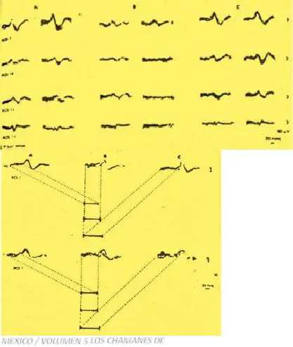
[ملاحظة تنسيق: الشكل 1.2 في أعلى الصورة السابقة، والشكل 1.1 في أسفلها.]
الشكل 1.1. يزداد كمون الجهد المسجل في النواة المذنبة والمهاد مع انخفاض شدة المنبه الضوئي، بينما لا يتغير مقدار الجهود. كانت الشدة في A مقدار 3.5 قدم–شمعة، وفي B مقدار 2.5، وفي C مقدار 1.5.
الشكل 1.2. يوضح العمود A الجهود التي يستثيرها المنبه الشرطي EC والمسجلة في النواة المذنبة NC لدى ثلاث قطط، وفي النواة المركزية الوسطى للمهاد لدى أحدها، خلال المحافظة على الاشتراط. وفي B تنخفض هذه الجهود أو تختفي أثناء الانطفاء، وفي C تعود مع إعادة التعزيز. وفي هذا الشكل والأشكال المماثلة، يمثل كل خط جمعًا فوتوغرافيًا لخمس مسحات على راسم الذبذبات.
يعرض الشكل 1.2 تغيرات سعة الجهود خلال المحافظة على الاستجابة الشرطية وانطفائها وإعادة اشتراطها.
ارتبطت هذه التغيرات مباشرة بالاستجابة السلوكية بدقة كبيرة، كما في الشكل 1.3؛ إذ يتناقص انتظام الجهود ومقدارها مع انخفاض عدد الاستجابات الصحيحة، عند إيقاف التعزيز، ثم يعودان إلى الارتفاع بعد تطبيقه مرات قليلة.
لوحظ ذلك في جميع الحالات والبُنى المسجل منها، باستثناء حالة واحدة لم نلاحظ فيها، عند إعادة الاشتراط، عودة الجهد الذي سبق أن سجّلناه في النواة الظهرية الإنسية للمهاد.
قورنت التغيّرات المئوية في الاستجابة السلوكية، وفي ظهور الجهد المستثار المسجّل من النواة المذنّبة، وفي سعة ذلك الجهد، خلال المحافظة والانطفاء وإعادة الاشتراط، باستخدام تحليل التباين بتصميم القطاعات العشوائية.
وُجدت تغيرات دالة باحتمال مصاحب للحدوث بالمصادفة أقل من 0.005 للتغيرات السلوكية وظهور الجهد، وأقل من 0.025 لتغير الجهد الكهربائي، بين المحافظة والانطفاء، وبين الانطفاء وإعادة الاشتراط.
ودُرست كذلك درجة الارتباط بين السلوك وظهور الجهد، باستخدام معامل سبيرمان لارتباط الرتب، rs. وتراوحت بين rs = 0.74 وrs = 0.97، وكانت جميعها ذات دلالة إحصائية باحتمال مصاحب للحدوث بالمصادفة أقل من 0.001.
لدى ثلاثة حيوانات زُرعت أقطابها قبل بدء الاشتراط، لوحظ أنه مع اكتساب السلوك الشرطي ظهرت في النواة المذنبة والمهاد جهود مطابقة للمسجلة لدى القطط السابقة.
وخلال اكتساب السلوك الشرطي، ظهرت هذه الجهود في نسبة متزايدة من المحاولات، لكن الاستجابات السلوكية الصحيحة ازدادت بوتيرة أسرع.
وتُوضح هذه النتائج في الشكل 1.4، الذي يعرض نتائج حيوان سُجل من نواته المذنبة ومهاده.
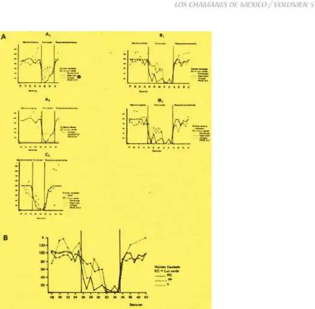
الشكل 1.3. رسوم تمثل تغير نسبة الاستجابات السلوكية الصحيحة، بخط متصل، وظهور الجهد المستثار في النواة المذنبة في A1 وB1 وC1، وفي المهاد في A2 وB2، بخط متقطع، وسعة ذلك الجهد بخط منقط، أثناء المحافظة على استجابة شرطية إجرائية وانطفائها واكتسابها.
ولوحظ لدى هذه القطط أيضًا انخفاض كبير في مقدار الجهود وانتظامها أثناء انطفاء الاستجابة الشرطية.
أظهر تحليل الارتباط بين السلوك المتعلم وظهور الجهود قيمة rs = 0.82، باحتمال مصاحب للحدوث بالمصادفة أقل من 0.001. كما بلغ الارتباط بين السلوك والجهد الكهربائي rs = 0.74، باحتمال أقل من 0.001.
استُخدم الصوت منبهًا شرطيًا لدى خمس قطط، وكانت هذه القطط قد تعلّمت من قبل أن تستجيب للضوء الأخضر.
أظهرت تسجيلات راسم الذبذبات للنشاط الكهربائي في النواة المذنبة جهدًا مستثارًا ظهر بعد المنبّه بمتوسط خمسة وعشرين جزءًا من الألف من الثانية. وكان يظهر في التسجيلات أحادية القطب ثنائي الطور، سالبًا ثم موجبًا، وأحيانًا ثلاثي الطور: سالبًا ثم موجبًا ثم سالبًا.
مع تكرار اقتران الصوت بالاستجابة والحليب، ازداد مقدار الجهد، وأصبح واضحًا جدًا بدءًا من جلسة الاشتراط الثانية، كما في الشكل 1.5. وكانت علاقة جهده الكهربائي باكتساب الاستجابة الشرطية وثيقة للغاية؛ إذ أظهر تحليل الارتباط معاملًا تراوح بين rs = 0.98 وrs = 0.99 لدى الحيوانات المختلفة، باحتمال مصاحب للحدوث بالمصادفة أقل من 0.001. وبالمثل، تراوح ارتباط السلوك بظهور الجهد بين rs = 0.94 وrs = 0.99، باحتمال أقل من 0.001.
وفي جميع الحالات التي سُجل فيها نشاط النواة المذنبة والنواة المركزية الوسطى للمهاد في الوقت نفسه، لوحظ توافق كبير، سواء في انتظام الجهود المسجلة من البنيتين أو في جهدها الكهربائي.
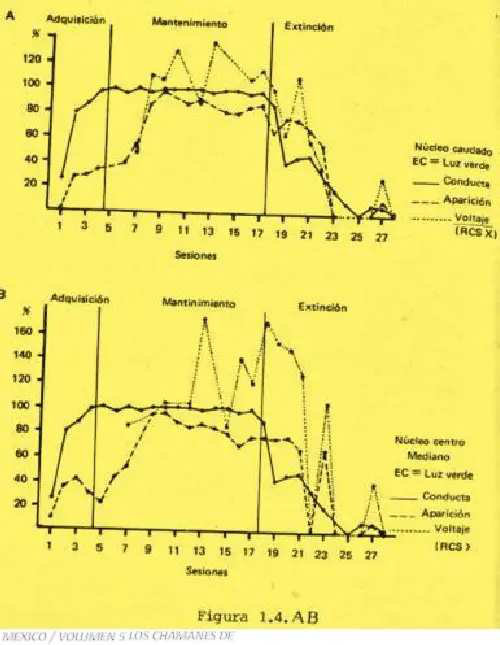
الشكل 1.4، اللوحتان A وB؛ وتأتي اللوحة C والشرح الكامل في الصفحة المصدرية التالية.
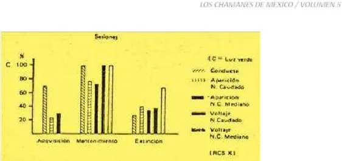
الشكل 1.4، A وB وC. رسوم توضح الزيادة التدريجية في الاستجابات السلوكية الصحيحة، بخط متصل، وفي ظهور الجهد المستثار المسجل من النواة المذنبة A والمهاد B، بخط متقطع، وفي سعة ذلك الجهد، بخط منقّط، أثناء اكتساب الاستجابة الشرطية RC. وتبقى المستويات المحققة ثابتة تقريبًا أثناء المحافظة عليها، ثم تنخفض عند الانطفاء. وتمثل الأعمدة في C متوسط الجلسات خلال الاكتساب، أربع جلسات، والمحافظة، ثلاث عشرة، والانطفاء، إحدى عشرة.
لدى الحيوانين المنتميين إلى الشرط 1، حُسب معامل الارتباط بين ظهور الجهود في البنيتين، فبلغ rs = 0.85، باحتمال مصاحب للحدوث بالمصادفة أقل من 0.0001. وبلغ ارتباط الجهد الكهربائي في البنيتين rs = 0.97، باحتمال أقل من 0.0001. وتدعم هذه الملاحظة فرضية ازدياد ارتباط النشاط الكهروفيزيولوجي بالتزامن مع ازدياد تعقيد الوظيفة المدروسة.
ملاحظات كيفية
يصف هذا القسم تغيرات سلوكية يصعب قياسها كميًا، ويبدو أنها تتزامن مع زيادة كبيرة في مقدار الجهود المستثارة. وظهرت هذه التغيرات كلما واجه الحيوان موقف تغيير أو تعديل في مخطط الاشتراط، أي «عدم يقين».
ظهر الموقف الأول لدى حيوانين في أول جلسة أُوقف فيها تعزيز استجابتهما للضوء الأخضر. ففي هذه الجلسة، كان أول سلوك عند ظهور المنبه الشرطي مغادرة المنصة نحو مشرب الحليب. لكن بعد عرض المنبه عدة مرات دون تعزيز، أخذ الحيوانان يلتفتان نحو المصباح أو باب المشرب، ويخطوان خطوة أو خطوتين ثم يتوقفان، وأحيانًا يبقيان فوق المنصة.
ازدادت مقادير الجهود المستثارة كثيرًا في هذا الموقف. وفي نهاية الجلسة، عندما ظل الحيوانان فوق المنصة رغم وجود المنبه الشرطي، بدأت الجهود تنخفض سريعًا حتى اختفت مع العروض التالية.
حدث الموقف الثاني أثناء اكتساب تثبيط شرطي. وتعلمت الحيوانات خلاله كبح استجابتها مدة تصل إلى ثانية واحدة عند عرض الضوء.
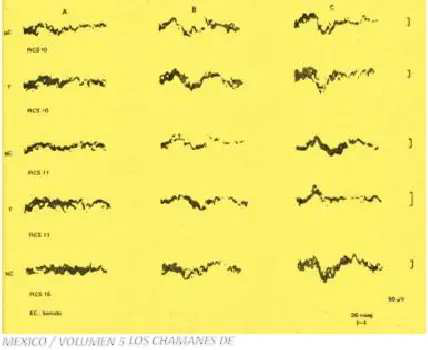
الشكل 1.5. يوضح الجهد المستثار بالصوت EC والمسجل في النواة المذنبة، 35، والمهاد، 25، خلال جلسات الاشتراط الأولى A والثانية B والثالثة C.
إذا صاحب الضوءَ منبه صوتي يأتي بعده بخمسمئة ملي ثانية، فلا تغادر الحيوانات المنصة. أما إذا لم يظهر الصوت، فتغادرها.
ويعرض الشكل 1.6 الاستجابات الكهربائية للنواة المذنبة أثناء أداء صحيح، أي عدم الاستجابة، وأثناء خطأ، أي الاستجابة، في التثبيط الشرطي.
عندما أحجم الحيوان عن الاستجابة كما تعلّم، سُجّل جهدٌ يستثيره الضوء وآخر يستثيره الصوت. أما حين استجاب خطأً، فلم يُسجَّل إلا الجهد الذي استثاره الضوء.
عندما بدأ الحيوان اكتساب التثبيط الشرطي، لوحظت تغيرات سلوكية تشبه كثيرًا حالة الانطفاء؛ إذ يخطو عند ظهور الضوء خطوات، ثم يتوقف ويلتفت إلى المصباح أو مكبر الصوت، وأحيانًا إلى باب الحجرة.
واقترن ذلك بزيادة واضحة جدًا في مقدار الجهود المستثارة بالضوء وبنمط الضوء والصوت. أما عندما كان الحيوان يندفع إلى الخروج عند منبه التثبيط الشرطي، أي لا يكتسب سلوك التثبيط، فكانت مقادير الجهود تنخفض.
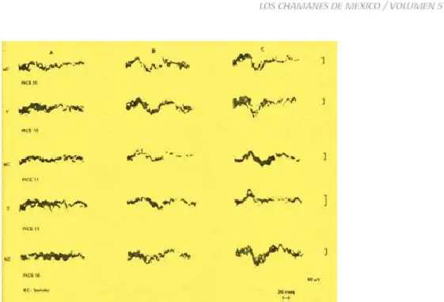
[ملاحظة ترجمة: الصورة المرفقة بتعليق الشكل 1.6 في المصدر تكرر الصورة السابقة للشكل 1.5؛ نُقلت كما هي، ولا تتطابق تفاصيلها مع وصف التعليق التالي.]
الشكل 1.6. تسجيلات النشاط الكهربائي للنواة المذنبة NC، وتغيرات جهد الخلية الكهروضوئية الناجمة عن حركة القط من المنصة إلى المشرب، Mov.، وعرض الصوت، ممثلًا بالخطوط الرأسية في Mov. يُظهر المسار العلوي خمس تسجيلات متراكبة لراسم الذبذبات أثناء الأداء الصحيح في مرحلة اكتساب التثبيط الشرطي. ويُظهر السفلي التسجيل في الظروف نفسها أثناء الأداء المصنف خطأ، أي مغادرة المنصة، في التثبيط الشرطي. وقد جرى إبراز الخطوط الرأسية في Mov. لتحسين الوضوح.
يمكن ملاحظة نتائج إحدى القطط أثناء اكتساب التثبيط الشرطي، والزيادة الناتجة في مقدار الجهود المستثارة بالضوء، في الشكل 1.7.
أما الموقف الثالث فحدث أثناء اكتساب قط استجابة شرطية للصوت. وكان تدريبه السلوكي شديد الصعوبة، بحيث لم يتمكن في الجلسات الأولى من مغادرة المنصة إلى المشرب من تلقاء نفسه. وكل ما فعله عند الصوت هو الالتفات إلى المشرب، ومع ذلك عُززت هذه الاستجابة.
في الجلسة التدريبية الخامسة، أُوقف تعزيز الالتفات، ولم يُطبق التعزيز إلا حين يتجه الحيوان بنفسه إلى المشرب. وفي جلسة الانتقال من تعزيز الالتفات إلى تعزيز المغادرة، أظهر السلوك الخصائص الموصوفة سابقًا؛ فكان الحيوان يلتفت إلى المشرب وإلى النافذة، ويخطو خطوات ثم يعود، وهكذا. وازداد مقدار الجهود في هذه الحالة بوضوح، كما في الشكل 1.8.
وتُعرض الجهود المستثارة المسجلة في جميع هذه المواقف السلوكية في الشكل 1.9.
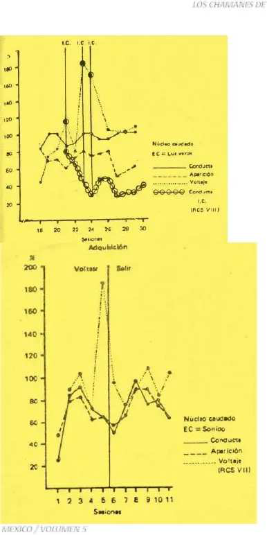
الشكل 1.7. رسم يوضح المحافظة على الاستجابة الشرطية للضوء، بخط متصل، والاكتساب المتزامن للتثبيط الشرطي، بخط متصل ذي دوائر. لاحظ الزيادة الكبيرة في جهد الاستجابات المستثارة بالضوء، بخط منقط، أثناء بدء التثبيط الشرطي واكتسابه.
الشكل 1.8. رسم يوضح اكتساب الاستجابة الشرطية للصوت لدى حيوان واحد S. قُسم الاكتساب إلى مرحلتين: الأولى، الجلسات 1–4، عُزز فيها الالتفات إلى المشرب؛ والثانية، الجلسات 6–11، عُززت فيها مغادرة المنصة. وفي الجلسة 5 أُجري الانتقال من الالتفات إلى المغادرة، ولوحظ ارتفاع كبير في مقدار الجهد المستثار بالصوت، بخط منقط.
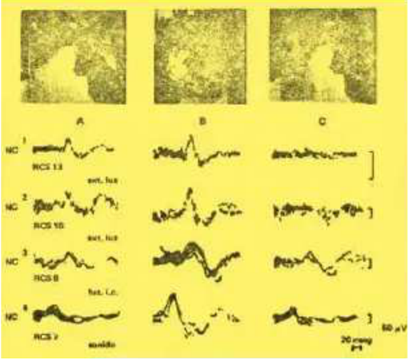
الشكل 1.9. يمثل 1 و2 الجهود المسجلة لدى حيوانين (S) خلال أول جلسة أُوقف فيها تعزيز استجابتهما للضوء. ويمثل A1 وA2 الجهود الأولى في الجلسة، وB1 وB2 الجزء الأوسط منها، وC1 وC2 الجزء الأخير. ويشير 2 إلى الجهود المسجلة أثناء المحافظة على الاشتراط للضوء. وفي B3 بدأ الحيوان اكتساب التثبيط الشرطي، وفي C3 كان الاكتساب متقدمًا جدًا. ويمثل 4 الجهود المسجلة أثناء اكتساب الاستجابة الشرطية للصوت EC؛ حيث A4 مرحلة «الالتفات»، وB4 مرحلة الانتقال من الالتفات إلى المغادرة، وC4 مرحلة المغادرة. ويعني NC النواة المذنبة. والتُقطت الصور في الأعلى قبل عرض المنبه الشرطي وأثناءه وبعده.
[ملاحظة ترجمة: يكرر تعليق الشكل في المصدر الرقم 2 عند الانتقال إلى وصف الصف الثالث؛ أُبقي كما ورد.]
الاستنتاجات
إن تشابه الجهود المستثارة المسجلة في النواة المذنبة والمهاد والقشرة الجبهية للحيوانات المدرَّبة يتفق مع الفرضية التي قدمتها في بداية القسم؛ أي إن ارتباط النشاط الدماغي يزداد أثناء عمليات التعلم المعقدة. وتظهر نتائج واستنتاجات مشابهة في الدراسات التجريبية لمجموعة إ. روي جون، 1973. كما أن زيادة مقدار الجهود المسجلة أثناء سلوك «عدم اليقين» تتفق مع الاستنتاج السابق وتعززه.
لم توجد في هذه الدراسة كلها حالة أعقد مما أسميه «عدم اليقين». والحصول على استجابات كهروفيزيولوجية مرتفعة ومتشابهة إلى هذا الحد في البُنى المدروسة أثناء هذا السلوك المعقد يدل على أنه كلما ازدادت الوظيفة تعقيدًا، ازداد ارتباط العناصر العصبية التي تقوم عليها.
النهاية
ملاحظة ناسخ النسخة المرفقة
«أُنجز النسخ والترجمة إلى الإنجليزية بواسطة أريستيديس دي خيسوس برييغو مارتينيث في 17 أبريل 2023، بتوجيه روحي لخدمة الخطة الإلهية لإيقاظ الوعي، دون هدف ربحي. ولموازنة الطاقات المقدمة، يرجى إرسال تبرعاتكم المقدَّرة إلى:
e.knotstherapy@gmail.com
In Lak’ech Ala K’in — أنت أنا آخر، وأنا أنت آخر!»
[ملاحظة ترجمة: تنص الإضافة على «الترجمة إلى الإنجليزية»، مع أن النص الذي تُرجم هنا من الملف المرفق إسباني. عنوان البريد طلب تبرعات من ناسخ المصدر، وليس من مترجم هذه النسخة العربية.]